Español o inglés, con el selector ES · EN de la barra superior. En este manual los nombres de botones, campos y menús se escriben como aparecen en pantalla en español, por ejemplo Empezar con mis imágenes →.
Cómo citar el programa
Barrera-Guzmán, L. Á. (2026). CytogeneticsPro: citogenética vegetal en el navegador (versión 1.0.0) [Programa de cómputo]. https://github.com/luisangelbg/CytogeneticsPro
Cómo citar este manual
Barrera-Guzmán, L. Á. (2026). CytogeneticsPro. Manual de usuario (1.ª ed.). Distribuido con CytogeneticsPro, versión 1.0.0. LABG Suite.
La cita del programa aparece también, lista para copiarse como texto o en BibTeX, en la sección Cómo citar de la portada de la app. El programa todavía no tiene un identificador digital (DOI): se añadirá a las dos citas cuando se publique. Código: https://github.com/luisangelbg/CytogeneticsPro · app en línea: https://luisangelbg.github.io/CytogeneticsPro/.
iPrivacidad
CytogeneticsPro funciona por completo dentro de tu navegador. Las fotomicrografías, las medidas y los proyectos que abres se leen en tu computadora y nunca se envían a ningún servidor: puedes trabajar con las imágenes de una tesis en curso o con datos sin publicar sin que nada de eso salga de tu equipo. El programa no usa cuentas, no carga nada de internet y no necesita conexión para calcular.
Las ilustraciones, los diagramas y las capturas de pantalla de este manual son originales: se generaron con el propio programa o con código escrito para el manual. Los cuatro ejemplos que se usan en las capturas son simulados: los nombres de las especies y de los lugares son reales, pero las medidas no son mediciones de ninguna preparación ni de ninguna publicación.
El manual sigue el mismo orden que la app: diez bloques numerados que se recorren de arriba abajo en la barra de la izquierda. Cada capítulo explica un bloque y lleva su mismo número —el capítulo 5 es el Bloque 5, y sus secciones y figuras se numeran 5.1, 5.2…—. La introducción no lleva número: sus secciones son I.1, I.2…
Cada capítulo empieza con lo que el bloque resuelve en un estudio citogenético, sigue con lo que hay en pantalla en el orden en que aparece y cierra con las reglas para leer el resultado y los errores más comunes. No hace falta leerlo de corrido: si sólo necesitas un cariotipo con su idiograma, bastan los capítulos 2 y 3; si ya mediste y quieres los índices, el 4. El apéndice B reúne las reglas de todos los bloques.
Un color para cada bloque
El color del bloque aparece en la apertura de su capítulo, en el número de cada sección, en la pestaña del borde de la hoja y en el índice, y es el mismo de la franja de la portada.
Bloque
Nombre en la app
Qué hace
1
Inicio
La lógica de la citogenética en lenguaje llano, dos laboratorios que calculan de verdad, los métodos con su fuente, los ejemplos, las referencias y cómo citar
2
Imágenes y medición
Calibrar, contar, trazar cada cromosoma y medir sus brazos sobre la fotomicrografía, o capturar y pegar las medidas
3
Cariotipo
Homólogos, promedios, clasificación, fórmula e idiograma
4
Asimetría
Los índices, qué mide cada uno y cuáles se recomiendan, con las categorías de Stebbins
5
Meiosis
Configuraciones, quiasmas, anormalidades, índice meiótico y polen
6
Ploidía y genoma
Conteos, nivel de ploidía, citometría de flujo y prueba de Allium
7
Bandeo y FISH
Bandas, fluorocromos y sondas sobre el idiograma
8
Comparación
Distancias, agrupamiento, componentes principales, evolución del número y citotipos
9
Docencia
Simuladores, ejercicios, autoevaluación, glosario y prácticas
10
Figuras e informe
Figuras, tablas, métodos redactados, informe y paquete reproducible
Tipos de recuadros
iNota
Aclaraciones y consejos prácticos que ahorran tiempo.
!Importante
Lo que puede cambiar tus conclusiones si se pasa por alto.
θTeoría en breve
La idea detrás de un cálculo, sin fórmulas innecesarias.
▸Ejemplo resuelto
Un caso con los ejemplos incluidos en el programa, con los números que da la app.
✓Regla de decisión
Si el resultado cae en este caso…
entonces esta es la lectura recomendada.
Son guías para interpretar, no leyes: lo que sabes de la planta, de la preparación y de cómo se midió siempre manda.
✕Cuando algo sale mal
Lo que suele fallar al usar el bloque —una célula sin calibrar, un homólogo en el par equivocado, un pico mal elegido— y cómo se arregla.
12
Dato clave
Una cifra o un hecho que conviene recordar; por ejemplo, el número de índices de asimetría que calcula el Bloque 4.
Convenciones de escritura
Así se escribe
Significa
Emparejar de nuevo todas
Un botón, campo o menú de la app, con su texto tal como aparece en pantalla en español.
Bloque 6›Histograma del citómetro
Una ruta: abre lo primero y dentro busca lo segundo.
Ctrl + S, .json
Una tecla, un nombre de archivo o un valor que se escribe tal cual.
2n, x, p, q, r, IC
El número cromosómico somático y el número básico; el brazo corto y el largo; la razón de brazos r = q/p y el índice centromérico IC = 100·p/(p + q).
m, sm, st, t
Metacéntrico, submetacéntrico, subtelocéntrico y telocéntrico, según Levan et al. (1964).
2.54 µm · 3.18 pg
Los números se escriben con punto decimal, como los escribe la app, y con la unidad separada por un espacio.
I
Introducción
Introducción a CytogeneticsPro
Un estudio citogenético empieza en el microscopio y termina en una figura y unos números que alguien más tiene que poder revisar: el conteo de 2n, el cariotipo con su idiograma, los índices de asimetría, la meiosis, el nivel de ploidía, el tamaño del genoma. CytogeneticsPro reúne ese trabajo en una sola página, en el orden en que se hace, y dice en cada paso de dónde sale cada número.
I.1¿Qué es CytogeneticsPro?
I.2Preguntas que responde
I.3Seis ideas que sostienen el manual
I.4Datos que acepta y qué entrega
I.5Qué necesitas y cómo abrirlo
I.6Recorrido por la interfaz
I.7Los cuatro ejemplos incluidos
I.8Cómo se recorre un estudio
I.9Cómo se comprobó
I.10Lo que el programa no hace
I.1¿Qué es CytogeneticsPro?
Es un programa de citogenética vegetal que corre en el navegador, sin instalar nada. Lleva un estudio del conteo cromosómico al cariotipo publicable: medir los cromosomas sobre las fotomicrografías, ordenarlos, describirlos, compararlos y escribir las figuras y los métodos.
Está pensado para cultivos y sus parientes silvestres —maíz, chayote, frutales, forestales— y para la docencia de la genética. Mide cada cromosoma con una línea que sigue su curvatura sobre una imagen calibrada; empareja los homólogos y promedia las células; clasifica cada par por la posición del centrómero y escribe la fórmula cariotípica; calcula doce índices de asimetría con las categorías de Stebbins; analiza las configuraciones meióticas y las compara con lo esperado para un autopoliploide o un alopoliploide; estima el nivel de ploidía y el tamaño del genoma por citometría de flujo; registra bandas y señales de hibridación in situ sobre el idiograma; y compara cariotipos entre taxones, con la evolución del número cromosómico sobre un árbol.
Todo se calcula con un motor escrito desde cero para este programa, sin bibliotecas de otros, y cada método cita el trabajo que lo define: en la portada de la app, en las notas de cada bloque y en los métodos que redacta el Bloque 10.
Figura I.1. La portada de CytogeneticsPro al abrirla. A la izquierda, la barra de los diez bloques; al centro, el lema, los botones para empezar y una metafase con el idiograma del maíz de ejemplo, calculado por la app: 2n = 2x = 20 = 8m + 10sm + 2sm-sat, categoría 3B de Stebbins; a la derecha, la lista de las secciones del bloque abierto.
I.2Preguntas que responde
Una buena manera de saber si el programa te sirve es ver qué preguntas contesta, y en qué bloque.
Pregunta
Bloque
¿Cuánto mide cada brazo de cada cromosoma en mis fotomicrografías?
2
¿Cuántos cromosomas tiene esta célula, y cuál es la moda de 2n en la accesión?
26
¿Cuáles son los homólogos, de qué tipo es cada par y cuál es la fórmula cariotípica?
3
¿Qué tan asimétrico es el cariotipo, y en qué categoría de Stebbins cae?
4
¿Cuántos quiasmas hay por célula? ¿Es regular la meiosis? ¿Qué tan viable es el polen?
5
¿Las configuraciones meióticas son las de un autopoliploide o las de un alopoliploide?
5
¿Qué nivel de ploidía tiene la planta, y cuánto ADN hay en su núcleo?
6
¿Es citotóxico un extracto? ¿Baja el índice mitótico, aumentan las aberraciones?
6
¿Dónde caen las bandas y las señales de FISH, y se repiten de una célula a otra?
7
¿Qué tan parecidos son los cariotipos de varios taxones? ¿Cómo cambió el número cromosómico en el árbol?
8
¿Cómo enseño la mitosis, la meiosis y el cariotipo con ejercicios que se califican solos?
9
¿Cómo publico el idiograma, el cariograma, las tablas y los métodos?
10
I.3Seis ideas que sostienen el manual
Todo lo que sigue descansa en seis ideas. Si te quedas con ellas, buena parte de los errores que se cometen al describir un cariotipo ya no son posibles.
Una medida sin escala no es una medida. Una longitud en píxeles depende del aumento y de la cámara; sólo la barra de micras de la misma fotografía la vuelve comparable. Por eso el Bloque 2 pide calibrar cada célula y avisa de las que no lo están.
Los cromosomas se curvan, y el brazo se mide a lo largo. Una recta entre los extremos acorta el cromosoma doblado. La app mide sobre una línea que sigue su eje, punto por punto.
Una célula no es un cariotipo. La condensación cambia de una célula a otra, y un homólogo puede quedar en el par equivocado. El cariotipo sale de varias células, con sus pares alineados entre ellas y su desviación a la vista.
Los nombres dependen de un esquema, y el esquema se dice. Un cromosoma con r = 1.70 es m con Levan et al. (1964) y sm con Guerra (1986). La app escribe qué esquema y qué límites usó.
La asimetría son dos cosas. Una es la posición de los centrómeros; la otra, la diferencia de tamaño entre cromosomas. Hoy se recomienda medirlas por separado —MCA y CVCL (Peruzzi y Eroğlu, 2013)— en lugar de con un solo número.
Lo que no se reporta no se puede revisar. El número de células, la calibración, el esquema de clasificación, el patrón de la citometría y la versión del programa van en los métodos. El Bloque 10 los redacta con lo que tiene el proyecto.
I.4Datos que acepta y qué entrega
El punto de partida son las fotomicrografías de metafases, o las medidas de los brazos si ya las tienes. Los demás bloques reciben sus propias tablas —configuraciones meióticas, conteos, citometría, señales—, que se escriben, se pegan desde una hoja de cálculo o se abren en CSV.
Entra
Formato y dónde
Fotomicrografías
Imágenes .png y .jpg; cada una abre una célula (Bloque 2)
Medidas de los brazos
Capturadas a mano o pegadas de una hoja de cálculo o de un artículo: columnas reconocidas por su nombre o por su orden, con tabulador, punto y coma o coma (Bloque 2)
Tablas de los bloques
Configuraciones, fases, tétradas y polen (Bloque 5); conteos, citometría y la prueba de Allium (Bloque 6); señales (Bloque 7): escritas, pegadas o en .csv
Histograma del citómetro
Un .csv o .txt de canales o de eventos (Bloque 6)
Árbol y contorno
Un árbol en Newick o NEXUS y, si se quiere, un contorno .geojson para el mapa de citotipos (Bloque 8)
Proyectos
Un .json guardado antes por la propia app, con sus imágenes (Ctrl + S para guardar, Ctrl + O para abrir)
Sale
Formato
Figuras
Idiogramas, cariograma recortado de la imagen, categorías de Stebbins, MCA × CVCL, histogramas, dendrograma, biplot, árbol con los números y mapa, en SVG o PNG; también por el estudio de figuras de la suite
Tablas
Todas las del proyecto en CSV o TSV, listas para una hoja de cálculo
Texto
Los métodos redactados en español o en inglés con sus referencias, y un informe imprimible o en HTML
La imagen anotada
La fotomicrografía con los trazos, el centrómero y los números, en PNG a su resolución original
Paquete
Un .zip reproducible con el proyecto, el informe, los métodos, las tablas y las figuras
I.5Qué necesitas y cómo abrirlo
Sólo un navegador moderno, en una versión de los últimos años. No hace falta instalar nada ni tener internet; el programa entero cabe en una carpeta.
Doble clic en index.html. Es lo más sencillo y funciona igual que todo lo demás: los cálculos y los ejemplos están dentro del programa.
O doble clic en Open CytogeneticsPro.bat. Abre un servidor local mínimo en el puerto 9900 y la app en http://localhost:9900. Sólo hace falta para abrirla desde otro equipo o una tableta de la misma red; el archivo server.ps1 explica cómo.
Las preferencias —el idioma y el tema claro u oscuro— se guardan en el propio navegador y se recuerdan la siguiente vez. Los datos no: cada vez que abres la app empieza vacía, y para retomar un estudio está el proyecto .json, que guarda también las imágenes. Si intentas cerrar la pestaña con datos sin guardar, la app te lo advierte.
iLas imágenes pesan
El proyecto guarda las fotomicrografías dentro del .json, así que su tamaño crece con ellas. Conviene recortar cada imagen a la metafase y guardarla en PNG o en JPG de buena calidad antes de abrirla: la medición no gana nada con los bordes vacíos de la fotografía.
I.6Recorrido por la interfaz
Todas las aplicaciones de la suite comparten la misma barra, la misma navegación y las mismas herramientas de figuras, así que lo que aprendas aquí te sirve en las demás.
Navegar sin perderse
A la izquierda está la barra de los diez bloques; a la derecha, la lista En este bloque, con las secciones del bloque abierto. Al pie de cada bloque dos botones llevan al anterior y al siguiente. Cuando cambias un control y los resultados se recalculan más abajo, aparece un botón flotante, Último cambio, que te regresa al control que tocaste, y otro para Volver arriba. Casi todo se puede hacer también desde el teclado:
Tecla
Qué hace
Alt + ← · Alt + →
El bloque anterior o el siguiente; en el modo enfocado, la sección anterior o la siguiente
Ctrl + K
Buscar un bloque, una sección, un control o una figura
Ctrl + S · Ctrl + O
Guardar el proyecto en un .json · abrir uno guardado
[ · ?
Contraer la barra de bloques · ver la lista de atajos
V C N T M S E B
En el editor del Bloque 2: Mover, Calibrar, Contar, Trazar, Centrómero, Satélite, Editar y Borrar
Ctrl + Z · Ctrl + Y
En el editor del Bloque 2: deshacer y rehacer
123456789101112
Figura I.2. La pantalla del Bloque 3 con el ejemplo del chayote abierto. Los números corresponden a la lista de abajo.
1Nombre de la app y su lema. El nombre lleva a la portada (Bloque 1).
2LABG Suite. Vuelve al portal con las demás aplicaciones.
3ES · EN. Cambia el idioma de toda la interfaz, también el de las figuras.
4Tema, animaciones, reporte y atajos. Claro u oscuro; las esperas animadas sí o no; reportar un problema en la página pública del proyecto; la lista de atajos de teclado (tecla ?).
5La barra de los diez bloques. El número se vuelve una palomita cuando el bloque ya tiene un resultado, y arriba se cuenta cuántos van (4/10 en la figura); [ la contrae.
6La ruta. La app, el bloque y la sección en la que estás.
7Documento · Enfocado. Todas las secciones del bloque una tras otra, o una sola a la vez; el botón de al lado contrae o expande todas las secciones.
8Buscar (Ctrl + K). Un bloque, una sección, un control o una figura, por su nombre.
9En este bloque. Las secciones del bloque abierto; la actual va resaltada.
10El título del bloque, con su número y lo que hace en una línea.
11Una tarjeta. Cada sección es una tarjeta con sus controles arriba y sus resultados abajo.
12Buscar, Modo enfocado y Ayuda, también al pie de la barra de bloques.
Figura I.3. La búsqueda (Ctrl + K) con «Stebbins» escrito: encuentra la sección Categorías de Stebbins y dispersión del Bloque 4 y la figura del mismo nombre, que se abre en el estudio de figuras. Enter lleva al resultado elegido.
La medición sobre la imagen
El Bloque 2 es el único que trabaja sobre una fotografía. Su editor tiene una herramienta por tarea —Mover, Calibrar, Contar, Trazar, Centrómero, Satélite, Editar y Borrar—, cada una con su tecla de una letra, y al lado un panel que explica la herramienta activa, la calibración, el brillo y el contraste y el conteo. El capítulo 2 lo recorre paso a paso.
Figura I.4.Medición sobre la imagen con la metafase simulada del maíz: los veinte cromosomas trazados, cada uno con su número y su centrómero (círculo blanco), los satélites del par 6 (rombos naranjas) y la barra de 10 µm, que calibra la célula a 135 px = 10 µm, es decir, 0.0741 µm por píxel.
Las figuras
Todas las figuras de la app se pueden abrir en el estudio de figuras, una ventana común a la suite donde se cambian los textos, el tamaño de la letra, la leyenda y los colores sin tocar los datos, y se exporta a los anchos y resoluciones de las revistas. Junto a cada figura, el botón ✎ abre el editor de la figura, para cambiar sus textos, sus colores y su leyenda. Los botones SVG y PNG de los bloques escriben siempre los colores del tema claro, aunque estés trabajando en el oscuro. El capítulo 10 lo explica a fondo.
I.7Los cuatro ejemplos incluidos
Para aprender sin datos propios, la app trae cuatro conjuntos simulados. Los nombres de las especies y de los lugares son reales, pero las medidas se generaron con un guion propio a partir de cariotipos base escritos a mano con valores redondos: sirven para recorrer la app y para las pruebas, no para describir a esas especies. Se abren con Abrir el ejemplo en Bloque 1›Ejemplos incluidos, o desde los bloques que los usan, y cada uno lleva al bloque donde empieza.
Figura I.5.Ejemplos incluidos, en la portada de la app. Cada tarjeta dice qué bloques usa el ejemplo. Abrir uno reemplaza el proyecto actual; si ya hay datos, la app lo pregunta antes.
Ejemplo
Abre en
Qué tiene y para qué sirve
Zea mays, 2n = 20
2
Un maíz criollo de Texcoco con cinco células: la primera es una metafase dibujada por la app, con sus trazos, el satélite del par 6 y los nudos heterocromáticos; las otras cuatro, medidas directas. Medición, cariotipo, asimetría y bandas.
Sechium edule, 2n = 28 y 24
3
Tres accesiones cultivadas de chayote (Huatusco, Chilchotla y Uruapan) y una silvestre con 2n = 24, tres células cada una, señales de ADNr 45S, 5S y CMA⁺, coordenadas y un árbol ilustrativo de cucurbitáceas. Cariotipo, FISH, comparación y evolución del número.
Serie poliploide ficticia, 2x, 4x y 6x
5
Una especie inventada con x = 7 y tres poblaciones: configuraciones meióticas célula por célula, fases, tétradas, polen, conteos y citometría con el histograma del tetraploide.
Allium cepa, prueba de citotoxicidad
6
Un testigo y dos concentraciones de un extracto ficticio, tres bulbos por tratamiento y 1000 células por bulbo: índice mitótico, fases, aberraciones y micronúcleos.
Cómo se simuló cada ejemplo —los cariotipos base, el modelo de error de medición, la semilla— está escrito en data/LEEME.md, junto al guion que los genera. El ejercicio de cariotipo del Bloque 9 no usa estos ejemplos: inventa una metafase nueva cada vez.
I.8Cómo se recorre un estudio
Los bloques están en el orden de un estudio citogenético real. No hace falta pasar por todos: los que no apliquen se saltan, y cada bloque dice si conviene volver a uno anterior. La sección Cómo funciona de la portada lo resume en siete pasos.
Figura I.6.Cómo funciona: los siete pasos de un estudio, del portaobjetos a la publicación.
Medir (Bloque 2). Abre las fotomicrografías, calibra cada célula con su barra de escala, cuenta los cromosomas y traza cada uno con su centrómero y sus satélites; o captura las medidas.
Ordenar (Bloque 3). Revisa que cada homólogo quedó en su par, elige el esquema de clasificación y obtén la fórmula, el número fundamental y el idiograma.
Describir (Bloques 4 y 7). Los índices de asimetría y la categoría de Stebbins; las bandas y las señales de FISH sobre el idiograma.
Contar y pesar (Bloques 5 y 6). La meiosis y el polen; los conteos de 2n, el nivel de ploidía, la citometría de flujo y, si es el caso, la prueba de Allium.
Comparar (Bloque 8). Las accesiones y otros taxones en una sola matriz, sus distancias, sus componentes principales y la evolución del número sobre un árbol.
Publicar (Bloque 10). Las figuras, las tablas, los métodos redactados, el informe y el paquete reproducible.
iLos datos se comparten entre bloques
Lo que mides en el Bloque 2 lo usan el 3 y, a través del cariotipo, el 4, el 7, el 8 y el 10; el conteo de una célula se lleva al Bloque 6 con un botón. Si cambias una medida o abres otro proyecto, cada bloque recalcula lo suyo la siguiente vez que lo visitas, y su palomita en la barra se apaga si deja de tener resultado.
I.9Cómo se comprobó
Un programa de cálculo vale lo que valen sus números. Los índices de asimetría se compararon con los ejemplos publicados por Peruzzi y Eroğlu (2013) y con los cariotipos ideales de Zuo y Yuan (2011); los motores de la app se recalcularon, aparte, con fórmulas escritas de nuevo en un lenguaje de cálculo estadístico independiente, sobre 81 cariotipos —incluidos casos difíciles, con telocéntricos y brazos iguales—.
9 310
Comparaciones sin desacuerdos
Dieciséis índices de asimetría y la categoría de Stebbins de 81 cariotipos, la clase de 1 289 cromosomas con tres esquemas, los intervalos de Wilson y de Clopper–Pearson, las pruebas χ² y G, la de dos proporciones con Holm y el tamaño del genoma, con tolerancia de una millonésima. Además, 659 pruebas automáticas corren en el navegador y vigilan los motores, la medición y las figuras.
Las pruebas sirvieron también para encontrar errores y decisiones mal tomadas, y quedaron documentados: por ejemplo, que en la tabla de Stebbins (1971) la columna se define por la proporción de cromosomas con razón de brazos menor que 2, o que el índice DI usa medianas y no medias (Lavania y Srivastava, 1992). Los capítulos dicen, donde importa, qué convenio sigue la app y por qué.
I.10Lo que el programa no hace
Saber dónde termina una herramienta es tan útil como saber qué hace. La portada de la app lo dice en Lo que este programa no hace:
No hace
Por qué, y qué hacer
Reconocer cromosomas solo
Tú trazas cada cromosoma; la app mide con exactitud lo que trazas, sin segmentación automática. Así sabes siempre qué se midió.
Controlar el microscopio o el citómetro
Lee las imágenes y los archivos de texto que exportan, nunca los equipos.
Modelos de verosimilitud
La evolución del número cromosómico se reconstruye por parsimonia con costos por evento, no por máxima verosimilitud.
Mapas con capas ajenas
El mapa de citotipos se dibuja sobre una retícula de coordenadas; puedes cargar tu propio contorno.
Saber lo que no está en el proyecto
Los métodos redactados son un borrador: la app no conoce el material de campo, el microscopio ni el número de plantas, y así lo dice el Bloque 10.
1
Capítulo uno · Bloque 1
Inicio: la teoría, los laboratorios y los ejemplos
El primer bloque no pide datos: orienta. Es la portada de la app, y en una sola página reúne lo que conviene saber antes de medir el primer cromosoma: la ruta de un estudio, dos laboratorios que calculan con los mismos motores que usará la app con tus imágenes, los diez bloques y los cuatro ejemplos, los 36 métodos con el trabajo que define cada uno, la teoría en lenguaje llano, lo que el programa no hace, las 48 referencias y la cita.
1.1La portada y su idiograma
1.2Cómo funciona: la ruta de un estudio
1.3Dos laboratorios que calculan de verdad
1.4Los diez bloques y los ejemplos
1.5Los métodos y de dónde vienen
1.6La teoría, en lenguaje llano
1.7Límites, referencias y cómo citar
1.1La portada y su idiograma
Al abrir la app aparece el Bloque 1. Arriba está el lema, «Del conteo cromosómico al cariotipo publicable», con un párrafo que resume lo que hace el programa, cuatro botones para empezar y, a la derecha, una figura que no es un adorno: un idiograma calculado por la app.
Figura 1.1. La portada. La metafase de arriba se ordena en el idiograma de abajo, a escala en micras, con la clase de cada par bajo su número. Debajo, la fórmula y tres números del cariotipo: 2n = 2x = 20 = 8m + 10sm + 2sm-sat, categoría 3B de Stebbins, MCA = 29.9 y CVCL = 25.6.
La figura sale del cariotipo base del maíz de ejemplo (el mismo que generó las medidas simuladas del ejemplo Zea mays) y se dibuja con los mismos motores que el Bloque 3 y el Bloque 4. Se lee así: los diez pares van de mayor a menor; la línea punteada es el centrómero, con el brazo corto (p) arriba y el largo (q) abajo; las bandas negras son nudos heterocromáticos —siete, uno en cada par del 2 al 9 salvo el 3—, y el asterisco del par 6 marca su satélite, la región organizadora del nucléolo (NOR). Es un ejemplo simulado, y así lo dice la propia figura.
Botón
Qué hace
Empezar con mis imágenes →
Abre el Bloque 2, donde se abren las fotomicrografías o se capturan las medidas.
Probar los laboratorios
Baja, en esta misma página, a la sección de los dos laboratorios (sección 1.3).
Leer la teoría
Baja a La teoría, en lenguaje llano (sección 1.6).
Abrir un proyecto
Pide un archivo .json guardado antes por la app, lo abre con sus imágenes y lleva al Bloque 2. Es lo mismo que Ctrl + O desde cualquier bloque.
Debajo de los botones, cuatro insignias resumen sus compromisos: Funciona completo en tu navegador, Tus datos no salen de tu computadora, Índices validados contra implementaciones independientes (sección I.9) y Español e inglés.
1.2Cómo funciona: la ruta de un estudio
Bajo la portada, Cómo funciona pone en una tira los siete pasos de un estudio citogenético, en el orden en que se hacen (figura I.6 de la introducción). Cada paso tiene un nombre y una línea que dice qué se hace en él:
Paso
Nombre
En la app
Bloque
1
Preparar
raíces, anteras, tinción: ocurre en el laboratorio; la hoja de práctica del Bloque 9 lo explica
9
2
Contar
el número 2n, con marcas sobre la imagen o en la tabla de conteos
26
3
Medir
cada brazo, a escala, sobre la fotomicrografía calibrada
2
4
Ordenar
homólogos e idiograma
3
5
Describir
asimetría y fórmula; también la meiosis, la ploidía y las señales
457
6
Comparar
citotipos y taxones
8
7
Publicar
figuras, métodos, paquete
10
La tira es una guía, no un trámite: puedes entrar a cualquier bloque desde la barra de la izquierda, y los que no apliquen a tu estudio se saltan.
1.3Dos laboratorios que calculan de verdad
La sección Pruébalo: dos laboratorios que calculan de verdad tiene dos pestañas. Ninguna es una animación grabada: cada cambio vuelve a calcular, con los motores del cariotipo, de la asimetría y de la meiosis, lo que la app calculará después con tus datos. Sirven para entender qué mueve cada índice antes de tener resultados propios, y en clase.
Dibuja un idiograma
Un idiograma de cuatro pares que se modifica con el ratón: arrastra los círculos de los extremos para alargar o acortar cada brazo. También se puede escribir la longitud en la tabla de abajo, en micras (p, el brazo corto; q, el largo), o usar el teclado: con un círculo elegido, las flechas lo mueven 0.05 µm, y con Mayús, 0.5 µm. La tabla da para cada par su índice centromérico (IC), su razón de brazos (r) y su clase según Levan et al. (1964), con el nombre completo.
Figura 1.2.Dibuja un idiograma con sus cuatro pares de partida. Los índices recomendados (MCA, CVCI y CVCL) van enmarcados; la etiqueta de cada uno dice si mide asimetría intracromosómica (intra), intercromosómica (inter) o las dos (ambas). El cariotipo cae en la casilla 3A de Stebbins.
Los cinco botones de arriba cambian el punto de partida:
Botón
Qué hace
Restablecer
Vuelve a los cuatro pares de partida: p = 3.00, 2.10, 1.20 y 0.70 µm con q = 3.40, 3.70, 3.60 y 4.00 µm.
Todo simétrico
Pone todos los pares iguales y casi metacéntricos (2.90 y 3.10 µm).
Muy asimétrico
Pone pares de tamaños muy distintos con el centrómero cerca de un extremo.
+ Cromosoma · − Cromosoma
Agrega un par (de 1.50 y 2.50 µm) o quita el último. El laboratorio admite de tres a seis pares, y avisa si se pide más o menos.
A la derecha, doce casillas dan los índices de asimetría que calcula el Bloque 4 —TF%, AsK%, Syi, A1, A, MCA, CVCI, Rec, A2, CVCL, AI y DI— y, debajo, la cuadrícula de las categorías de Stebbins (1971): las columnas van de 1 a 4 según baja la proporción de cromosomas con r < 2, y las filas de A a C según crece la razón entre el par más largo y el más corto (< 2, 2–4, > 4). Pasa el ratón sobre una casilla de índice para ver su fórmula y su referencia. El renglón del pie lo resume todo en palabras: la fórmula, la categoría con sus dos razones y los dos índices recomendados.
Figura 1.3. El mismo laboratorio con Muy asimétrico: tres pares telocéntricos y uno subtelocéntrico (el 3, con r = 6.67). El orden de los pares no cambia al moverlos, así que el más largo puede quedar en cualquier lugar; la categoría pasa a 4B y MCA sube a 84.05.
Los tres puntos de partida del laboratorio, como los da la app
Botón
Fórmula (como diploide)
Stebbins
Mayor / menor
r < 2
MCA
CVCL
Restablecer
2n = 8 = 2m + 4sm + 2st
3A
1.36
50 %
38.5
15.1
Todo simétrico
2n = 8 = 8m
1A
1.00
100 %
3.3
0.0
Muy asimétrico
2n = 8 = 2st + 6t
4B
3.11
0 %
84.1
44.0
▸Ejemplo · dos asimetrías que no se confunden
Pulsa Todo simétrico: MCA = 3.3 y CVCL = 0.0, categoría 1A. Ahora arrastra hacia abajo sólo el extremo del brazo largo del par 1: MCA sube (el centrómero de ese par se aleja del centro) y CVCL también sube (ese par ya es más largo que los demás). Regresa y cambia en cambio los dos brazos del par 1 en la misma proporción: CVCL sube, pero MCA no cambia, porque la posición relativa del centrómero de ese par es la misma. Por eso se recomienda describir la asimetría con dos números y no con uno (Peruzzi y Eroğlu, 2013); el capítulo 4 lo explica a fondo.
Ploidía y meiosis
La segunda pestaña muestra qué configuraciones meióticas se esperan en un poliploide según su origen. En un autopoliploide los homólogos se emparejan al azar y pueden formar multivalentes; en un alopoliploide cada cromosoma sólo se empareja con el de su propio genoma, y se esperan bivalentes.
Figura 1.4.Ploidía y meiosis con sus valores de partida: un autotetraploide (AAAA) con x = 7 y c = 0.85. A la izquierda, las configuraciones esperadas por célula, en barras y en tabla (los multivalentes en azul); a la derecha, una célula en diacinesis sacada del mismo modelo: 1 I + 2 II anillo + 1 III + 3 IV cadena + 2 IV anillo, que suman los 28 cromosomas.
Los controles de la pestaña son:
Nivel de ploidía: 2x, 3x, 4x, 5x, 6x u 8x.
Origen: Autopoliploide, Alopoliploide o Fórmula propia; esta última abre el campo Fórmula genómica, donde cada letra es un genoma (AAAABB, por ejemplo, un segmental), hasta ocho genomas.
Número básico x, de 3 a 20, y Quiasma por brazo, c, de 0 a 1: la probabilidad de que un brazo apareado forme al menos un quiasma.
Otra célula al azar, que saca otra célula del mismo modelo.
Con los valores de partida la app escribe al pie: 2n = 4x = 28; se esperan 23.8 quiasmas por célula (28 brazos apareados × c), y cada grupo de cuatro homólogos forma un multivalente con probabilidad 63.7 %, de modo que una célula tiene en promedio 4.46 multivalentes. Cambia el origen a Alopoliploide y la fórmula pasa a AABB: los quiasmas esperados son los mismos, pero desaparecen los multivalentes —sólo quedan 0.630 univalentes, 3.570 bivalentes en varilla y 10.115 en anillo por célula—. Sube c a 1 y verás el máximo de multivalentes que permite el apareamiento al azar.
θTeoría en breve
El modelo sigue a Jackson y Casey (1982): los homólogos de cada grupo se aparean al azar por brazos, y cada brazo apareado forma un quiasma con probabilidad c. Un bivalente con quiasma en los dos brazos es un anillo; con uno solo, una varilla; un cromosoma sin quiasma queda como univalente. Es el mismo modelo con el que el Bloque 5 compara tus configuraciones observadas con lo esperado para cada origen.
1.4Los diez bloques y los ejemplos
Los diez bloques presenta cada bloque en una tarjeta con su número, un dibujo hecho por la app, el verbo del paso que cubre (Medir, Ordenar, Describir…), su nombre y lo que hace. Un clic en la tarjeta abre el bloque; es lo mismo que elegirlo en la barra de la izquierda.
Figura 1.5.Los diez bloques. El verbo de cada tarjeta es su paso en el estudio: Teoría y laboratorios, Medir, Ordenar, Describir, Aparear, Contar, Marcar, Comparar, Enseñar y Publicar.
Más abajo, Ejemplos incluidos ofrece los cuatro conjuntos de datos simulados que se describen en la sección I.7 (figura I.5). Cada tarjeta dice en qué bloques se usa su ejemplo, y el botón Abrir el ejemplo lo carga y lleva al bloque donde empieza: el maíz al Bloque 2, el chayote al 3, la serie poliploide al 5 y la prueba de Allium al 6.
!Abrir un ejemplo reemplaza el proyecto
Un ejemplo no se suma a tus datos: los sustituye. Si ya hay datos en la app, te pregunta antes de seguir. Guarda tu proyecto con Ctrl + S si quieres volver a él.
1.5Los métodos y de dónde vienen
La sección Los métodos y de dónde vienen pone en fichas los 36 métodos que calcula la app, cada una con su familia, su nombre y el trabajo que lo define. Los botones de arriba filtran por familia; Todos (36) los vuelve a mostrar.
Figura 1.6. Los 36 métodos con su fuente. El color de la etiqueta dice la familia.
Familia
Fichas
Métodos y fuente
Imagen y medición
2
Calibración con la barra de escala (µm por píxel); longitud a lo largo de la curvatura (trazo con una polilínea)
Cariotipo
4
Posición del centrómero (Levan et al., 1964); nomenclatura revisada (Guerra, 1986); satélites (Battaglia, 1955); número cromosómico y número básico (Guerra, 2008)
Asimetría
10
TF% (Huziwara, 1962); AsK% (Arano, 1963); Syi y Rec (Greilhuber y Speta, 1976); A1 y A2 (Romero Zarco, 1986); A (Watanabe et al., 1999); CVCL, CVCI y AI (Paszko, 2006); MCA (Peruzzi y Eroğlu, 2013); heterogeneidad del índice centromérico (Zuo y Yuan, 2011); DI (Lavania y Srivastava, 1992); categorías 1A–4C (Stebbins, 1971)
Meiosis
5
Configuraciones y quiasmas (Sybenga, 1975); configuraciones esperadas en poliploides (Jackson y Casey, 1982); índice de recombinación (Colombo, 1992); índice meiótico (Love, 1951); viabilidad del polen (Alexander, 1969)
Ploidía y genoma
4
Contenido de ADN por citometría (Doležel et al., 2007); de picogramos a pares de bases (Doležel et al., 2003); valores C y Cx (Greilhuber et al., 2005); prueba de Allium (Fiskesjö, 1985)
Bandeo y FISH
2
Heterocromatina y fluorocromos (Guerra, 2000); hibridación in situ fluorescente (Jiang y Gill, 2006)
Comparación
7
Relaciones cariológicas multivariadas (Peruzzi y Altınordu, 2014); distancia de Gower (Gower, 1971); UPGMA (Sneath y Sokal, 1973); Ward (Ward, 1963); correlación cofenética (Sokal y Rohlf, 1962); componentes principales y biplot (Jolliffe, 2002; Gabriel, 1971); evolución del número por parsimonia (Sankoff, 1975)
Estadística
2
Intervalos para una proporción (Wilson, 1927; Clopper y Pearson, 1934); homogeneidad χ² y G (Sokal y Rohlf, 1995)
Esta lista es el catálogo completo. El informe y los métodos redactados del Bloque 10, en cambio, citan sólo los métodos que tu proyecto usó.
1.6La teoría, en lenguaje llano
La teoría, en lenguaje llano reúne en diez temas desplegables las ideas que sostienen el resto de la app. Cada tema dice a la derecha en qué bloque se usa, y cinco de ellos llevan un dibujo hecho por la app. El primero aparece abierto; un clic en el título abre o cierra cualquiera.
Figura 1.7. La teoría con los dos primeros temas abiertos: las partes de un cromosoma en metafase y las cuatro clases de Levan et al. (1964) por la razón de brazos.
#
Tema
Bloque
La idea, en una línea
1
El cromosoma y sus partes
23
Cromátidas, centrómero, brazos p y q, telómeros, constricción secundaria y satélite; un brazo se mide siguiendo su curvatura.
2
Dónde está el centrómero: m, sm, st y t
3
r = q/p e IC = 100·p/(p + q) dan la clase; los límites de Levan son 1.7, 3.0 y 7.0.
3
Cariotipo, idiograma y fórmula
3
Promedios de varias células, longitud relativa, fórmula cariotípica y número fundamental.
4
Asimetría: dos cosas distintas
4
La intracromosómica (centrómeros) y la intercromosómica (longitudes); MCA, CVCL y CVCI.
5
La mitosis y el conteo de 2n
26
Pretratamiento, fijación, hidrólisis, tinción y aplastado; la moda de varias células; índice mitótico.
6
La meiosis: apareamiento, quiasmas y configuraciones
5
Bivalentes en anillo o en varilla, univalentes, multivalentes; índice de recombinación e índice meiótico.
7
Ploidía, número básico, aneuploidía y disploidía
68
x, nivel de ploidía y serie euploide; ganar cromosomas sueltos no es lo mismo que cambiar x.
8
El tamaño del genoma: valores C y Cx
6
2C, 1C y 1Cx; el patrón interno de la citometría; 1 pg = 978 Mpb.
9
Bandeo e hibridación in situ
7
Bandas C, CMA⁺ y DAPI⁺; ADNr 5S y 45S, telómeros y GISH; cada señal por cromosoma, brazo y posición.
10
Comparar cariotipos y la evolución del número
8
Una matriz de parámetros, métodos multivariados y la parsimonia sobre un árbol.
✓Regla de decisión · las clases de Levan
Si r ≤ 1.7
entonces metacéntrico (m); M si r = 1 exactamente.
Si 1.7 < r ≤ 3.0
entonces submetacéntrico (sm).
Si 3.0 < r ≤ 7.0
entonces subtelocéntrico (st).
Si r > 7.0
entonces telocéntrico (t); T si no hay brazo corto (r = ∞).
Son los límites que usan por omisión los laboratorios y el Bloque 3; allí se pueden cambiar por los de Guerra (1986) o por unos propios.
1.7Límites, referencias y cómo citar
Lo que este programa no hace
La portada termina con tres secciones prácticas. La primera, Lo que este programa no hace, nombra cuatro límites, que la sección I.10 de la introducción explica con más detalle:
Reconocer cromosomas solo: tú trazas cada cromosoma; la app mide con exactitud lo que trazas, sin segmentación automática.
Controlar el microscopio o el citómetro: lee las imágenes y los archivos de texto que exportan, nunca los equipos.
Modelos de verosimilitud: la evolución del número cromosómico se reconstruye por parsimonia con costos por evento.
Mapas con capas ajenas: el mapa de citotipos se dibuja sobre una retícula de coordenadas, con tu propio contorno si lo cargas.
Referencias
Referencias da las 48 obras que cita la app, en orden alfabético, cada una con su tema. Los botones de arriba filtran por tema; la numeración se rehace con lo que queda a la vista. Son las mismas que reúne el apéndice F de este manual.
Tema
Obras
Tema
Obras
Técnicas
4
Ploidía y genoma
5
Cariotipo
5
Bandeo y FISH
3
Asimetría
11
Comparación
10
Meiosis
5
Estadística
5
Figura 1.8.Referencias con el filtro Asimetría: las once obras de los índices de asimetría, numeradas de nuevo.
Cómo citar
Si la app te sirvió para un trabajo publicado, Cómo citar da la cita lista para copiar con Copiar la cita, y al desplegar BibTeX, la misma cita como registro para un gestor de referencias, con Copiar BibTeX. La versión sale del propio programa, así que siempre coincide con la que usaste. Todavía no hay un identificador digital (DOI); se añadirá a la cita cuando el programa se publique.
Figura 1.9.Cómo citar, con el registro BibTeX desplegado.
iCita también los métodos
Citar el programa no sustituye citar los métodos. Si publicas MCA y CVCL, cita a Peruzzi y Eroğlu (2013) y a Paszko (2006); si publicas la categoría de Stebbins, a Stebbins (1971). Los métodos redactados del Bloque 10 ya traen esas citas, sólo las de lo que usaste.
✓Regla de decisión · por dónde seguir
Si tienes fotomicrografías de metafases
entoncesEmpezar con mis imágenes → y el capítulo 2.
Si ya tienes las medidas de los brazos
entonces Bloque 2, Pegar medidas (sección 2.6), y después el Bloque 3.
Si tienes un proyecto guardado
entoncesAbrir un proyecto o Ctrl + O.
Si sólo quieres ver cómo funciona
entonces un ejemplo de Ejemplos incluidos, o los laboratorios.
Si vas a enseñar
entonces los laboratorios de esta página y el Bloque 9.
✕Cuando algo sale mal
El laboratorio no deja agregar ni quitar pares. Admite de tres a seis; fuera de ese intervalo la app avisa y no cambia nada. La fórmula propia no calcula. Admite hasta ocho genomas (ocho letras); con más, el pie lo dice. Abrir un proyecto no hace nada. El archivo debe ser un .json guardado por la app; si no lo es, aparece un aviso con el motivo.
2
Capítulo dos · Bloque 2
Imágenes y medición
Aquí empieza el trabajo con datos: «calibrar, contar, trazar cada cromosoma y medir sus brazos». El bloque abre las fotomicrografías de tus metafases, las convierte a micras con su barra de escala, cuenta los cromosomas con marcas y mide cada brazo a lo largo de un trazo que sigue la curvatura del cromosoma. Si ya tienes las medidas, se capturan a mano o se pegan de una hoja de cálculo. Todo lo que se mide aquí lo usan el cariotipo y los bloques que siguen.
2.1Abrir imágenes, medidas o un proyecto
2.2Accesiones y células
2.3Calibrar y contar
2.4Trazar, centrómero y satélite
2.5Editar, borrar, deshacer y la imagen anotada
2.6Mediciones de la célula y medidas pegadas
2.7Resumen de las mediciones
Las figuras de este capítulo usan el ejemplo del maíz (Bloque 1›Ejemplos incluidos, o el mosaico Ejemplo: maíz simulado del propio bloque): una accesión, «Maíz criollo · Texcoco», con cinco células de 20 cromosomas. La primera trae una metafase dibujada por la app con sus veinte trazos ya hechos; las otras cuatro, medidas capturadas a mano. Recuerda que son datos simulados: es «el maíz de ejemplo», no el maíz.
2.1Abrir imágenes, medidas o un proyecto
La primera tarjeta es la puerta de entrada. Tiene cuatro mosaicos, uno por cada manera de empezar, y dos botones para guardar el trabajo o empezar de nuevo.
Figura 2.1.Abrir imágenes, medidas o un proyecto. El primer mosaico, con borde punteado, también recibe archivos arrastrados desde el explorador.
Mosaico o botón
Qué hace
Abrir imágenes o un proyecto
Haz clic o suelta aquí fotomicrografías .png o .jpg (varias a la vez) o un proyecto .json. Cada imagen abre una célula nueva en la accesión elegida en la tarjeta siguiente, con el nombre del archivo sin su extensión; si todavía no hay accesiones, la app crea «Accesión 1». Al terminar, pasa sola a la herramienta Calibrar y lo dice: «Empieza por calibrar con la barra de escala».
Célula sin imagen
Crea una célula con cuatro renglones vacíos en la tabla de mediciones, para escribir a mano la longitud de los brazos (sección 2.6).
Pegar medidas
Abre (o cierra) un recuadro donde se pegan columnas copiadas de una hoja de cálculo o de un artículo (sección 2.6).
Ejemplo: maíz simulado
Abre el ejemplo del maíz. Reemplaza el proyecto, y si ya hay datos lo pregunta antes.
Guardar el proyecto (.json)
Guarda todo el proyecto —accesiones, células, imágenes, trazos y lo de los demás bloques— en un solo archivo. Es lo mismo que Ctrl + S.
Proyecto nuevo
Deja la app vacía. Si hay datos, pregunta antes: «¿Empezar un proyecto nuevo? Lo que no hayas guardado se perderá.»
Mientras no haya células, en lugar de las tarjetas siguientes aparece un recuadro, Todavía no hay células, que recuerda las cuatro maneras de empezar.
iQué abre y qué no
Sólo se abren imágenes PNG o JPG y proyectos .json; con cualquier otro archivo la app avisa. Una imagen de más de 25 MB se abre, pero con un aviso: el proyecto la guarda dentro y se vuelve pesado. Recorta cada fotografía a la metafase antes de abrirla. Si entre los archivos que sueltas hay un .json, se abre sólo el proyecto.
2.2Accesiones y células
Una accesión es una muestra: una población, una colecta, una variedad. Sus células son las metafases que mediste de ella, y el Bloque 3 las promedia para obtener su cariotipo. Un proyecto puede tener varias accesiones, cada una con sus células.
Figura 2.2.Accesiones y células con el maíz de ejemplo. La célula 1 (con borde de color) es la elegida: tiene imagen, 20 cromosomas medidos y está calibrada (µm); las otras cuatro no tienen imagen (✎).
Accesión elige la accesión con la que trabajas; + Accesión crea otra (con el nombre «Accesión 2», «Accesión 3»…, listo para cambiarlo) y Borrar la accesión la quita con todas sus células, después de preguntar.
Los seis campos describen la accesión: Nombre, Taxón, Localidad, Latitud y Longitud (en grados decimales, con signo: el maíz de ejemplo está en 19.49 y −98.88) y Número básico x. Las coordenadas sirven para el mapa de citotipos del Bloque 8; el número básico, para escribir la fórmula (2n = 2x = 20) y estimar la ploidía (Bloques 3 y 6).
Células de esta accesión muestra un mosaico por célula, con la miniatura de su imagen (o ✎ si no tiene) y una línea de estado: cuántos cromosomas están medidos, cuántos trazos están incompletos (sin centrómero), si la imagen está en µm o sin calibrar y, si se contó, «2n» con el número de marcas. Un clic elige la célula; el último mosaico, Célula sin imagen, crea una vacía.
Debajo, con la célula elegida, Nombre de la célula la renombra; Poner o cambiar su imagen le asigna una fotomicrografía (útil para una célula capturada a mano), y Borrar la célula la quita con sus mediciones, preguntando antes si tenía alguna.
!Cada cambio se propaga
Cualquier cambio en las medidas, en la calibración o en las células marca el cariotipo de esa accesión para volver a calcularse: el Bloque 3 y el 4 lo rehacen la siguiente vez que los abres. No hay que avisarles nada.
2.3Calibrar y contar
Cuando la célula elegida tiene imagen aparece la tarjeta Medición sobre la imagen: arriba, la barra de herramientas; a la izquierda, el lienzo con la fotomicrografía; a la derecha, un panel con la ayuda de la herramienta activa y los datos de la célula.
12345678910
Figura 2.3.Medición sobre la imagen con la célula 1 del maíz de ejemplo: veinte cromosomas trazados, cada uno con su número y su centrómero (círculo blanco); los rombos naranjas son los satélites de los cromosomas 11 y 12, y la línea verde, la calibración.
1Las ocho herramientas, cada una con su tecla: Mover (V), Calibrar (C), Contar (N), Trazar (T), Centrómero (M), Satélite (S), Editar (E) y Borrar (B). La activa va rellena de color.
2La vista:− y + alejan y acercan; Ajustar (0) devuelve la imagen entera al lienzo.
3↶ Deshacer y ↷ Rehacer, también con Ctrl + Z y Ctrl + Y (sección 2.5).
4Imagen anotada (PNG): la fotografía con todos los trazos, a su resolución original (sección 2.5).
5El lienzo. Las teclas de las herramientas funcionan cuando el lienzo tiene el foco (haz clic en él).
6La ayuda de la herramienta activa, que cambia con ella.
7Calibración: la longitud de la barra de escala y la escala que resulta.
8Imagen:Brillo y Contraste.
9Conteo: las marcas de la célula y el botón que las lleva al Bloque 6.
10Cromosoma elegido: las medidas del trazo elegido con Editar (sección 2.5).
Moverse por la imagen
Con Mover se arrastra la imagen; la rueda del ratón acerca y aleja alrededor del puntero, + y − lo hacen alrededor del centro, 0 ajusta la imagen a la ventana y las flechas la desplazan. Con cualquier otra herramienta también se mueve arrastrando con el botón derecho o con la barra espaciadora oprimida, así que no hace falta cambiar de herramienta a cada rato. Acercar no cambia ninguna medida: los trazos se guardan en píxeles de la imagen original.
Calibrar con la barra de escala
Una longitud en píxeles no dice nada por sí sola: depende del objetivo, de la cámara y de cómo se guardó la imagen. Por eso cada célula se calibra con la barra de micras de su propia fotografía. Con Calibrar, arrastra una línea de un extremo al otro de la barra y escribe su longitud en Longitud de la barra de escala (µm) (10 por omisión). Desde ese momento todas las medidas de la célula están en micras, y el panel da la escala: en la célula 1 del maíz de ejemplo, «Barra: 135 px = 10 µm · 0.0741 µm por píxel».
Figura 2.4.Calibrar, con la vista acercada a la barra de 10 µm de la célula 1. La línea verde de la calibración va de un extremo al otro de la barra negra: 135 px.
▸Ejemplo resuelto · la escala del maíz
La barra mide 10 µm y la línea trazada sobre ella, 135 píxeles: 10 / 135 = 0.0741 µm por píxel. Un brazo que mide 50 píxeles a lo largo de su trazo mide entonces 50 × 0.0741 = 3.70 µm. Si cambias la longitud de la barra después de calibrar, todas las medidas de la célula se recalculan con la nueva escala, y el cambio se puede deshacer.
Mientras una célula con imagen no se calibra, sus medidas salen en píxeles: el panel dice «Sin calibrar: las medidas salen en píxeles. Usa la herramienta Calibrar.», su mosaico dice sin calibrar y el resumen lo advierte (sección 2.7). Una línea de menos de seis píxeles en pantalla no cuenta como calibración, para que un clic accidental no la cambie.
!Una calibración por célula
Calibra cada célula aunque todas vengan del mismo microscopio: si una fotografía se recortó o se guardó a otro tamaño, su escala cambia. Las células sin calibrar no deben mezclarse con las calibradas: el Bloque 3 promediaría píxeles con micras.
Brillo y contraste
Los controles Brillo (de 40 a 200) y Contraste (de 40 a 300), en 100 por omisión, ayudan a distinguir los extremos y el centrómero en una preparación pálida u oscura. Se guardan con cada célula, se aplican también a la imagen anotada y no tocan ninguna medida ni la imagen original.
Contar
Con Contar, un clic sobre cada cromosoma deja una marca amarilla con su número de orden, y el panel lleva la cuenta: «20 cromosomas contados en esta célula». Para quitar una marca se usa Borrar. Se puede contar antes o después de trazar, y contar no exige trazar: es la manera rápida de registrar el 2n de muchas células, aunque sólo vayas a medir algunas.
Figura 2.5.Contar sobre la célula 1. El ejemplo no trae marcas de conteo: para esta figura se puso una junto a cada trazo, como lo haría quien cuenta con clics. Las marcas se dibujan encima de los trazos, así que su número siempre se lee. Con al menos una marca se activa Llevar el conteo a la ploidía (Bloque 6).
Llevar el conteo a la ploidía (Bloque 6) escribe el conteo en la tabla de conteos del Bloque 6, con la accesión y el nombre de la célula; si esa célula ya tenía un renglón, lo reemplaza. La app lo confirma, por ejemplo: «Conteo enviado al Bloque 6: 2n = 20 en «Célula 1 (imagen)».» Allí se calcula la moda de cada accesión y su nivel de ploidía (capítulo 6).
2.4Trazar, centrómero y satélite
Un cromosoma se mide en tres pasos: se traza su eje de un extremo al otro, se marca su centrómero y, si lo tiene, su constricción secundaria. Las tres cosas se hacen sobre la imagen, y la app mide a lo largo del trazo.
Trazar
Con Trazar, haz clic a lo largo del cromosoma, de un telómero al otro, siguiendo su curvatura; cada clic agrega un punto. También puedes mantener el botón oprimido y trazar a mano alzada: la app toma un punto cada seis píxeles de pantalla. Para terminar, doble clic o Intro; Retroceso quita el último punto y Esc cancela el trazo. Mientras trazas, la línea va en rosa y sigue al puntero.
Figura 2.6. Un trazo a medio hacer. Para esta figura se borró el trazo del cromosoma 1 de la célula 1 y se volvió a empezar: los cuadritos son los clics, y el último tramo sigue al puntero. Conviene acercar la vista para que los puntos caigan sobre el eje del cromosoma, entre sus dos cromátidas.
Al terminar, el cromosoma recibe el primer número libre de la célula (1, 2, 3…) y la app pasa sola a Centrómero, porque un trazo sin centrómero todavía no da brazos: su número se ve en naranja, su mosaico lo cuenta como incompleto y la tabla de mediciones dice sin centrómero. Un trazo de menos de tres píxeles se descarta.
θTeoría en breve · medir a lo largo de la curvatura
El trazo es una polilínea: una cadena de segmentos rectos. Su longitud es la suma de las longitudes de sus segmentos, y con suficientes puntos se acerca a la del eje curvo del cromosoma. Una recta entre los dos extremos de un cromosoma doblado lo acortaría; la polilínea mide lo que mediría el cromosoma estirado. Las posiciones del centrómero y del satélite se guardan como distancias a lo largo de la polilínea, desde su primer punto.
Centrómero
Con Centrómero, haz clic sobre el trazo donde está la constricción primaria. No hace falta atinar a la línea: la app lleva el clic al punto más cercano del trazo (del cromosoma elegido, o del que esté más cerca del clic) y mide los dos brazos a lo largo de la curvatura. El brazo más corto es p y el más largo, q. Un nuevo clic cambia la posición del centrómero. El centrómero se dibuja como un círculo blanco.
Satélite
Algunos cromosomas tienen una constricción secundaria, casi siempre en el brazo corto, donde está la región organizadora del nucléolo; el trozo de más allá es el satélite (Battaglia, 1955). Con Satélite, haz clic sobre el trazo en la constricción secundaria: lo que queda hasta el extremo de ese brazo es el satélite, y se dibuja con un rombo naranja. Primero hay que marcar el centrómero; si no, la app lo recuerda: «Primero marca el centrómero de este cromosoma.»
Figura 2.7. El cromosoma 11 de la célula 1, elegido con Editar: su trazo en rosa con sus puntos, el centrómero (círculo) y la constricción secundaria (rombo) del brazo corto. Abajo a la izquierda se ve su nudo heterocromático. El panel Cromosoma 11 da sus medidas.
▸Ejemplo resuelto · el cromosoma 11 del maíz de ejemplo
El panel dice p = 1.08 µm, q = 3.74 µm, satélite = 0.46 µm (en p) y total = 5.28 µm. El brazo p se da sin el satélite, que va aparte. Para la clase, en cambio, la app suma el satélite a su brazo, como lo hace por omisión el Bloque 3: el brazo corto completo mide 1.08 + 0.46 = 1.54 µm, así que IC = 100 × 1.54 / 5.28 = 29.2 y r = 3.74 / 1.54 = 2.42, un submetacéntrico (sm). Es uno de los dos homólogos que en el Bloque 3 forman el par 6, el del satélite.
Al marcar un centrómero o un satélite, la app anuncia las medidas para los lectores de pantalla («Cromosoma 11: p 1.08, q 3.74, satélite 0.46»), de modo que también se puede trabajar con ellos.
2.5Editar, borrar, deshacer y la imagen anotada
Editar
Con Editar, un clic sobre un trazo lo elige: se dibuja en rosa, con sus puntos a la vista, y su renglón se resalta en la tabla. Ya elegido, puedes arrastrar cualquiera de sus puntos para corregir el trazo, y arrastrar el centrómero o el satélite a lo largo de la línea. Supr borra el trazo elegido. Un clic en un lugar vacío deja de elegirlo y, si arrastras, mueve la imagen.
El panel Cromosoma elegido cambia entonces a Cromosoma con su número (figura 2.7) y da p, q, el satélite y su brazo, el total, IC, r y la clase con el esquema elegido en el Bloque 3. Si al trazo le falta el centrómero, da sólo su longitud y lo dice. Dos botones actúan sobre él: Quitar el satélite (sólo si lo tiene) y Borrar.
Borrar
Con Borrar, un clic sobre una marca de conteo la quita; si no hay marca cerca, quita el trazo que está bajo el clic. Las marcas se renumeran solas. Lo borrado se recupera con ↶ Deshacer.
Deshacer y rehacer
↶ Deshacer (Ctrl + Z) y ↷ Rehacer (Ctrl + Y o Ctrl + Mayús + Z) recorren los últimos cambios de la célula: trazos, centrómeros, satélites, puntos movidos, marcas de conteo, calibración y borrados, hasta 120 pasos atrás. Con un trazo a medio hacer, ↶ Deshacer lo descarta. El historial es de la célula abierta: al elegir otra célula empieza uno nuevo.
La imagen anotada
Imagen anotada (PNG) descarga la fotomicrografía a su resolución original, con el brillo y el contraste que elegiste y con todo lo que dibujaste encima: la línea de calibración, las marcas de conteo, los trazos con su número, los centrómeros y los satélites. El nombre del archivo se forma con la accesión y la célula y termina en _anotada.png. Es la figura que conviene guardar con los datos crudos, porque muestra exactamente qué se midió.
2.6Mediciones de la célula y medidas pegadas
La tarjeta Mediciones de la célula da un renglón por cromosoma de la célula elegida, con imagen o sin ella.
Figura 2.8.Mediciones de la célula para la célula 1 del maíz de ejemplo. Los valores salen de los trazos (trazo en Origen) y no se editan aquí; la tabla se desplaza para ver los veinte.
Columna
Qué contiene
Cromosoma
El número o nombre del cromosoma en la célula.
p · q
El brazo corto y el largo, sin el satélite, en µm (o en px si la célula con imagen no está calibrada).
Satélite · Brazo
La longitud del satélite y el brazo que lo lleva (p o q).
Total
p + q + satélite.
IC · r
El índice centromérico y la razón de brazos, con el satélite sumado a su brazo como en el ejemplo del cromosoma 11.
Clase
m, sm, st o t (y M o T en los casos exactos), con el esquema del Bloque 3; sin centrómero si el trazo está incompleto.
Origen
trazo si sale de la imagen; a mano si se escribió o se pegó. El botón × borra el renglón.
Capturar a mano
En una célula sin imagen, o para los cromosomas que no se trazaron, cada valor es un campo editable: el nombre, p, q, el satélite y, en una lista, su brazo. + Cromosoma agrega un renglón vacío. Si copias de una hoja de cálculo un bloque de celdas (p, q y satélite, varios renglones) y lo pegas sobre una celda de p, la app llena los renglones hacia abajo y crea los que falten.
Figura 2.9. Los primeros renglones de la célula 2 del maíz de ejemplo, capturada a mano. El cromosoma 6 lleva un satélite de 0.47 µm en p: su total es 5.50 µm, con IC = 28.2 y r = 2.55 (sm).
Al pie de la tabla, Esta célula (CSV) descarga las mediciones de la célula elegida; Todas las mediciones (CSV) y Todas (TSV), las de todo el proyecto, en mediciones.csv o mediciones.tsv. Las columnas son accesión, taxón, célula, cromosoma, p, q, satélite, brazo del satélite, unidad (µm o px) y origen; los trazos incompletos no se exportan.
Pegar medidas
Si ya tienes las medidas en una hoja de cálculo o en la tabla de un artículo, Pegar medidas las lee de una vez. Una fila por cromosoma, en micras, con tabulador, punto y coma o coma como separador:
Con encabezados, la app reconoce las columnas por su nombre: accesión (o muestra, población), taxón (o especie), célula (o placa, metafase), cromosoma, p (o corto), q (o largo), satélite, brazo del satélite y unidad. Basta con que estén p y q.
Sin encabezados, decide por el número de columnas: p q (todo en una célula nueva), cromosoma p q, célula cromosoma p q o accesión célula cromosoma p q [satélite] [brazo].
Las filas sin un número válido para p (cero o más) y para q (mayor que cero) se saltan, y el mensaje dice cuáles. Las accesiones se buscan por su nombre y las que no existen se crean, con su taxón si la tabla lo trae; una tabla con taxón y sin columna de accesión hace una accesión por taxón. Las filas que no nombran accesión van a la accesión elegida, que sólo se crea si hace falta.
Figura 2.10.Pegar medidas en un proyecto nuevo, con el CSV que la propia app escribió para la célula 2 del maíz de ejemplo (Esta célula (CSV)). Después de Leer las medidas, la app responde: «Se leyeron 20 cromosomas en 1 célula y 1 accesión nueva.» La accesión «Maíz criollo · Texcoco» se crea con su taxón, Zea mays.
iEl CSV de la app vuelve a entrar entero
Lo que exportan Esta célula (CSV) y Todas las mediciones (CSV) se puede pegar de nuevo tal cual, en este proyecto o en otro: la app lee la accesión, el taxón, la célula, el cromosoma, p, q, el satélite y su brazo, y la unidad. Si una célula se exportó en píxeles (sin calibrar), sigue en píxeles al volver, y el mensaje lo dice: «Una célula viene en píxeles (sin calibrar).»
2.7Resumen de las mediciones
La última tarjeta resume todo lo medido en el proyecto, en cuatro cifras y una tabla por accesión, y avisa de lo que conviene revisar antes de pasar al cariotipo.
Figura 2.11.Resumen de las mediciones del maíz de ejemplo: 1 accesión, 5 células (1 con imagen), 100 cromosomas medidos y 1 / 1 células calibradas; la moda es de 20 cromosomas por célula.
Las cuatro cifras son Accesiones, Células (con cuántas tienen imagen), Cromosomas medidos (los completos: un trazo sin centrómero no cuenta) y Células calibradas entre las que tienen imagen, que añade cuántas células sin imagen están en píxeles y se marca como advertencia si falta calibrar alguna. La tabla da, por accesión, su taxón, sus células, cuántas tienen medidas, cuántos cromosomas y la moda de cromosomas medidos por célula. Debajo pueden aparecer dos avisos:
Si no todas las células de una accesión tienen el mismo número de cromosomas medidos: revisa que no falte ni sobre ninguno, porque el Bloque 3 agrupa lo que haya en cada célula.
Si una accesión tiene células sin calibrar (con imagen sin calibrar, o capturadas o pegadas en píxeles): «… tiene una célula sin calibrar: sus medidas están en píxeles.», con la sugerencia de calibrar con la barra de escala o capturar las medidas en micras.
✓Regla de decisión · antes de pasar al Bloque 3
SiCélulas calibradas no es «n / n»
entonces calibra las que faltan con su barra de escala.
Si una célula tiene trazos incompletos
entonces márcales el centrómero o bórralos; no entran al cariotipo.
Si el resumen avisa que el número varía entre células
entonces busca el cromosoma que falta o el que se trazó dos veces; si la célula es aneuploide de verdad, anótalo y considera dejarla fuera del cariotipo.
Si sólo contaste, sin medir
entonces lleva los conteos al Bloque 6; el cariotipo necesita medidas.
Si todo está en orden
entonces guarda el proyecto (Ctrl + S) y pasa al Bloque 3.
Conviene medir varias metafases bien extendidas por accesión; la app acepta cualquier número, y el Bloque 3 muestra la desviación entre células.
✕Cuando algo sale mal
Las teclas de las herramientas no hacen nada. El lienzo debe tener el foco: haz clic en la imagen o en el botón de la herramienta. «Haz clic sobre el trazo de un cromosoma.» El clic con Centrómero o Satélite cayó lejos de todo trazo: acerca la vista y vuelve a intentarlo. Las medidas salen en px. La célula no está calibrada. Un cromosoma no aparece en el resumen. Le falta el centrómero. p y q salieron al revés de lo que esperabas. La app llama p al brazo más corto (con su satélite), sin importar por qué extremo empezaste a trazar. Calibré con la longitud equivocada. Corrige el número en Longitud de la barra de escala (µm): todo se recalcula. El proyecto pesa mucho. Las imágenes van dentro del .json: recórtalas a la metafase antes de abrirlas.
3
Capítulo tres · Bloque 3
Cariotipo
Con las medidas de cada célula, el Bloque 3 arma el cariotipo de la accesión: agrupa los homólogos de cada célula, empata el mismo par en todas las células, promedia los brazos, calcula la longitud relativa, el índice centromérico y la razón de brazos, clasifica cada par, escribe la fórmula cariotípica con su número fundamental y dibuja el idiograma. Lo que aquí se decide —la clasificación, el número básico, los homólogos corregidos a mano— lo usan después los Bloques 4, 7, 8 y 10.
3.1Ajustes del cariotipo
3.2Emparejamiento de homólogos
3.3Cariotipo de la accesión
3.4Fórmula, longitud y número fundamental
3.5Idiograma
3.1Ajustes del cariotipo
El bloque no tiene botón de calcular: en cuanto hay al menos una célula medida, el cariotipo está hecho, y cada cambio en esta tarjeta lo vuelve a calcular junto con la tabla, la fórmula y el idiograma.
Si todavía no hay mediciones, el bloque muestra el aviso Todavía no hay mediciones con dos botones: Ir al Bloque 2, para medir, y Abrir el ejemplo del chayote, que carga cuatro accesiones de Sechium edule con tres células cada una. Las figuras de este capítulo usan ese ejemplo y el del maíz (Bloque 1›Ejemplos incluidos); recuerda que los dos son simulados.
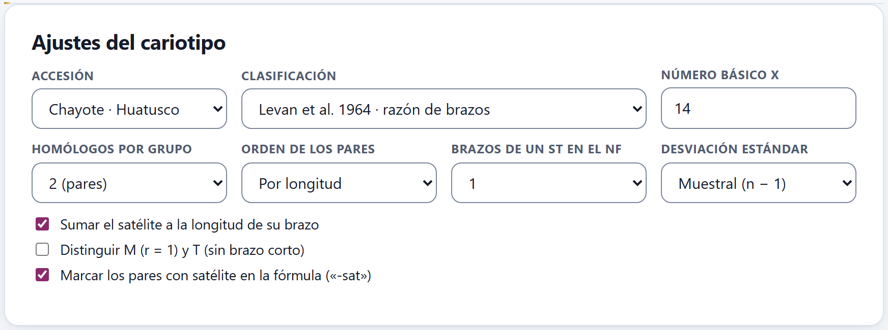
Figura 3.1. Los ajustes por omisión con el chayote de Huatusco: clasificación de Levan et al. (1964) por la razón de brazos, número básico x = 14 (lo trae el ejemplo), pares de homólogos, desviación muestral, el satélite sumado a su brazo y marcado en la fórmula.
La tarjeta tiene siete campos y tres casillas:
Tabla 3.1. Los controles de Ajustes del cariotipo
Control
Qué hace
Accesión
La accesión cuyo cariotipo se muestra. Sólo aparecen las que tienen al menos una célula medida. Cada accesión tiene su propio cariotipo; los demás ajustes valen para todas.
Clasificación
El sistema con que se nombra cada par: Levan et al. 1964 · razón de brazos (la opción por omisión), Levan et al. 1964 · índice centromérico, Guerra 1986 · m, sm, a o Límites propios. Con la última aparecen dos campos más: Límites de r (separados por comas), que empieza en «1.7, 3, 7», y Nombres de las clases, «m, sm, st, t». Tiene que haber un nombre más que límites; si no, un aviso lo recuerda y se usan los últimos límites propios válidos o, si no los hubo, los de Levan por la razón de brazos.
Número básico x
El número cromosómico básico de la accesión. Sólo cambia la fórmula: con x, la fórmula dice el nivel de ploidía (2n = 2x = 28); sin x, lo omite (2n = 28). Se guarda con la accesión y lo comparten los Bloques 5, 6 y 8.
Homólogos por grupo
2 (pares) para un diploide; 3, 4, 6 u 8 para agrupar los homólogos de un autopoliploide en grupos de ese tamaño.
Orden de los pares
Por longitud (de mayor a menor) o Por tipo y longitud: primero los m, luego los sm, etc., y dentro de cada clase de mayor a menor. Sólo cambia el orden del idiograma; la numeración de los pares sigue siendo por longitud.
Brazos de un st en el NF
Cuántos brazos cuenta un subtelocéntrico en el número fundamental: 1 (por omisión) o 2.
Desviación estándar
Muestral (n − 1) o Poblacional (n), para las desviaciones entre células de la tabla. Es el mismo ajuste que la Desviación estándar del Bloque 4: cambiarlo en uno lo cambia en el otro.
Sumar el satélite a la longitud de su brazo
Encendida por omisión: el satélite (lo que queda más allá de la constricción secundaria, que se marca en el Bloque 2) cuenta en la longitud del brazo que lo lleva. Apagada, el satélite queda fuera de las longitudes y de la razón de brazos.
Distinguir M (r = 1) y T (sin brazo corto)
Apagada por omisión. Encendida, un cromosoma con los dos brazos exactamente iguales es M (metacéntrico en sentido estricto) y uno sin brazo corto es T (telocéntrico en sentido estricto), como en la tabla original de Levan et al. Con medidas reales casi nunca ocurre.
Marcar los pares con satélite en la fórmula («-sat»)
Encendida por omisión: los pares con satélite se cuentan aparte en la fórmula (2m-sat). Apagada, se suman a su clase.
✓Regla de decisión · las clases de cromosoma
Levan, por la razónr = q/p
m hasta 1.70; sm de más de 1.70 a 3.00; st de más de 3.00 a 7.00; t por encima de 7.00. El valor justo en el límite va a la clase más mediana: r = 1.70 es m y r = 3.00 es sm.
Levan, por el índice centromérico IC = 100 p/(p + q)
m desde 37.5; sm de 25 a menos de 37.5; st de 12.5 a menos de 25; t por debajo de 12.5. Es el mismo criterio dicho con el IC, y casi siempre da las mismas clases.
Guerra (1986)
m de 1.00 a 1.49; sm de 1.50 a 2.99; a (acrocéntrico) desde 3.00. Aquí el límite va a la clase superior, como Guerra escribe sus intervalos: r = 1.50 es sm.
Un brazo corto nulo
t; o T si está encendida la casilla de M y T.
La clase de un par se decide con la razón de las medias de sus brazos, no con la media de las razones de cada célula.
▸Ejemplo resuelto · Levan o Guerra en el maíz de ejemplo
Con la clasificación de Levan, el maíz de ejemplo da 2n = 2x = 20 = 8m + 10sm + 2sm-sat. El par 5 tiene r = 1.59: es m para Levan (hasta 1.70) y sm para Guerra (desde 1.50). Con Guerra 1986 · m, sm, a la fórmula pasa a 6m + 12sm + 2sm-sat. Con Levan et al. 1964 · índice centromérico no cambia nada. Antes de comparar tu fórmula con una publicada, mira con qué sistema se escribió.
3.2Emparejamiento de homólogos
Antes de promediar, la app decide qué cromosomas de cada célula son homólogos y cuál es el mismo par en todas las células. Esta tarjeta enseña el resultado célula por célula para que lo revises y lo corrijas.
Arriba van las células de la accesión como botones, con su número de cromosomas («Célula 2 · 20»). Una célula cuyos pares corregiste a mano lleva además el signo ✎. Debajo, un recuadro por par: su número, su clase y la longitud media de ese par en esa célula, y sus homólogos con el número que tienen en el Bloque 2. Si el cromosoma se trazó sobre una imagen, se ve recortado y enderezado de la propia imagen; si se midió de otra forma, se dibuja a escala, con sus dos brazos y un punto donde está el satélite. Un par que falta en una célula incompleta dice no está en esta célula.
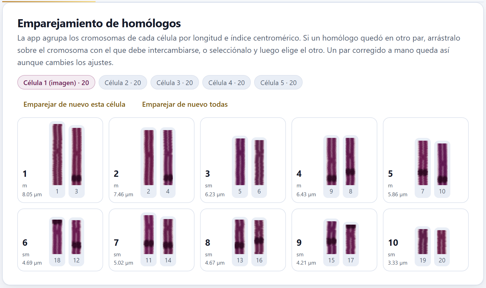
Figura 3.2. La célula 1 del maíz de ejemplo, la que tiene imagen: cada homólogo es un recorte enderezado de la metafase, con sus nudos heterocromáticos. El par 1 de esta célula mide en promedio 8.05 µm. El orden sigue la numeración de la accesión, no la de esta célula: aquí el par 4 (6.43 µm) es más largo que el 3 (6.23 µm).
Cómo empareja la app
Dentro de cada célula, ordena los cromosomas de mayor a menor y los corta en grupos consecutivos del tamaño de Homólogos por grupo. Después prueba intercambios entre grupos mientras baje la diferencia total dentro de los grupos, medida con la longitud (en porcentaje de la longitud media de la célula), el índice centromérico (en puntos) y un castigo cuando un cromosoma con satélite queda junto a uno sin él. Es un óptimo local: casi siempre acierta, pero no es una demostración.
Luego empata las células entre sí. Numerar los pares de cada célula sólo por su longitud mezclaría dos pares casi iguales de longitud pero con el centrómero en sitios distintos, porque una célula un poco más condensada los cambia de orden. Por eso cada célula se asigna a los pares de una referencia (la célula con más pares) con la asignación óptima, el método húngaro, sobre la longitud relativa, el índice centromérico (cinco puntos de IC pesan como un punto de longitud relativa) y el satélite; la referencia se reemplaza por las medias y se repite. Al final los pares se numeran por su longitud relativa media. Así se explica la figura 3.2: el par 3 de la accesión es submetacéntrico, y en la célula 1 resultó más corto que el 4, metacéntrico.
Cómo corregir un emparejamiento
Elige la célula en los botones de arriba.
Arrastra el homólogo mal puesto sobre el cromosoma con el que debe intercambiarse. O, sin arrastrar, haz clic en uno (queda marcado, figura 3.3) y luego en el otro. Un segundo clic sobre el mismo cromosoma lo desmarca.
Si lo sueltas sobre el recuadro de un par y no sobre un cromosoma, el cromosoma se mueve a ese par sin intercambio, y su par de origen queda con uno menos.
Revisa la tabla de la sección 3.3: la longitud y el índice centromérico del par deben quedar más parejos entre células.
Un par corregido a mano se queda así aunque cambies los ajustes, y la célula se marca con ✎. Para deshacer las correcciones están Emparejar de nuevo esta célula y Emparejar de nuevo todas, que devuelven el emparejamiento automático a la célula elegida o a todas las de la accesión.
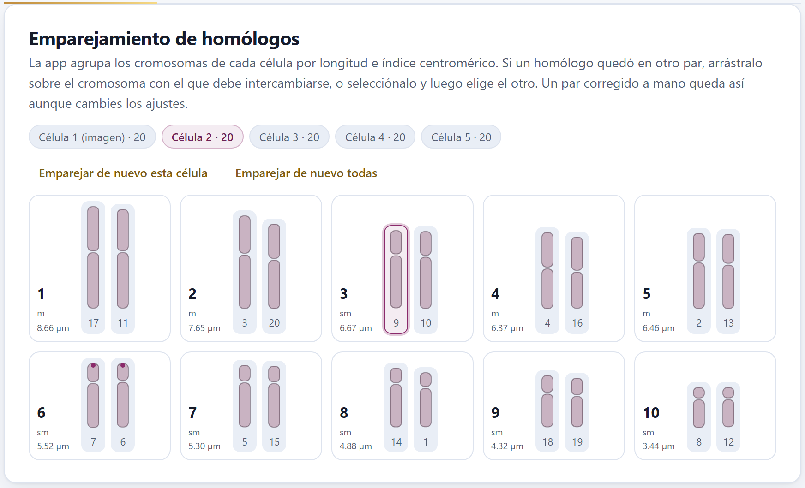
Figura 3.3. La célula 2 del maíz de ejemplo se midió sin imagen, así que sus cromosomas se dibujan a escala. El cromosoma 9 del par 3 está marcado: el siguiente clic en otro cromosoma los intercambia. Los dos homólogos del par 6 llevan el punto del satélite en su brazo corto.
Los avisos de la tarjeta de ajustes
Debajo de las casillas de la sección 3.1 aparecen, cuando hace falta, estos avisos (con los ejemplos no sale ninguno):
Esta accesión mezcla células calibradas (µm) y sin calibrar (píxeles). Las longitudes relativas siguen valiendo, pero las absolutas no: calibra todas en el Bloque 2. Si ninguna célula está calibrada, todo sale en píxeles y la tabla lo dice en sus encabezados.
Las células no tienen el mismo número de cromosomas, con los números que hay. Los pares de las células incompletas se promedian con los que tengan: revisa el emparejamiento.
Un grupo incompleto, cuando el número de cromosomas no es múltiplo de Homólogos por grupo.
Los pares que varían más de 20 % entre células. Puede ser condensación distinta —mira entonces la longitud relativa, que no depende de ella— o un homólogo mal emparejado.
3.3Cariotipo de la accesión
Esta tarjeta reúne el resultado: seis cifras arriba (la sección 3.4 las explica) y la tabla de los pares, con la media ± la desviación estándar entre células de cada medida.
Tabla 3.2. Las columnas de la tabla de pares
Columna
Qué es
Par
El número del par, del más largo al más corto (longitud relativa media).
Células
En cuántas células está ese par.
p, q
El brazo corto y el largo, en µm (o en píxeles si no hay calibración). Si un cromosoma se midió al revés, la app intercambia los brazos: siempre p ≤ q.
Longitud
p + q, con el satélite si está sumado.
LR (%)
Longitud relativa: 100 × longitud del par / longitud de un juego (la suma de un cromosoma de cada par), calculada en cada célula y luego promediada. Al no depender de cuánto se condensó la célula, es la medida que se compara entre células y entre accesiones.
IC
Índice centromérico, 100 p/(p + q): 50 en un metacéntrico perfecto, 0 en un telocéntrico.
r
Razón de brazos q/p de las medias del par (∞ si p = 0). Es la que decide la clase con Levan por la razón y con Guerra.
Clase
m, sm, st, t (o a con Guerra, o tus nombres propios), con «-sat» si el par lleva satélite en al menos la mitad de las células.
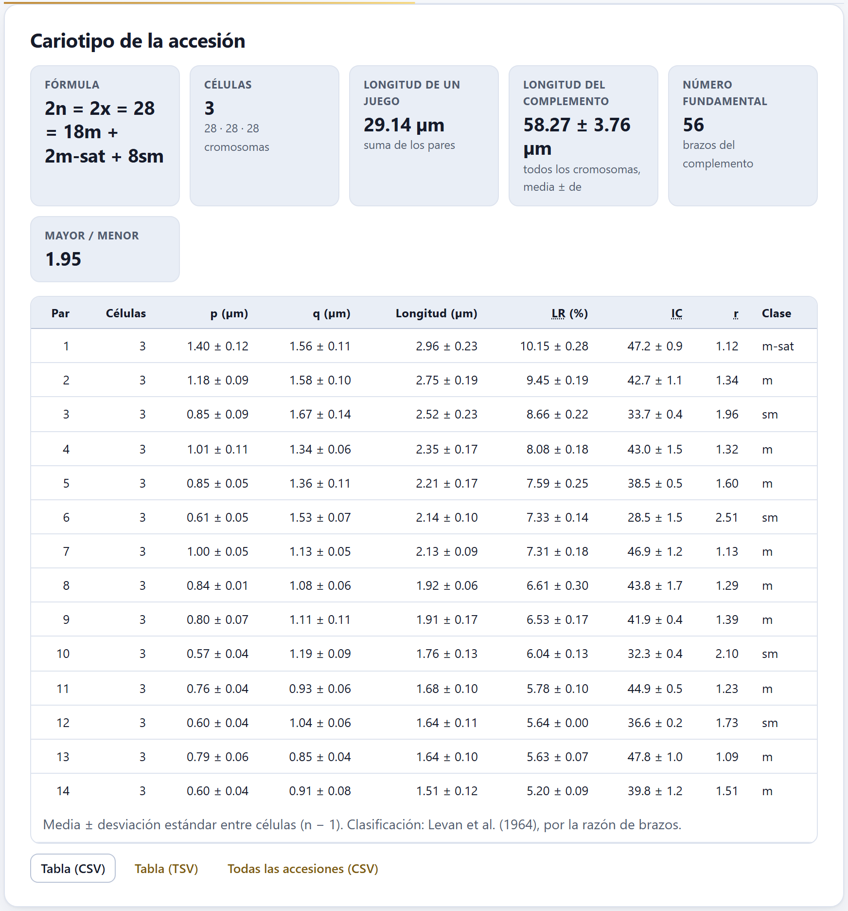
Figura 3.4. El cariotipo del chayote de Huatusco: tres células de 28 cromosomas, 2n = 2x = 28 = 18m + 2m-sat + 8sm. El par 1 lleva el satélite (m-sat); el 12, con r = 1.73, ya pasa el límite de 1.70 y es sm.
El pie de la tabla recuerda qué desviación se usó, (n − 1) o (n), y la clasificación. Tres botones guardan la tabla: Tabla (CSV) y Tabla (TSV) la de la accesión elegida, y Todas las accesiones (CSV) las de todas en un solo archivo. Los archivos llevan cada media y su desviación en columnas separadas, con más decimales que la pantalla, la clase, el satélite y la unidad.
iUna desviación de cero
En el par 12 del chayote de Huatusco la longitud relativa sale 5.64 ± 0.00: en las tres células simuladas ese par ocupa casi exactamente la misma fracción del juego, aunque su longitud absoluta varíe (1.64 ± 0.11 µm). Es lo que se espera cuando las células sólo difieren en condensación.
3.4Fórmula, longitud y número fundamental
Las seis cifras de arriba de la tabla resumen el cariotipo en una línea, que es lo que suele publicarse.
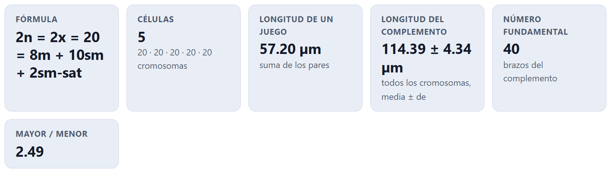
Figura 3.5. Las cifras del maíz de ejemplo: 2n = 2x = 20 = 8m + 10sm + 2sm-sat, cinco células de 20 cromosomas, un juego de 57.20 µm, un complemento de 114.39 ± 4.34 µm, NF = 40 y un par más largo 2.49 veces el más corto.
Fórmula. «2n =», el nivel de ploidía si hay número básico («2x =»), el número de cromosomas y la suma de las clases, cada una con su número de cromosomas (no de pares), en el orden de la clasificación (M, m, sm, st, t, T) y cada clase con satélite justo después de la suya. Si 2n no es múltiplo de x, la fórmula escribe el nivel euploide más cercano y la diferencia, por ejemplo 2n = 2x + 1 = 21. El 2n de la fórmula es la mediana de las células.
Células. Cuántas células entran y cuántos cromosomas tiene cada una.
Longitud de un juego. La suma de las longitudes medias de los pares: un cromosoma de cada par, el juego haploide de un diploide. Es la base de la longitud relativa.
Longitud del complemento. La suma de todos los cromosomas de cada célula, como media ± desviación entre células. En un diploide es más o menos el doble de la anterior; su desviación refleja sobre todo cuánto difieren las células en condensación.
Número fundamental. Los brazos del complemento: dos por cada m o sm, uno por cada st, a o t (dos por cada st si así lo eliges).
Mayor / menor. El cociente entre el par más largo y el más corto. Es la fila de la cuadrícula de Stebbins (capítulo 4).
▸Ejemplo resuelto · el satélite del par 6 del maíz de ejemplo
El par 6 lleva la región organizadora del nucléolo en el brazo corto, con su satélite. Sumado al brazo, como por omisión, el par tiene r = 2.35 y es sm-sat: la fórmula es 8m + 10sm + 2sm-sat y el NF, 40. Si apagas Sumar el satélite a la longitud de su brazo, el brazo corto pierde el satélite, la razón sube por encima de 3 y el par pasa a ser subtelocéntrico, más corto que el par 7: la fórmula queda 8m + 10sm + 2st-sat y el NF baja a 38. Y si apagas Marcar los pares con satélite en la fórmula («-sat»), el par se suma a los sm: 8m + 12sm. Dos laboratorios que miden el mismo cariotipo pueden publicar fórmulas distintas sólo por esta decisión; escríbela en los métodos (el Bloque 10 lo hace).
θTeoría en breve · el número fundamental y los grupos de homólogos
El número fundamental (NF) cuenta los brazos visibles del complemento. Se usa para comparar cariotipos con distinto número de cromosomas: una fusión de dos acrocéntricos en un metacéntrico baja 2n pero conserva el NF. Contar un subtelocéntrico como uno o dos brazos es una convención que cambia de autor en autor; el campo Brazos de un st en el NF la deja a tu elección. En un autopoliploide los homólogos no van de dos en dos sino en grupos del tamaño del nivel de ploidía: pon ese número en Homólogos por grupo y la tabla dará un renglón por grupo. Con un alopoliploide, cuyos genomas se aparean por separado, deja los pares.
3.5Idiograma
El idiograma dibuja el cariotipo de la accesión: los pares en el orden elegido, con el centrómero alineado en una línea discontinua, los brazos cortos arriba y los largos abajo, a la escala de un eje vertical.
Debajo de cada cromosoma van el número del par y su clase; un asterisco junto a la clase señala el par con satélite, que se dibuja unido a su brazo por un trazo fino. Los controles de arriba cambian sólo el dibujo:
Vista: Un cromosoma por par (el idiograma clásico, con las medias) o Los homólogos, que dibuja los homólogos de cada par lado a lado: el más largo de cada célula promediado con los más largos de las demás, y lo mismo con el otro. Como esa figura es más ancha, su leyenda va debajo.
Escala: Micras o Longitud relativa (%), en porcentaje del juego, para comparar accesiones de distinto tamaño.
Color por clase: pinta cada cromosoma con el color de su clase y añade su nombre a la leyenda.
Desviación entre células: una barra fina junto a cada brazo con ± una desviación estándar. Sólo funciona con Un cromosoma por par: con Los homólogos la casilla se desactiva y lo dice entre paréntesis, (sólo con un cromosoma por par).
Bandas y señales (Bloque 7): encendida por omisión, pone sobre el idiograma las bandas y las señales de FISH registradas en el Bloque 7, con su leyenda.
Título: el título de la figura. Vacío, el campo propone el taxón y el nombre de la accesión, pero el dibujo sale sin título.
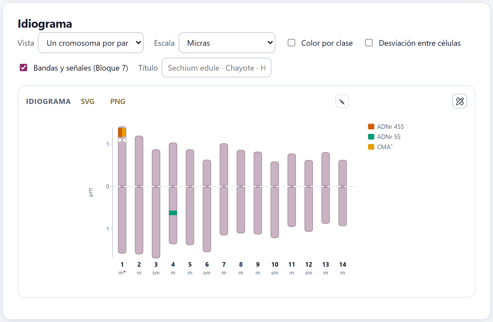
Figura 3.6. El idiograma del chayote de Huatusco con los ajustes por omisión. Las señales vienen del Bloque 7: el ADNr 45S y la banda CMA⁺ en el satélite del par 1 (m*), y el ADNr 5S en el brazo largo del par 4.
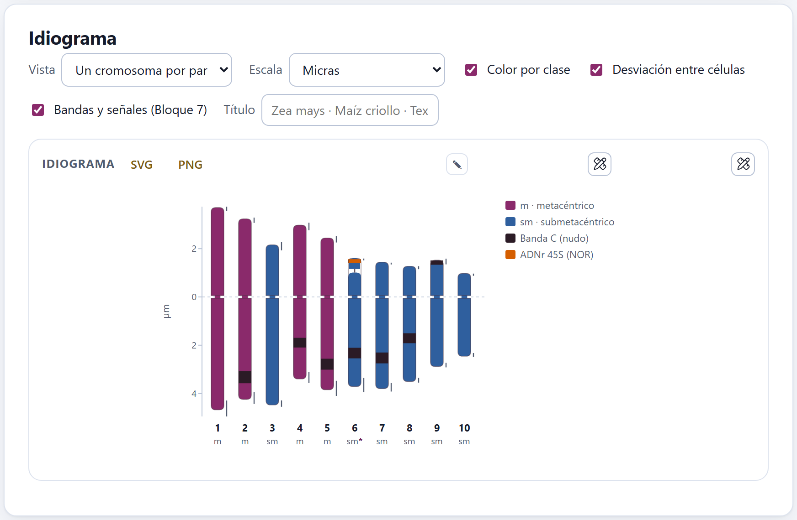
Figura 3.7. El maíz de ejemplo con Color por clase y Desviación entre células: los cuatro pares m en ciruela y los seis sm en azul, cada brazo con su barra de ± una desviación. Las bandas oscuras son los nudos heterocromáticos y la naranja, la NOR del par 6.
La figura se guarda con SVG o PNG, o se abre con el editor ✎ o en el estudio de figuras para cambiar textos, colores y tamaños antes de exportarla (capítulo 10). El Bloque 10 la recoge también en el informe.
✓Regla de decisión · antes de dar por bueno un cariotipo
Si un par varía más de 20 % entre células
entonces compara su longitud relativa: si ella es estable, es condensación; si no, busca un homólogo mal emparejado en el tablero.
Si la r de un par cae cerca de un límite (1.70, 3.00, 7.00)
entonces su clase depende de unas centésimas: mira su desviación entre células y dilo en el texto, como el par 12 del chayote de Huatusco (r = 1.73).
Si comparas con una fórmula publicada
entonces usa la misma clasificación y el mismo trato del satélite, y compara longitudes relativas, no absolutas.
Si la especie es autopoliploide
entonces agrupa los homólogos por el nivel de ploidía; si es alopoliploide, deja los pares.
Guías para interpretar, no leyes: el cariotipo es tan bueno como las medidas de las que sale.
✕Cuando algo sale mal
El bloque dice «Todavía no hay mediciones». Ninguna célula tiene cromosomas con brazos medidos; vuelve al Bloque 2 y marca al menos el centrómero de cada trazo. Las longitudes salen en píxeles. Falta la calibración en el Bloque 2. Un par cambia de número de una célula a otra. Es normal en el tablero: los pares se numeran por la accesión, no por cada célula. Los límites propios no se aplican. Escribe un nombre más que límites. La fórmula no dice el nivel de ploidía. Falta el Número básico x. Corregí un par y al cambiar un ajuste no se movió. Es lo esperado: las correcciones a mano se respetan hasta que pulses uno de los botones de emparejar de nuevo.
4
Capítulo cuatro · Bloque 4
Asimetría y parámetros cariológicos
Un cariotipo simétrico tiene cromosomas parecidos en tamaño y con el centrómero cerca del centro; uno asimétrico, cromosomas de tamaños desiguales o con el centrómero cerca de un extremo. El Bloque 4 mide esas dos asimetrías con doce índices sobre los cariotipos del Bloque 3, ubica cada accesión en la cuadrícula de Stebbins, las compara en una dispersión y con la disimilitud de Gower, y explica qué mide cada índice y cuáles conviene informar.
4.1Cómo se calculan
4.2Índices por accesión
4.3Categorías de Stebbins y dispersión
4.4Disimilitud entre cariotipos
4.5Qué mide cada índice
4.1Cómo se calculan
El bloque calcula los índices de todas las accesiones que tienen un cariotipo en el Bloque 3, sin botón de calcular. Si todavía no hay ninguno, muestra Todavía no hay un cariotipo con Ir al Bloque 2 y Abrir el ejemplo del chayote.
Todas las cifras de este capítulo salen del ejemplo del chayote, con sus cuatro accesiones simuladas: tres cultivadas con 2n = 28 (Huatusco, Chilchotla y Uruapan) y una silvestre con 2n = 24 (Coscomatepec).
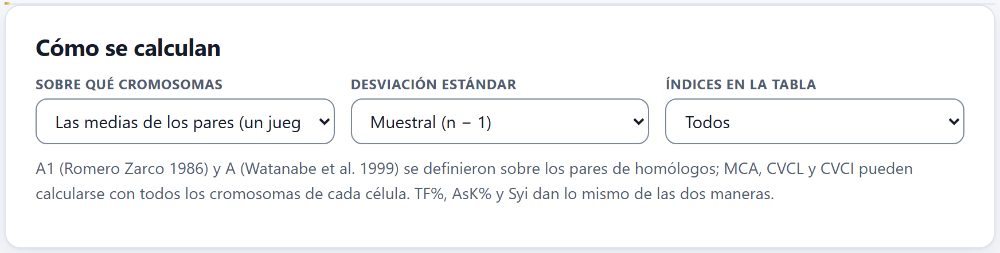
Figura 4.1. Los tres ajustes del bloque, con sus valores por omisión.
Sobre qué cromosomas: Las medias de los pares (un juego), la opción por omisión, calcula cada índice una vez con un cromosoma por par, el promedio de sus homólogos en todas las células; Cada célula con todos sus cromosomas; media ± de lo calcula en cada célula con todos sus cromosomas y da la media ± la desviación entre células.
Desviación estándar: Muestral (n − 1) o Poblacional (n). Cambia los índices que son coeficientes de variación (A2, CVCL, CVCI y los que dependen de ellos: AI y DI) y las desviaciones entre células. Es el mismo ajuste que el del Bloque 3. Las fuentes de los índices no dicen cuál usar; la app usa la muestral por omisión.
Índices en la tabla: Todos o Los recomendados (MCA, CVCL, CVCI). Sólo cambia las columnas que se ven; el archivo CSV lleva siempre todos.
La nota de la tarjeta recuerda que A1 (Romero Zarco 1986) y A (Watanabe et al. 1999) se definieron sobre los pares de homólogos, mientras que MCA, CVCL y CVCI pueden calcularse con todos los cromosomas de cada célula. Añade que TF%, AsK% y Syi cambian muy poco de una manera a otra, pero no son idénticos, porque la media de los cocientes de cada célula no es el cociente de las medias (TF% del chayote de Huatusco: 40.67 sobre los pares, 40.66 ± 0.18 célula por célula), y que en las dos maneras la longitud es la de un juego.
!Pares o células: no mezcles
Los índices de dispersión de longitudes no dan lo mismo de las dos maneras: CVCL del chayote de Huatusco es 21.23 sobre las medias de los pares y 21.04 ± 0.36 célula por célula, y la desviación poblacional lo baja a 20.46. Al comparar con otros trabajos, usa la misma manera y la misma desviación que ellos, y dilo en los métodos.
4.2Índices por accesión
Cuatro cifras de resumen y una tabla con una fila por accesión: su 2n, la longitud de un juego, los doce índices y su categoría de Stebbins.
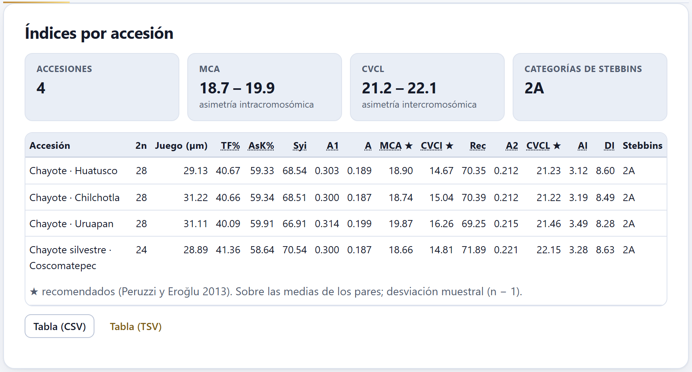
Figura 4.2. Los índices del chayote sobre las medias de los pares. Las cuatro accesiones caen en 2A; MCA va de 18.7 (la silvestre) a 19.9 (Uruapan) y CVCL de 21.2 a 22.1. Los recomendados llevan ★. Los encabezados largos se parten en dos renglones y la tabla cabe sin desplazamiento lateral.
Las cifras de arriba dan el número de accesiones, el intervalo de MCA (asimetría intracromosómica) y el de CVCL (asimetría intercromosómica) entre ellas, y las categorías de Stebbins que aparecen. Al pasar el puntero sobre el nombre de un índice en la tabla, la app muestra su fórmula y su autor. La tabla 4.1 los reúne.
Tabla 4.1. Los doce índices, con s y l el brazo corto y el largo de cada cromosoma, c = s + l su longitud y n el número de cromosomas
Índice
Fórmula
Autor · qué asimetría
TF%
100 · Σs / Σ(s + l)
Huziwara 1962 · intra; baja con la asimetría (50 = todos metacéntricos)
AsK%
100 · Σl / Σ(s + l)
Arano 1963 · intra; es 100 − TF%
Syi
100 · s̄ / l̄
Greilhuber y Speta 1976 · intra; función de TF%
A1
1 − (1/n) Σ (si / li)
Romero Zarco 1986 · intra; 0 si todos son metacéntricos
A
(1/n) Σ (li − si) / (li + si)
Watanabe et al. 1999 · intra; de 0 a 1
MCA ★
100 · A
Peruzzi y Eroğlu 2013 · intra; la recomendada
CVCI ★
100 · de(IC) / media(IC)
Paszko 2006 · heterogeneidad de los centrómeros
Rec
100 · (1/n) Σ (ci / cmáx)
Greilhuber y Speta 1976 · inter; 100 si todos miden lo mismo
▸Ejemplo resuelto · lo que dicen los índices del chayote
Las cuatro accesiones tienen cariotipos muy simétricos y casi iguales: TF% cerca de 40, MCA entre 18.66 y 19.87, CVCL entre 21.22 y 22.15. Uruapan tiene la MCA más alta (19.87) y el CVCI más alto (16.26): sus centrómeros están, en promedio, un poco más lejos del centro y son más variados, porque en el ejemplo una o dos de sus razones de brazos cambiaron. La silvestre, con dos pares más largos por fusión, tiene el CVCL más alto (22.15). Su Rec es también el más alto (71.89), lo que parece contradecir lo anterior: Rec sólo compara cada cromosoma con el más largo, CVCL mira toda la dispersión. Por eso se informa CVCL.
Célula por célula
Con Cada célula con todos sus cromosomas; media ± de, cada celda lleva la media y, en un segundo renglón, ± la desviación entre células. La categoría de Stebbins es entonces la más frecuente entre las células, y un aviso dice qué accesiones caen en categorías distintas según la célula.
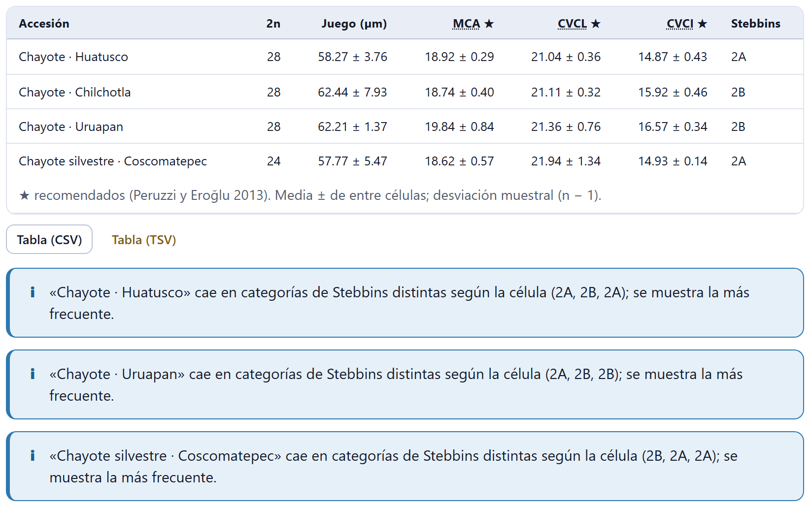
Figura 4.3. Los índices recomendados célula por célula. Chilchotla y Uruapan pasan a 2B, y tres accesiones tienen células en 2A y en 2B. La columna «Juego (µm)» da la longitud de un juego en cada célula, como media ± desviación: 29.14 ± 1.88 µm en Huatusco.
Las categorías cambian porque cada célula tiene todos sus cromosomas, y el más largo y el más corto de una célula concreta pueden pasar del doble aunque las medias de los pares no lleguen (1.95 en Huatusco). Hay otro aviso posible debajo de la tabla: cuando todos los cromosomas de una accesión son telocéntricos, CVCI no está definido (0/0) y sale «—».
Tabla (CSV) y Tabla (TSV) guardan una fila por accesión con su taxón, 2n, la longitud de un juego, los doce índices con seis decimales, sus desviaciones (si se calcularon célula por célula), la categoría de Stebbins y la manera de cálculo.
4.3Categorías de Stebbins y dispersión
Dos figuras ponen las accesiones lado a lado: la cuadrícula de Stebbins (1971), clásica, y la dispersión de dos índices, por omisión MCA × CVCL.
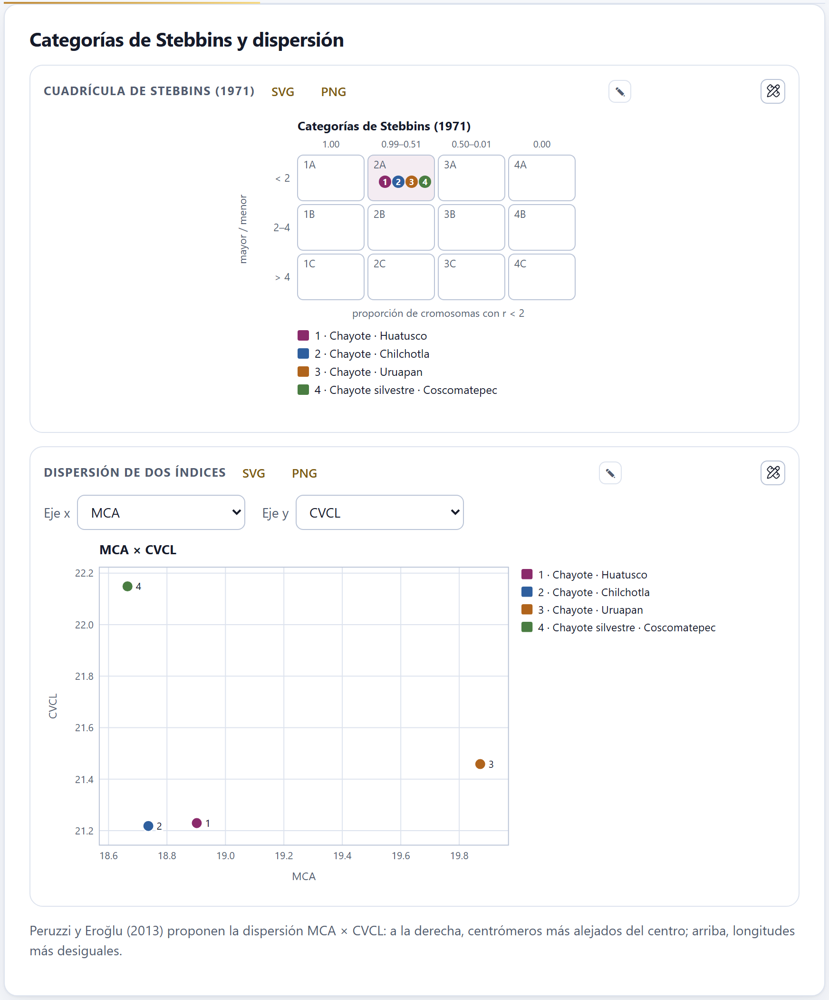
Figura 4.4. Arriba, las cuatro accesiones en la casilla 2A. Abajo, la dispersión MCA × CVCL separa lo que la cuadrícula junta: la silvestre (4) arriba a la izquierda, con las longitudes más desiguales, Uruapan (3) a la derecha, con los centrómeros más alejados del centro.
La cuadrícula tiene doce casillas. La fila (A, B, C) la da el cociente entre el cromosoma más largo y el más corto: menos de 2, de 2 a 4, más de 4. La columna (1 a 4) la da la proporción de cromosomas con razón de brazos menor que 2: todos (1.00), de 0.99 a 0.51, de 0.50 a 0.01, ninguno (0.00). Cada accesión es un círculo numerado del color de la accesión, con su nombre en la leyenda. Los cariotipos más simétricos quedan arriba a la izquierda (1A) y los más asimétricos abajo a la derecha (4C).
▸Ejemplo resuelto · por qué Huatusco es 2A
De sus 14 pares, sólo el 6 (r = 2.51) y el 10 (r = 2.10) tienen una razón de 2 o más: 12 de 14, una proporción de 0.86, que cae en la columna 2. El par más largo mide 1.95 veces el más corto, menos de 2: fila A. El par 3, con r = 1.96, está muy cerca del corte; si pasara de 2, Huatusco seguiría en la columna 2 con 11 de 14.
En la dispersión, Eje x y Eje y ofrecen los doce índices, la longitud de un juego y 2n; los puntos llevan el número de la accesión. Peruzzi y Eroğlu (2013) proponen MCA × CVCL porque sus dos ejes miden cosas distintas: a la derecha, centrómeros más alejados del centro; arriba, longitudes más desiguales. Las dos figuras se exportan con SVG y PNG, o se editan con ✎ y en el estudio de figuras.
✓Regla de decisión · la cuadrícula de Stebbins
Fila por el cociente mayor / menor
A si es menor que 2; B de 2 a 4, con los dos extremos; C si pasa de 4.
Columna por la proporción con r < 2
1 si es 1.00; 2 de 0.99 a 0.51; 3 de 0.50 a 0.01; 4 si es 0.00. Un cromosoma con r = 2 exacto no cuenta como «menor que 2».
La cuadrícula reduce el cariotipo a doce casillas: sirve para un vistazo, no para separar accesiones parecidas.
4.4Disimilitud entre cariotipos
La disimilitud de Gower (1971) resume en un número qué tan distintos son dos cariotipos según los índices que elijas: 0 si son iguales, 1 si son lo más distintos posible dentro de las accesiones del proyecto.
Para cada par de accesiones, la app toma la diferencia en cada índice, la divide entre el intervalo de ese índice en todas las accesiones y promedia. Los índices se eligen con los botones: los doce y la Longitud de un juego; por omisión, MCA, CVCI y CVCL. Siempre queda al menos uno elegido. Hacen falta al menos dos accesiones. Es la medida con que Peruzzi y Altınordu (2014) comparan cariotipos; el Bloque 8 la usa con más parámetros y con ella agrupa los taxones.
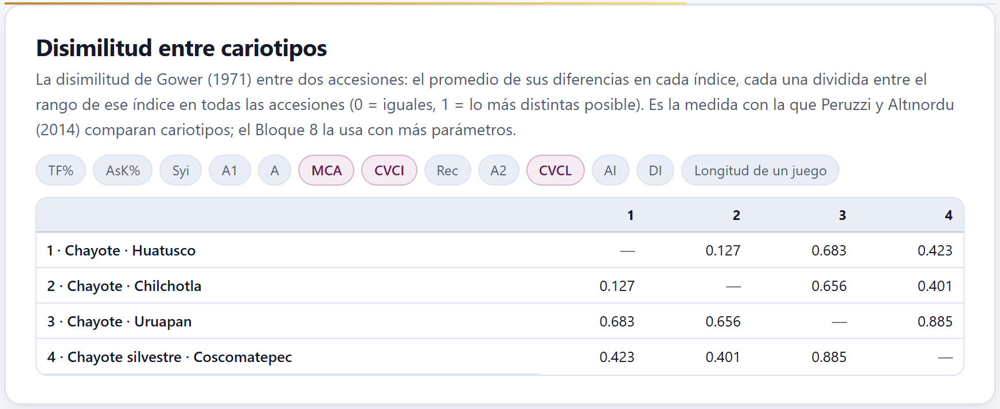
Figura 4.5. Con MCA, CVCI y CVCL, Huatusco y Chilchotla son casi iguales (0.127) y Uruapan y la silvestre las más distintas (0.885).
θTeoría en breve · Gower con pocas accesiones
Como cada diferencia se divide entre el intervalo de ese índice en el proyecto, la disimilitud es relativa: las dos accesiones más alejadas en un índice aportan 1 en ese índice aunque la diferencia sea pequeña en términos absolutos. En el chayote, MCA sólo va de 18.66 a 19.87, y aun así Uruapan y la silvestre suman 0.885. Úsala para ordenar las accesiones del proyecto entre sí, no para decir si dos cariotipos son «muy» distintos; añadir o quitar una accesión cambia todos los valores.
4.5Qué mide cada índice
La última tarjeta explica los doce índices, uno por renglón desplegable, con su fórmula, su autor y lo que mide.
Cada renglón lleva a la derecha su etiqueta: intracromosómica, intercromosómica o las dos, y además ★ si es de los recomendados, redundante si no añade nada a otro (AsK% y Syi, que se deducen de TF%) o histórico si hoy se desaconseja (AI y DI). El primero, TF%, viene abierto.
θTeoría en breve · dos asimetrías, tres números
La asimetría intracromosómica dice dónde está el centrómero; la intercromosómica, cuánto varían las longitudes. Muchos índices miden lo mismo con otra escala: AsK% es 100 − TF%, Syi es función de TF%, CVCL es 100 · A2 y MCA es 100 · A. CVCI no mide asimetría sino heterogeneidad: un cariotipo con todos los cromosomas submetacéntricos es asimétrico pero tiene un CVCI bajo (Zuo y Yuan 2011). AI sigue casi sólo a CVCI y DI usa medianas; los dos se conservan para comparar con trabajos antiguos (Peruzzi et al. 2009). Hoy se recomienda describir un cariotipo con MCA y CVCL, más CVCI (Peruzzi y Eroğlu 2013).
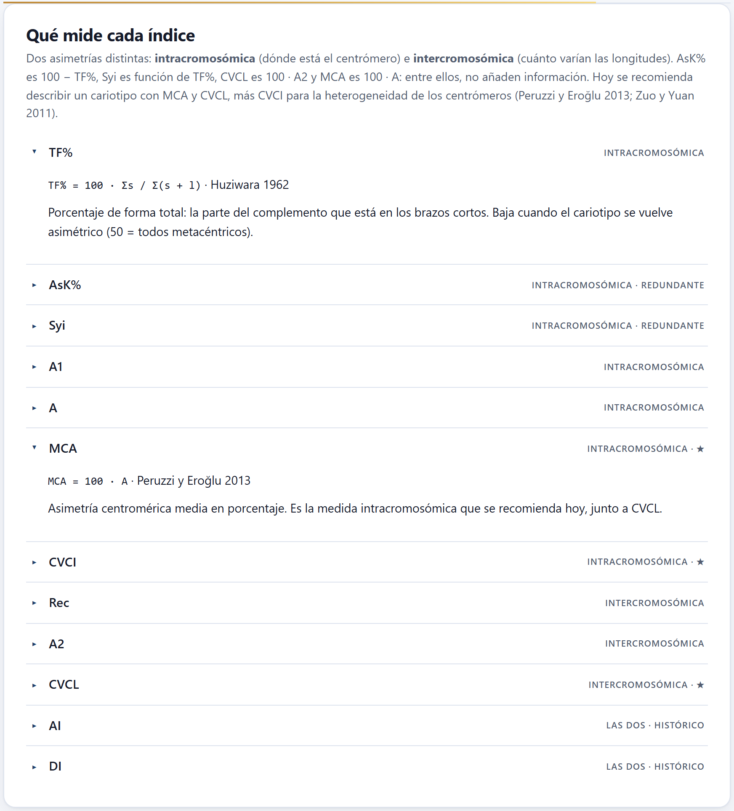
Figura 4.6. La explicación de los índices, con TF% y MCA desplegados.
✓Regla de decisión · qué informar
Para describir la asimetría
MCA (dónde está el centrómero) y CVCL (cuánto varían las longitudes); añade CVCI si los centrómeros son muy distintos entre cromosomas.
Para comparar con trabajos antiguos
TF%, AsK%, Syi, A1, A2, AI o DI, los que usó el otro trabajo, calculados de la misma manera.
Para ubicar el cariotipo en la literatura
La categoría de Stebbins, junto con MCA y CVCL.
Para comparar accesiones
La dispersión MCA × CVCL y la disimilitud de Gower; para más parámetros y agrupamientos, el Bloque 8.
Escribe siempre si los índices se calcularon sobre las medias de los pares o célula por célula, y con qué desviación.
✕Cuando algo sale mal
El bloque dice «Todavía no hay un cariotipo». No hay células medidas: vuelve al Bloque 2 o abre un ejemplo. CVCI sale «—». Todos los cromosomas de esa accesión son telocéntricos y el índice no está definido. La disimilitud dice que faltan accesiones. Hacen falta al menos dos con cariotipo. Cambié la desviación aquí y cambió la tabla del Bloque 3. Es el mismo ajuste en los dos bloques. Los índices no coinciden con un trabajo publicado. Revisa si ellos sumaron el satélite al brazo (Bloque 3), si usaron pares o células y qué desviación.
5
Capítulo cinco · Bloque 5
Meiosis
La meiosis dice cómo se aparean los cromosomas y qué tan regular es la formación de los gametos. El Bloque 5 recoge lo que cuentas al microscopio —las configuraciones en diacinesis o metafase I, las anormalidades de cada fase, las tétradas y el polen teñido— y lo convierte en quiasmas por célula, índice de recombinación, una prueba de autopoliploidía frente a alopoliploidía, el índice meiótico de Love y la viabilidad del polen con sus intervalos de confianza.
5.1La accesión y sus tablas
5.2Configuraciones en diacinesis o metafase I
5.3¿Autopoliploide o alopoliploide?
5.4Anormalidades por fase
5.5Tétradas e índice meiótico
5.6Viabilidad del polen
5.1La accesión y sus tablas
A diferencia de los Bloques 3 y 4, este bloque no usa las imágenes ni las medidas: sus datos son conteos que escribes, pegas o importas en cuatro tablas, y cada tabla guarda los de la accesión elegida.
Figura 5.1. La tarjeta Accesión con la población tetraploide de la serie poliploide de ejemplo, de número básico x = 7.
En la tarjeta Accesión eliges la accesión, creas otra con + Accesión o abres el ejemplo con Abrir la serie poliploide de ejemplo: una especie inventada con tres poblaciones, diploide, tetraploide y hexaploide, de x = 7, con dos plantas y 25 células por planta, sus fases, tétradas y polen, todo simulado con el modelo de la app. Número básico x es el mismo número de los Bloques 3 y 6; aquí hace falta para plantear las hipótesis de la sección 5.3. Este capítulo usa sobre todo la población tetraploide.
Cómo se llenan las tablas
Las cuatro tablas del bloque funcionan igual. Cada renglón es una célula (o una planta, según la tabla) y cada casilla se escribe a mano; los números se redondean a enteros. Debajo de cada tabla están + Fila, que añade un renglón (copiando la planta del anterior en la de configuraciones), Exportar (CSV), Importar CSV y Vaciar, que borra todos los renglones de la accesión tras confirmarlo. La × al final de un renglón lo borra.
Pegar. Si copias un bloque de una hoja de cálculo (columnas separadas por tabuladores) y lo pegas en una casilla, se llena desde esa casilla hacia la derecha y hacia abajo, añadiendo los renglones que falten. Un aviso dice cuántas filas se pegaron.
Importar. El CSV debe tener encabezados. Cada encabezado se compara, sin acentos ni mayúsculas, con el nombre de la columna en español o en inglés y con algunos sinónimos («quiasmas», «individuo»…); las columnas que no reconoce se ignoran. Es el mismo formato que escribe Exportar (CSV).
5.2Configuraciones en diacinesis o metafase I
Una fila por célula, con cuántas configuraciones de cada tipo viste: univalentes, bivalentes en varilla y en anillo, trivalentes, cuadrivalentes en cadena y en anillo, pentavalentes y hexavalentes en cadena y en anillo.
Figura 5.2. Las primeras células de la planta 1 del tetraploide. La primera tiene 1 I, 1 II en varilla, 3 II en anillo, 1 III y 4 IV en cadena: 28 cromosomas y 21 quiasmas estimados. A este ancho de ventana las tres últimas columnas (Quiasmas contados, Cromosomas y Quiasmas) quedan a la derecha: la tabla se recorre de lado.
Las columnas son Planta, Célula, una por configuración (I, II varilla, II anillo, III, IV cadena, IV anillo, V, VI cadena, VI anillo) y Quiasmas contados. Las dos últimas, que no se editan, las calcula la app: Cromosomas suma los cromosomas de todas las configuraciones (un II tiene dos, un IV cuatro) y Quiasmas los estima: una cadena de k cromosomas tiene k − 1 quiasmas y un anillo k; así, varilla 1, anillo 2, III 2, IV en cadena 3, IV en anillo 4. Es el mínimo compatible con la configuración. Si contaste los quiasmas, escríbelos en Quiasmas contados y mandan sobre la estimación.
Figura 5.3. El resumen del tetraploide: 50 células de 28 cromosomas, 21.78 ± 2.34 quiasmas por célula, 1.55 por bivalente, índice de recombinación 35.78 y multivalentes en todas las células. La gráfica da la media ± desviación de cada configuración por planta.
Debajo de la tabla, seis cifras resumen la accesión:
Células y Cromosomas por célula, el número más frecuente; si no todas suman lo mismo, la cifra dice no en todas y un aviso pide revisar las filas.
Quiasmas por célula, media ± desviación, con la nota estimados de las configuraciones o contados.
Quiasmas por bivalente: los quiasmas de los bivalentes entre el número de bivalentes. Cerca de 2 si casi todos son anillos, cerca de 1 si casi todos son varillas.
Índice de recombinación: el número haploide más los quiasmas medios por célula (n + quiasmas), el número de unidades que se recombinan de manera independiente.
Células con multivalentes: el porcentaje de células con al menos un III, IV, V o VI.
La tabla de resumen repite esas cuentas por planta y para toda la accesión: las configuraciones medias por célula (V y VI juntos en ≥ V), los quiasmas por célula y por bivalente, el índice de recombinación y el porcentaje de células con multivalentes. La gráfica Configuraciones por célula pone una serie por planta, con barras de error de una desviación.
▸Ejemplo resuelto · el diploide y el tetraploide de ejemplo
En el diploide (2n = 14) no hay multivalentes: 5.42 bivalentes en anillo y 1.52 en varilla por célula, 12.36 ± 1.10 quiasmas por célula, 1.78 por bivalente, índice de recombinación 7 + 12.36 = 19.36. En el tetraploide (2n = 28) todas las células tienen multivalentes, 2.24 IV en cadena y 1.58 en anillo por célula, y los quiasmas por bivalente bajan a 1.55: hay más varillas. Su índice de recombinación es 14 + 21.78 = 35.78.
5.3¿Autopoliploide o alopoliploide?
Un autopoliploide tiene varios juegos del mismo genoma, que pueden aparearse de a tres o de a cuatro; un alopoliploide junta genomas distintos que se aparean cada uno consigo mismo, en bivalentes. El bloque compara las configuraciones observadas con las esperadas bajo cada hipótesis.
Cada hipótesis se escribe como una fórmula genómica, una letra por juego: AAAA es un autotetraploide, AABB un alotetraploide, AAAABB un segmental intermedio. Con el número básico y las células ya escritas, la app propone sola la Hipótesis 1, la autopoliploide (AAAA en el tetraploide), y la Hipótesis 2, la alopoliploide de pares (AABB); la Hipótesis 3 (opcional) queda para la que quieras probar. Puedes escribir hasta ocho genomas; la fórmula, multiplicada por x, tiene que dar el 2n de las células, o un aviso lo dice. Quiasma por brazo, c puede ser Estimada de los datos o Fija, y entonces aparece Valor de c (0.8 por omisión).
Figura 5.4. El tetraploide de ejemplo: con c = 0.778, AAAA da χ² = 4.82 con 4 g. l. y p = 0.307; AABB no permite los 221 multivalentes observados (30 III, 112 IV en cadena y 79 en anillo) y queda rechazada. El aviso verde lo resume: los datos se ajustan a AAAA.
La tabla da, para cada configuración, las observadas en todas las células y las esperadas bajo cada hipótesis, y al pie c, χ², los grados de libertad y el valor p. La gráfica Observado y esperado por célula lo dibuja por célula. Debajo, un aviso dice la conclusión:
si se ajusta una sola hipótesis (p ≥ 0.05): «Los datos se ajustan a…» y a cuáles no;
si se ajusta más de una: hacen falta más células para decidir;
si no se ajusta ninguna: cuál es la mejor y la sugerencia de probar una fórmula intermedia, con las de ese nivel que aún no probaste (en un hexaploide, AAAABB o AAABBB), porque rechazar la autopoliploidía puede indicar control genético del apareamiento o algún tipo de alopoliploidía (Jackson y Casey 1982);
y, aparte, cada hipótesis que no permite alguna configuración observada —un multivalente donde sólo caben bivalentes— queda rechazada sin más, aunque su χ² en las demás clases sea pequeño.
θTeoría en breve · el modelo de lo esperado
Cada cromosoma tiene dos brazos. En el extremo de cada brazo, los homólogos de un grupo se aparean de dos en dos al azar (con un número impar, uno queda libre), de manera independiente en los dos extremos, y cada brazo apareado forma un quiasma con probabilidad c. Una configuración es un conjunto de cromosomas unidos por quiasmas: cadena si está abierta, anillo si está cerrada. Con cuatro homólogos, los dos extremos eligen la misma pareja con probabilidad 1/3, así que el apareamiento en cuadrivalente ocurre con probabilidad 2/3 (Sybenga 1975); las frecuencias siguen el mismo conteo que los modelos de Jackson y Casey (1982). La app las calcula exactamente, enumerando todos los apareamientos y todos los patrones de quiasmas, sin simular. Estimada, c es los quiasmas medios entre los brazos apareables: en el tetraploide, 21.78 / (7 × 4) = 0.778.
✓Regla de decisión · la prueba χ²
Clases
I, II varilla, II anillo, III, IV cadena, IV anillo y ≥ V. Las que tienen menos de 5 esperadas se juntan con su vecina más pequeña antes de la prueba.
Grados de libertad
Las clases que quedan menos 1, y menos 1 más si c se estimó de los datos.
Sip ≥ 0.05
entonces la hipótesis se ajusta a los datos (no quiere decir que sea cierta).
Si la hipótesis no permite una configuración observada
entonces queda rechazada, sea cual sea su χ².
Con c fija en 0.80, AAAA sigue ajustándose en el tetraploide, pero menos holgadamente (χ² = 9.31, 5 g. l., p = 0.097).
▸Ejemplo resuelto · el hexaploide de ejemplo no se ajusta a nada
En el hexaploide la app propone AAAAAA y AABBCC, con c = 0.850. La autohexaploidía queda muy lejos (χ² = 2777.05, 5 g. l., p < 0.001): espera 158.1 configuraciones de cinco o seis cromosomas y no se vio ninguna. AABBCC explica bien los univalentes y los bivalentes (χ² = 2.39 con 1 g. l.), pero no permite los 22 multivalentes observados (1 III, 3 IV en cadena y 18 en anillo) y queda rechazada. Si escribes AAAABB como tercera hipótesis, tampoco se ajusta (χ² = 447.33, 4 g. l.), y el aviso sugiere entonces sólo la que falta, AAABBB. La lectura es la de un alohexaploide con apareamientos ocasionales fuera de su propio genoma, que es justo como se simuló: un 16 % de sus células salieron del modelo AAAABB.
Figura 5.5. El hexaploide con tres hipótesis. AABBCC queda rechazada por sus 22 multivalentes y ninguna se ajusta; la «mejor», AAAABB, también tiene p < 0.001.
5.4Anormalidades por fase
Una fila por planta y fase, con cuántas células normales viste y cuántas con cada anormalidad.
Las columnas son Planta, Fase (de Metafase I a Telofase II), Normales y siete anormalidades: Puentes, Fragmentos, Rezagados, Migración precoz, Husos múltiples o anormales, Micronúcleos y Otras. Cuenta cada célula anormal una sola vez, en su anormalidad principal: la app suma las anormales y las normales para obtener el total de células de la fase.
Figura 5.6. El tetraploide de ejemplo: entre 10.2 y 12.7 % de células anormales en casi todas las fases y 21.0 % en anafase II (162 células, 19 con rezagados, 8 con puentes y 7 con fragmentos). A este ancho de ventana, las columnas Micronúcleos y Otras de la tabla de captura quedan a la derecha.
El resumen junta las plantas por fase: células, normales, cada anormalidad y el % anormales. La gráfica Células anormales por fase (%) lo dibuja con las fases abreviadas (MI, AI…). Como referencia, en el diploide de ejemplo ninguna fase pasa de 3.7 %.
5.5Tétradas e índice meiótico
El índice meiótico de Love (1951) es el porcentaje de tétradas normales; Love consideraba citológicamente estable una planta con 90 o más.
Una fila por planta, con Tétradas normales, Con micronúcleos, Díadas, Tríadas y Políadas. La tabla de resultados da por planta las tétradas contadas, las normales, el Índice meiótico (%), su Intervalo 95 % (Wilson) y si es Estable (≥ 90); con más de una planta, añade la fila de la accesión y, al pie, la prueba χ² de homogeneidad entre plantas.
Figura 5.7. El tetraploide: índice meiótico de 84.3 y 86.3 % en sus dos plantas y de 85.3 % (82.3 a 87.9) en la accesión, por debajo de 90; las plantas no difieren entre sí (χ² = 0.48, 1 g. l., p = 0.489).
iEl intervalo importa
Decide con el intervalo, no sólo con la cifra. En el tetraploide, hasta el extremo superior (87.9) queda por debajo de 90: la inestabilidad es clara. En el hexaploide de ejemplo, la planta 1 tiene 93.0 % pero su intervalo baja hasta 89.5; el diploide, con 96.8 % en la accesión, es estable sin duda.
5.6Viabilidad del polen
Una fila por planta con los granos viables (teñidos) y los inviables; la app da la viabilidad con dos intervalos de confianza y prueba si las plantas difieren.
Arriba, Tinción registra cómo se tiñó el polen: Tinción diferencial de Alexander (por omisión), Carmín acético, Cloruro de tetrazolio (TTC) u Otra. No cambia las cuentas; la usan los métodos del Bloque 10. Confianza elige 95 %, 99 % o 90 % para los intervalos de esta tarjeta.
Figura 5.8. El polen del tetraploide: 1245 granos en tres plantas, 76.4 % viables (73.9 a 78.7 % con 95 % de confianza), sin diferencias entre plantas (p = 0.196). El aviso de abajo compara las tres poblaciones: difieren (χ² = 161.84, 2 g. l., p < 0.001).
La tabla de la planta tiene la columna calculada % viables. Debajo, tres cifras: Granos contados con el número de plantas, Viabilidad de todos los granos juntos con su intervalo de Wilson, y Homogeneidad entre plantas, con el valor p y los estadísticos χ² y G de la tabla de plantas × viables/inviables. La tabla de resultados da cada planta con sus granos, viables, porcentaje y los intervalos de Wilson y de Clopper–Pearson, y la gráfica, cada planta con su intervalo de Wilson. Si las plantas difieren (p < 0.05), un aviso aconseja informarlas por separado; si hay polen en más de una accesión, otro aviso compara las accesiones con χ².
Dos botones más enlazan con PalynoPro, la app de palinología de la suite: Leer el CSV de fertilidad de PalynoPro lee su archivo de fertilidad (las columnas landrace_code, n_granos_completos y pct_atipico) y convierte el porcentaje de granos de forma atípica en inviables; un aviso recuerda que ese porcentaje viene de la forma del grano en microscopía electrónica, no de una tinción, y es sólo una aproximación. CSV con columnas de PalynoPro escribe los datos de esta tabla en ese mismo formato, en el archivo polen_<accesión>_palynopro.csv.
θTeoría en breve · Wilson y Clopper–Pearson
El intervalo de Wilson (1927) es el que se recomienda para una proporción: tiene una cobertura cercana a la nominal incluso con proporciones altas como las del polen. El de Clopper–Pearson (1934) es exacto, con cobertura de al menos la nominal, y por eso un poco más ancho: en la planta 1 del tetraploide, 70.5 a 78.7 % contra 70.4 a 78.9 %. Con 99 % de confianza, la viabilidad del tetraploide va de 73.2 a 79.3 %. La homogeneidad se prueba con χ² y con G (razón de verosimilitudes); con conteos grandes dan casi lo mismo (3.25 y 3.31).
✓Regla de decisión · leer la meiosis de una accesión
Si hay multivalentes en muchas células
entonces prueba la autopoliploidía; si ninguna fórmula se ajusta, prueba una intermedia.
Si el índice meiótico es menor que 90
entonces la planta es citológicamente inestable para Love (1951); míralo con su intervalo.
Si las plantas difieren (homogeneidad p < 0.05)
entonces informa cada planta por separado, no la accesión junta.
Si la viabilidad del polen baja junto con el índice meiótico
entonces las anormalidades meióticas son una explicación probable, como en el tetraploide de ejemplo (85.3 % de tétradas normales, 76.4 % de polen viable).
Los datos del ejemplo son simulados: las cifras sirven para aprender a leer la app, no para describir una especie.
✕Cuando algo sale mal
La tarjeta de hipótesis pide el número básico. Escríbelo en Número básico x. Un aviso dice que la fórmula no da el 2n de las células. La fórmula tiene una letra por juego: con x = 7 y 2n = 28 hacen falta cuatro letras. La cifra de cromosomas dice «no en todas». Alguna fila no suma el 2n: revisa la columna Cromosomas. Importé un CSV y no entró nada. El archivo necesita encabezados que la app reconozca; exporta una tabla para ver el formato. Cambié de accesión y las hipótesis se borraron. Es lo esperado: se vuelven a proponer con el número básico de la nueva accesión.
6
Capítulo seis · Bloque 6
Ploidía y tamaño de genoma
Cuántos cromosomas tiene la planta y cuántos juegos son: los conteos célula por célula con su moda, el nivel de ploidía a partir del número básico, la serie euploide y los indicios de disploidía; el tamaño del genoma por citometría de flujo, leído de la tabla de corridas o del histograma del citómetro; la conversión entre picogramos y pares de bases, y la prueba de Allium, que mide con la mitosis si una sustancia es citotóxica.
6.1Conteos cromosómicos
6.2Número básico, series euploides y disploidía
6.3Citometría de flujo: tamaño del genoma
6.4Histograma del citómetro
6.5Conversión de unidades
6.6Mitosis y citotoxicidad: la prueba de Allium
El bloque se abre con la tarjeta Accesión, que decide de qué accesión hablan los conteos y la citometría. En ella están el selector Accesión, el botón + Accesión, el campo Número básico x de la accesión elegida y dos botones que abren los ejemplos del bloque: Ejemplo: serie poliploide y Ejemplo: prueba de Allium. Abrir un ejemplo reemplaza el proyecto, y la app lo pregunta antes. Al entrar, el bloque elige la primera accesión que ya tenga conteos o corridas de citometría.
Figura 6.1. La tarjeta Accesión con la serie poliploide de ejemplo abierta y la población tetraploide elegida. Su número básico, x = 7, es el que usan los conteos y la citometría de esa accesión.
En este capítulo se usan los dos ejemplos del bloque. La serie poliploide es una especie inventada («Especie ficticia A») con tres poblaciones, diploide, tetraploide y hexaploide, de número básico x = 7: trae quince conteos por población, nueve corridas de citometría y el histograma de un tetraploide. La prueba de Allium trae un testigo y dos concentraciones de un extracto ficticio. Los dos son simulados.
6.1Conteos cromosómicos
El número cromosómico de una planta no se lee en una sola célula: se cuenta en varias metafases y se toma la moda. Las células con otro número casi siempre son preparaciones imperfectas —un cromosoma que se salió de la célula al aplastar, dos que quedaron encimados—, no plantas distintas.
La tarjeta Conteos cromosómicos tiene una tabla con una fila por célula contada y dos columnas: Célula y 2n contado. Como todas las tablas de captura de la app, debajo lleva + Fila, Exportar (CSV), Importar CSV y Vaciar; al importar, la columna del número puede llamarse 2n o n2. La tabla muestra sólo las filas de la accesión elegida. Si contaste con marcas sobre la imagen en el Bloque 2, el botón Llevar el conteo a la ploidía (Bloque 6) de aquel bloque escribe aquí la fila de esa célula.
Debajo de la tabla, cuatro cifras resumen los conteos:
Células contadas, las filas con un número entero positivo.
Número modal, el 2n más frecuente, con la proporción de células que lo tienen. Si esa proporción es menor de 60 %, la cifra se marca como dudosa.
Intervalo, del menor al mayor número contado.
Nivel de ploidía, la fórmula 2n = kx = 2n con su nombre (diploide, tetraploide…), si la accesión tiene número básico; si no, dice «falta x».
La figura Frecuencia de los números contados dibuja cuántas células tuvieron cada número, del menor al mayor, y se descarga en SVG o PNG o se abre en el estudio de figuras. La tabla Todas las accesiones reúne, para cada accesión con conteos, su x, el número de células, la moda, el % modal, la fórmula y el nivel.
Figura 6.2. La población tetraploide de ejemplo: de quince células, once tienen 2n = 28 (73 %), dos tienen 27 y dos tienen 29. Con x = 7, el nivel es 2n = 4x = 28. Abajo, las tres poblaciones: la diploide da 2n = 14 en las quince células, y la hexaploide 2n = 42 en once (tres con 41 y una con 43).
Dos avisos acompañan a los conteos. Si hay más de una moda, la cifra muestra las dos («28 / 30») y la app pide contar más células antes de decidir. Si la moda no es múltiplo de x, la fórmula sale con el sobrante (por ejemplo, 2n = 2x + 1 = 15, con el nombre «trisómico (2n + 1)» cuando el nivel es 2x) y un aviso recuerda las tres explicaciones posibles: aneuploidía, cromosomas B o un número básico distinto.
θTeoría en breve · cómo se calcula el nivel
El nivel es el múltiplo de x más cercano a la moda: k = redondeo(2n / x), y el sobrante es 2n − kx. Si el sobrante es cero, la planta es euploide (2x, 3x, 4x…); si no, es aneuploide y la fórmula lo escribe, 2n = 4x − 1, por ejemplo. Los nombres especiales de la aneuploidía (monosómico, trisómico, nulisómico, tetrasómico) se ponen cuando el nivel es 2x y sobran o faltan uno o dos cromosomas.
▸Ejemplo resuelto · el maíz de ejemplo
El ejemplo del maíz trae doce conteos. Once dan 2n = 20 y uno 19, un cromosoma perdido al aplastar: la moda es 2n = 20 con 92 % de las células, el intervalo 19 – 20 y, con x = 10, el nivel 2n = 2x = 20, diploide. La célula con 19 no cambia la conclusión.
6.2Número básico, series euploides y disploidía
El número básico x es el número de cromosomas de un juego monoploide. Sin él no hay nivel de ploidía, ni 1Cx en la citometría: por eso cada accesión lleva el suyo.
Lo puedes escribir en Número básico x de la tarjeta Accesión o tomarlo de la tarjeta Número básico, series euploides y disploidía, que trae una tabla editable con 55 géneros de uso frecuente (Familia, Género y x). Son valores comunes, no la última palabra: la propia tarjeta pide verificarlos en las bases de conteos cromosómicos para tu grupo (Rice et al. 2015). Buscar género o familia filtra la tabla, que puedes editar, alargar con + Fila o devolver a su estado con Volver a la tabla original.
Debajo, Poner en la accesión el x de ofrece todos los géneros de la tabla; si el taxón de la accesión empieza con uno de ellos, ya viene elegido. Poner escribe ese x en la accesión y recalcula los conteos y la citometría.
Figura 6.3. La tabla filtrada por «Rosaceae» y la serie euploide de la población tetraploide (x = 7), de 2x = 14 a 8x = 56, con su nivel, 4x = 28, resaltado. La especie ficticia no está en la tabla, así que el selector propone el primer género de la lista.
La serie euploide lista los niveles de 2x a 8x con su 2n y su nombre, y resalta el de la accesión. Sirve para ver de un vistazo qué números serían esperables en otras poblaciones del mismo taxón.
La disploidía es el cambio del número básico de uno en uno, por fusión o fisión de cromosomas. La app la busca entre las accesiones: si dos o más accesiones de un mismo género (la primera palabra del taxón) tienen números básicos distintos, aparece un aviso con esos valores, y si los pasos son de un cromosoma lo añade.
Figura 6.4. Con el ejemplo del chayote, el género Sechium reúne accesiones con x = 14 (las cultivadas) y x = 12 (la silvestre de Coscomatepec): la app sugiere una serie disploide y remite al Bloque 8, que la reconstruye sobre un árbol (sección 8.5).
!Importante
El aviso sólo compara números; no sabe si x = 12 viene de x = 14 o al revés. En el ejemplo, la accesión silvestre tiene 2n = 24 porque dos pares de la base se fusionaron (disploidía descendente), pero eso lo dicen los datos simulados, no el aviso. La dirección del cambio se infiere con un árbol, en el Bloque 8.
6.3Citometría de flujo: tamaño del genoma
En la citometría de flujo los núcleos teñidos con un fluorocromo que se une al ADN pasan uno a uno frente a un láser; la fluorescencia de cada uno es proporcional a su contenido de ADN. Junto con la muestra se procesa un patrón interno de contenido conocido, y el tamaño del genoma sale de comparar los dos picos.
2C (pg) = (pico G0/G1 de la muestra ÷ pico G0/G1 del patrón) × 2C del patrón
A partir del 2C, la app calcula el 1C (2C ÷ 2, el contenido del núcleo no replicado de un gameto) y el 1Cx (2C ÷ nivel de ploidía, el contenido de un solo juego monoploide), con los términos de Greilhuber et al. (2005), y los pasa a millones de pares de bases con 1 pg = 978 Mpb (Doležel et al. 2003). El procedimiento de laboratorio está en Doležel et al. (2007).
La tabla de la tarjeta Citometría de flujo: tamaño del genoma lleva una fila por corrida de la accesión elegida:
Tabla 6.1. Las columnas de la tabla de citometría
Columna
Qué lleva
Muestra
El nombre de la corrida (una planta, una repetición).
Patrón interno
Ocho patrones de ADN vegetal con su 2C, de Raphanus sativus «Saxa» (1.11 pg) a Allium cepa «Alice» (34.89 pg), o Otro (escribe su 2C).
2C del patrón (pg)
Vacía, usa el 2C del patrón elegido; con un número, ese número manda (y es obligatorio con Otro).
Pico del patrón · Pico de la muestra
La posición (canal o intensidad media) del pico G0/G1 de cada uno.
CV patrón (%) · CV muestra (%)
El coeficiente de variación de cada pico, que mide su calidad.
Razón · 2C (pg) · 2C (Mpb)
Calculadas por la app; la tabla se desplaza a lo ancho para verlas.
Debajo, una tabla resume las corridas por accesión: Corridas, el 2C medio con su desviación estándar en pg y en Mpb, el 1C, el Nivel y el 1Cx en pg y en Mpb. El nivel sale de la moda de los conteos con el x de la accesión; si la accesión no tiene conteos pero sí una fórmula genómica del Bloque 5 (AA, AAAA, AABBCC…), el nivel es el número de letras.
Figura 6.5. La serie poliploide con patrón de tomate (2C = 1.96 pg). La primera corrida diploide tiene el patrón en 191.87 y la muestra en 160.29: razón 0.835, 2C = 1.637 pg. El resumen da 1.620 ± 0.016, 3.176 ± 0.046 y 4.728 ± 0.050 pg para 2x, 4x y 6x, y un 1Cx que baja de 0.810 a 0.794 y 0.788 pg.
La última parte es la ploidía relativa. Elige en Accesión de referencia para la ploidía relativa una accesión de nivel conocido; la tabla divide el 2C de cada una entre el de la referencia y multiplica por el nivel de ésta (el de sus conteos, o 2x si no tiene), y pone al lado el Nivel por conteo para compararlos. Es la manera de estimar el nivel de plantas que no se han contado, sólo medido. Hace falta al menos dos accesiones con corridas.
▸Ejemplo resuelto · la reducción del genoma
Con la población diploide como referencia, la tetraploide tiene 1.961 veces su 2C y la hexaploide 2.919 veces: niveles estimados de 3.92x y 5.84x, frente a 4x y 6x por conteo. El cociente queda algo por debajo del entero, y por eso el 1Cx baja con el nivel (792, 777 y 771 Mpb). La nota de la tabla lo explica: un poliploide reciente suele tener algo menos del doble, porque pierde ADN después de duplicarse. Una diferencia así no cambia el nivel; una de media unidad (3.5x) sí pediría contar.
La app revisa cada corrida y avisa en tres casos: si algún pico tiene un CV mayor de 5 % (núcleos dañados o restos: hay que repetir la preparación); si la razón está entre 0.85 y 1.18, cuando la muestra y el patrón casi coinciden y sus picos se enciman (hay que elegir un patrón más distinto), y si la muestra y el patrón difieren más de tres veces en su contenido de ADN (razón mayor de 3 o menor de 1/3): tan lejos, la respuesta del citómetro puede dejar de ser lineal, y conviene un patrón de tamaño más cercano al de la muestra (Doležel et al. 2007). Ninguna corrida del ejemplo dispara estos avisos.
6.4Histograma del citómetro
En lugar de escribir los picos a mano puedes abrir el histograma que exporta el citómetro: la app encuentra los picos, pone una compuerta en cada uno, mide su media y su CV, y con dos clics lleva la corrida a la tabla de la sección anterior.
Abrir un CSV del citómetro acepta dos formas de archivo (.csv, .tsv o .txt): dos columnas, canal y número de núcleos, que es el histograma ya hecho; o una columna con la intensidad de cada evento, que la app reparte en 512 canales. La primera fila puede ser de títulos. El histograma queda guardado en el proyecto con el nombre del archivo y asociado a la accesión elegida; si abres varios, el selector Histograma cambia entre ellos. Escala logarítmica dibuja el número de núcleos en escala logarítmica, útil para ver los picos pequeños.
Cómo encuentra los picos
La app suaviza el histograma con una media móvil de cinco canales, ignora el 4 % más bajo de la escala (donde se amontonan los restos) y busca máximos locales que cumplan tres condiciones: llegar al menos al 4 % del pico más alto, sobresalir lo suficiente de los valles que los separan de terreno más alto (para no confundir con un pico el ruido de la pendiente de restos) y quedar a no menos del 6 % de la escala de otro pico más alto. Cada compuerta va de la mitad de la distancia a su vecino a la mitad de la distancia al siguiente, sin pasar de ±15 % de la posición del pico.
La tabla de compuertas da, para cada una, Desde y Hasta (que puedes corregir escribiendo), los Núcleos que caen dentro, la Media y el CV (%), ponderados por el número de núcleos de cada canal. El botón × borra una; + Compuerta agrega otra entre el 40 y el 50 % de la escala, para que la muevas a donde haga falta, y Buscar los picos de nuevo descarta las compuertas y las vuelve a calcular.
Debajo se eligen Pico G0/G1 de la muestra, Pico G0/G1 del patrón y Patrón. Por omisión, el patrón es la primera compuerta (la de menor fluorescencia), la muestra la segunda y el patrón interno el tomate. La línea de abajo da la razón y el 2C al momento; Agregar a la citometría escribe una fila nueva en la tabla de la sección 6.3, con los dos picos y sus CV, en la accesión del histograma.
1234567
Figura 6.6. El histograma de ejemplo, de 1024 canales y 9010 núcleos: un tetraploide con patrón de tomate. Los restos celulares ocupan los canales bajos; P1 es el pico G0/G1 del patrón y P2 el de la muestra.
1Histograma. Cuál de los histogramas del proyecto se ve.
2Abrir. Lee un CSV del citómetro; junto, Escala logarítmica.
3La figura. Las compuertas sombreadas y una línea punteada en la media de cada una.
4Compuertas. Sus límites, editables, con núcleos, media y CV.
5Picos. Cuál compuerta es la muestra, cuál el patrón y qué patrón es.
6Agregar a la citometría. Escribe la corrida en la tabla de la sección 6.3.
7Resultado. La razón y el 2C, en pg y en Mpb.
▸Ejemplo resuelto · el tetraploide de ejemplo
La app encuentra dos picos. P1, de 170 a 230, tiene 2485 núcleos con media 199.92 y CV 2.93 %; P2, de 275.4 a 372.6, tiene 3614 núcleos con media 324.52 y CV 3.15 %. La razón es 1.6233 y, con el tomate, 2C = 3.182 pg (3112 Mpb), muy cerca del 3.176 pg del resumen de las corridas. Los picos G2 (el doble de cada G0/G1, hacia los canales 400 y 650) se ven apenas: no llegan al 4 % del pico más alto y no reciben compuerta, que es lo que se quiere.
iNota
En el ejemplo, la compuerta del patrón da un CV de 2.93 %, algo mayor que el de su pico solo, porque su borde izquierdo recoge la cola de los restos. Si en tus datos pasa lo mismo, angosta la compuerta a mano: el CV que conviene informar es el del pico, no el de los restos que lo acompañan.
6.5Conversión de unidades
El tamaño del genoma se publica en picogramos (pg) o en pares de bases; la tarjeta Conversión de unidades pasa un valor de una unidad a las otras tres.
Escribe el número en Valor y elige su Unidad: pg, Mpb, Gpb o pb. Las cuatro cifras de abajo se actualizan al escribir, con la equivalencia 1 pg = 978 Mpb (Doležel et al. 2003). Por omisión, 1 pg son 978 Mpb, 0.978 Gpb y 978,000,000 pb.
Figura 6.7. La conversión con su valor por omisión, 1 pg.
6.6Mitosis y citotoxicidad: la prueba de Allium
La prueba de Allium mide si una sustancia daña la división celular: se ponen a enraizar bulbos de cebolla en el agua del testigo y en la sustancia, y en las puntas de raíz se cuentan las células que se dividen y las que lo hacen mal (Fiskesjö 1985; Leme y Marin-Morales 2009). Esta tarjeta no depende de la accesión elegida: tiene su propia tabla, por tratamiento.
La tabla de la tarjeta Mitosis y citotoxicidad (prueba de Allium) lleva una fila por bulbo o raíz, con Tratamiento y Repetición, las células en Interfase, Profase, Metafase, Anafase y Telofase, las seis aberraciones (c-metafase, adherencias, puentes, rezagados, fragmentos y husos multipolares, contadas dentro de las células que se dividen), los Micronúcleos en interfase y, al final, el IM (%) de cada fila.
Figura 6.8. La tabla del ejemplo: tres tratamientos con tres bulbos cada uno y 1000 células por bulbo. El primer bulbo del testigo tiene 892 células en interfase y 45, 27, 11 y 25 en profase, metafase, anafase y telofase. La tabla sigue a la derecha con las demás aberraciones, los micronúcleos y el índice mitótico.
θTeoría en breve · los índices
Índice mitótico (IM) = células en división ÷ células observadas × 100: si baja, la sustancia frena la división (citotoxicidad). Índice de fases = células en cada fase ÷ células en división × 100. Índice de aberraciones = células aberrantes ÷ células en división × 100: si sube, la sustancia daña el huso o los cromosomas (genotoxicidad). Micronúcleos, por cada mil células en interfase (‰): restos de cromosomas o fragmentos que quedaron fuera del núcleo.
El selector Testigo dice con qué tratamiento se compara; la app propone el que se llame «testigo», «control» o «agua». La primera tabla de resultados da, por tratamiento, las repeticiones, las células, el índice mitótico, el porcentaje de cada fase, las aberraciones (%) y los micronúcleos (‰). Los índices se calculan con los conteos sumados de las repeticiones y, entre paréntesis, la media ± desviación estándar de las repeticiones; el testigo lleva ★.
Figura 6.9. El índice mitótico baja de 9.07 % en el testigo a 6.70 y 4.03 % con el extracto al 1 y al 5 %, y las aberraciones suben de 1.10 a 5.47 y 14.05 %. Todas las diferencias con el testigo son significativas después de la corrección de Holm.
La segunda tabla compara cada tratamiento con el testigo en los tres índices: la Diferencia (puntos %), el estadístico z y su p de una prueba de dos proporciones con los conteos sumados, y la p (Holm), corregida por el número de comparaciones de cada índice (Holm 1979), en negritas si es menor de 0.05. Su pie añade una prueba χ² de homogeneidad del índice mitótico entre todos los tratamientos.
Figura 6.10. La figura Índices mitótico y de aberraciones, con la media ± desviación estándar de las repeticiones, y el aviso que la acompaña: el extracto al 5 % baja el índice mitótico a menos de la mitad del testigo.
▸Ejemplo resuelto · el extracto al 1 %
Contra el testigo, el índice mitótico baja 2.37 puntos (z = −3.40, p < 0.001), las aberraciones suben 4.37 puntos (z = 2.77, p = 0.006) y los micronúcleos 0.21 puntos, de 0.00 a 2.14‰ (z = 2.42, p = 0.016). Con dos tratamientos por índice, Holm deja esas p iguales porque son las mayores de su índice. Entre los tres tratamientos, el índice mitótico da χ² = 61.72 con 2 grados de libertad, p < 0.001. Es una sustancia citotóxica y genotóxica, más a mayor concentración; sólo la del 5 % pasa del umbral de la mitad del testigo (4.03 frente a 9.07 %).
iLos conteos sumados
Las pruebas suman las células de las repeticiones, como si fueran una sola muestra grande. Es lo habitual en la prueba de Allium, pero ignora la variación entre bulbos. Por eso la tabla muestra también la media ± desviación estándar de las repeticiones: si un tratamiento tiene un bulbo muy distinto de los otros, se nota ahí antes que en la p.
Reglas de lectura del bloque
✓Regla de decisión
Si el número modal tiene menos de 60 % de las células
entonces cuenta más células antes de dar el número: la cifra se marca como dudosa.
Si hay dos modas
entonces no hay número todavía: cuenta más células.
Si la moda no es múltiplo de x
entonces piensa en aneuploidía, cromosomas B o un x distinto (disploidía); revisa también el x.
Si un pico tiene CV > 5 %
entonces repite la preparación; un pico confiable tiene CV menor de 3–5 %.
Si la razón muestra/patrón está entre 0.85 y 1.18
entonces cambia de patrón: los picos se enciman.
Si la razón es mayor de 3 o menor de 1/3
entonces elige un patrón más cercano: la respuesta del citómetro puede dejar de ser lineal.
Si el nivel estimado por citometría difiere del conteo en menos de media unidad
entonces es la reducción del genoma de los poliploides; si difiere más, cuenta cromosomas.
Si un tratamiento baja el índice mitótico a menos de la mitad del testigo
entonces es una señal fuerte de citotoxicidad, y la app lo avisa.
Guías para interpretar, no leyes.
✕Cuando algo sale mal
El nivel dice «falta x». La accesión no tiene número básico: escríbelo en la tarjeta Accesión o usa Poner.
La tabla de citometría no calcula el 2C. Falta uno de los dos picos, o elegiste Otro (escribe su 2C) sin escribir el 2C del patrón.
No aparece la ploidía relativa. Hace falta que al menos dos accesiones tengan corridas.
«No se encontraron números en el archivo». El CSV no tiene columnas numéricas; revisa el separador o quita las líneas de encabezado largas que exportan algunos equipos.
La app encuentra un pico de más o de menos. Corrige las compuertas a mano, bórralas con × o agrega una con + Compuerta; Buscar los picos de nuevo vuelve al cálculo automático.
La prueba de Allium compara contra el tratamiento equivocado. Elige el correcto en Testigo.
7
Capítulo siete · Bloque 7
Bandeo y FISH
Dos cariotipos con la misma fórmula pueden ser distintos: las bandas de heterocromatina, los fluorocromos y las sondas de ADN marcan sitios que la morfología no ve. Este bloque registra cada señal por su par, su brazo y su posición, la dibuja sobre el idiograma del Bloque 3, arma el mapa físico de un cromosoma y resume el patrón de cada accesión, su concordancia entre células y los sitios de cada sonda en todas las accesiones.
7.1Accesión, sondas y bandas
7.2Señales
7.3Mapa físico de un cromosoma
7.4Patrón de la accesión
7.5Concordancia entre células y todas las accesiones
El capítulo usa dos ejemplos, los dos simulados. El del chayote (Sechium edule) tiene cuatro accesiones con ADNr 45S y CMA⁺ en el satélite del par 1, ADNr 5S en el brazo largo del par 4, un sitio de 45S de más en un solo homólogo del par 9 en Uruapan, y la señal 5S registrada además célula por célula. El del maíz trae los nudos heterocromáticos y la región organizadora del nucléolo (NOR) como bandas.
7.1Accesión, sondas y bandas
Una señal sólo tiene sentido sobre un cariotipo: por eso el bloque trabaja con la numeración de pares del Bloque 3, y una accesión sin cariotipo no puede dibujar su idiograma (aunque sí guardar sus señales).
La tarjeta Accesión y sondas tiene el selector Accesión y dos botones que abren los ejemplos: Abrir el ejemplo del chayote (ADNr) y Abrir el ejemplo del maíz (nudos). Al entrar, el bloque elige la primera accesión que tenga señales. Su texto resume la convención de la app: cada señal se registra por su par, su brazo y su posición relativa, la fracción del brazo desde el centrómero (0) hasta el telómero (1).
Debajo, la tabla Sondas y bandas define qué se puede marcar en todo el proyecto, con cuatro columnas:
Nombre, el que aparece en las tablas, en la leyenda y en el mapa físico.
Tipo: Banda C, Banda N, Fluorocromo (CMA, DAPI), FISH (sonda de ADN), GISH (genoma) u Otra.
Color, entre Heterocromatina (oscura) y ocho colores que se distinguen con daltonismo (bermellón, verde azulado, azul, naranja, púrpura rojizo, celeste, amarillo y gris).
Dibujo: Banda, una franja a lo ancho del cromosoma, o Puntos en las cromátidas, un punto en cada cromátida, como se ven las señales de FISH.
Un proyecto nuevo empieza con seis: Banda C, CMA⁺, DAPI⁺, ADNr 45S, ADNr 5S y Telómero (este último dibujado como puntos). Puedes renombrarlas, borrarlas o agregar las tuyas con + Fila; una sonda nueva se llama «Sonda nueva», es de tipo FISH y sale en celeste.
Figura 7.1. El ejemplo del chayote define tres: ADNr 45S (bermellón) y ADNr 5S (verde azulado), de FISH, y CMA⁺ (naranja), un fluorocromo. Las tres se dibujan como bandas.
θTeoría en breve · qué marca cada técnica
La banda C tiñe la heterocromatina constitutiva; los fluorocromos la distinguen por su composición: la cromomicina A₃ (CMA⁺) brilla en la rica en GC, como la de muchas NOR, y el DAPI (DAPI⁺) en la rica en AT (Guerra 2000). La FISH localiza una secuencia concreta con una sonda marcada: los genes ribosomales 45S y 5S son las sondas más usadas en plantas porque dan pocos sitios, grandes y fáciles de comparar (Jiang y Gill 2006; Schwarzacher y Heslop-Harrison 2000). La GISH usa todo el genoma de un progenitor como sonda para reconocer sus cromosomas en un híbrido.
7.2Señales
Las señales se escriben en una tabla o se ponen con un clic sobre el idiograma. Las dos vías llenan la misma tabla.
La tabla de señales muestra las de la accesión elegida, con estas columnas:
Tabla 7.1. Las columnas de la tabla de señales
Columna
Qué lleva
Par
El número del par en el cariotipo del Bloque 3.
Homólogo
los dos, o 1 a 4 si la señal está en un solo homólogo (un heteromorfismo).
Brazo
p (corto) o q (largo).
Posición (0–1)
El centro de la señal como fracción del brazo, del centrómero (0) al telómero (1).
Tamaño (0–1)
Su extensión, también como fracción del brazo (0.08 si no se dice).
Sonda
Una de la tabla Sondas y bandas.
Célula (opcional)
Vacía, la señal es del patrón de la accesión; con el nombre de una célula, es una observación de esa célula.
Región
La calcula la app: proximal, intersticial o terminal.
✓Regla de decisión · la región de una señal
Si posición < 1/3 del brazo
entonces proximal, cerca del centrómero.
Si 1/3 ≤ posición ≤ 0.8
entonces intersticial.
Si posición > 0.8
entonces terminal, cerca del telómero.
Una señal justo en 0.8 cuenta como intersticial, como el 45S del par 9 de Uruapan.
12345
Figura 7.2. La accesión de Uruapan en la vista Los homólogos: el sitio de ADNr 45S del par 9 está en un solo homólogo, el 1. Las tres últimas filas son la señal 5S registrada en tres células (uru-c1 a uru-c3).
1Sonda del clic. Qué sonda agrega un clic en el idiograma.
2Homólogo del clic. En los dos homólogos o en uno.
3Vista. Un cromosoma por par o los homólogos.
4Idiograma. El del Bloque 3, con las bandas y señales encima.
5Tabla de señales. Una fila por señal, editable.
Un clic sobre el idiograma
Elige la sonda en Al hacer clic en el idiograma, agregar y, en en, si va en los dos homólogos, el homólogo 1 o el homólogo 2. Un clic sobre un cromosoma del idiograma agrega una fila: el brazo es el del lado del centrómero donde hiciste clic y la posición la distancia al centrómero como fracción de ese brazo, redondeada a centésimas. Un aviso confirma el par, el brazo y la posición. En la vista Los homólogos el clic cae sobre un homólogo concreto y la señal queda en ése, sin importar lo que diga en. Después puedes afinar la posición o el tamaño en la tabla.
El selector Vista del idiograma cambia entre Un cromosoma por par, con las medias de los pares, y Los homólogos, cada homólogo con sus propias medidas. La figura Idiograma con bandas y señales se descarga en SVG o PNG y se edita como las demás. Si la accesión no tiene cariotipo, la tarjeta lo dice: el idiograma necesita las mediciones del Bloque 2.
Figura 7.3. El maíz de ejemplo, un cromosoma por par: siete nudos (banda C) en los brazos largos de los pares 2, 4, 5, 6, 7 y 8 y cerca del telómero del brazo corto del par 9, y el ADNr 45S en el satélite del par 6, la NOR.
7.3Mapa físico de un cromosoma
El mapa físico dibuja un solo par en grande, con una regla en micras desde el centrómero y cada señal rotulada: su sonda, su brazo, su posición en porcentaje del brazo, su distancia al centrómero en micras y, si es un heteromorfismo, el homólogo.
Elige el par en Par; cada opción dice su número, su clase y, si lo tiene, «-sat». El título del dibujo repite el par, la clase y la longitud total. Es la figura que se pone en un artículo cuando un cromosoma tiene varias señales juntas, porque los rótulos se apartan unos de otros para no encimarse.
Figura 7.4. El par 1 de Huatusco (m-sat, 2.96 µm): ADNr 45S y CMA⁺ en el satélite, al 90 % del brazo corto, a 1.26 µm del centrómero.
Figura 7.5. El par 9 de Uruapan (m, 1.96 µm): el sitio de ADNr 45S al 80 % del brazo largo, a 0.91 µm, en el homólogo 1.
iPosición relativa y micras
La posición relativa no cambia con la condensación: el 45S del par 1 está al 90 % del brazo corto en las tres accesiones cultivadas aunque el brazo mida distinto en cada una. Por eso es la que se compara. Las micras dependen del brazo medido y sirven para ubicar la señal en la figura de esa accesión.
7.4Patrón de la accesión
El patrón de una accesión son sus señales sin célula. Si una combinación de par, sonda, brazo y homólogo sólo se registró célula por célula, la app la completa con la posición media de esas células; así el idiograma y las tablas no se quedan sin la señal.
La tabla Patrón de la accesión, en la tarjeta del mismo nombre, tiene una fila por sonda con al menos un sitio:
Sonda o banda, con su color, y su Tipo.
Sitios por juego, cuántos sitios hay en un juego cromosómico; un sitio en un solo homólogo cuenta medio.
Pares, en orden, y Dónde: cada sitio como par, brazo y posición en porcentaje, con el homólogo entre paréntesis si es un heteromorfismo («9q(1) 80 %»).
Regiones, cuántos sitios son proximales, intersticiales o terminales, con la misma cuenta de medios sitios.
En un solo homólogo, cuántos son heteromorfismos.
Figura 7.6. La tarjeta Patrón de la accesión con Uruapan: 1.5 sitios de ADNr 45S por juego, uno terminal en 1p 90 % y medio intersticial en 9q(1) 80 %, que está en un solo homólogo («0.5 intersticial, 1 terminal»), uno de ADNr 5S (4q 45 %) y uno de CMA⁺ (1p 90 %). Abajo, la concordancia de la señal 5S y los sitios de las cuatro accesiones.
iEl medio sitio
Un sitio en un solo homólogo está en uno de los dos juegos, y por eso cuenta medio en los sitios por juego y en las regiones. El pie de la tabla lo recuerda, y la cuenta es la misma en la tabla Todas las accesiones (sección 7.5) y en la matriz del Bloque 8: el 45S de Uruapan vale 1.5 en las tres. «(1)» en Dónde dice en qué homólogo está, y la columna En un solo homólogo cuántos sitios son heteromorfismos.
▸Ejemplo resuelto · la accesión silvestre
En Coscomatepec, el ADNr 45S tiene dos sitios terminales, en los pares 2 y 3 (2p 85 % y 3p 90 %), y el CMA⁺ uno en el par 3. El par que lleva el satélite con 45S y CMA⁺ es aquí el 3 y no el 1: la fusión de dos pares de la base dejó dos cromosomas más largos que pasan al principio del cariotipo, y la numeración del Bloque 3 va por longitud. Al comparar accesiones, conviene comparar los sitios por su marca y su posición, no por el número del par.
7.5Concordancia entre células y todas las accesiones
Una señal que aparece en todas las células es un rasgo de la accesión; una que aparece en una sola puede ser un artefacto de la hibridación. La tabla Concordancia entre células mide eso con las señales que tienen una célula anotada.
Agrupa esas señales por par, sonda y brazo y da, para cada grupo, las Células con la señal sobre el total de células con alguna señal registrada, la Concordancia en porcentaje y la Posición (media ± de) entre células. Si la accesión no tiene señales célula por célula, la tabla lo dice. En el ejemplo, la señal 5S del par 4 está en las tres células de cada accesión (100 %), con posición 0.47 ± 0.03 en Huatusco, 0.42 ± 0.03 en Chilchotla, 0.46 ± 0.03 en Uruapan y 0.47 ± 0.03 en la silvestre.
La tabla Todas las accesiones cruza las accesiones con señales y las sondas usadas: cada celda es el número de sitios por juego cromosómico, con un sitio en un solo homólogo contado como medio, como dice su pie. En el chayote, el ADNr 45S da 1 en Huatusco y Chilchotla, 1.5 en Uruapan y 2 en la silvestre; el 5S y el CMA⁺ dan 1 en las cuatro. Estas cifras pasan a la matriz del Bloque 8 como variables «Sitios …» (sección 8.1).
✓Regla de decisión · leer el patrón
Si la concordancia de una señal es baja
entonces revisa las preparaciones antes de darla como rasgo de la accesión.
Si la desviación de la posición entre células es grande
entonces la señal se midió en cromosomas con distinta condensación o se confundieron pares.
Si un sitio está en un solo homólogo
entonces es un heteromorfismo: confírmalo en varias células antes de interpretarlo como polimorfismo de la población.
Si dos accesiones con la misma fórmula difieren en sus sitios
entonces las señales distinguen lo que la morfología no; llévalas a la comparación del Bloque 8.
Guías para interpretar, no leyes.
✕Cuando algo sale mal
«Esta accesión no tiene cariotipo». El idiograma y el mapa físico necesitan las mediciones del Bloque 2 y el cariotipo del Bloque 3. Las señales se guardan igual.
Una señal no aparece en el idiograma. Su par es mayor que el número de pares del cariotipo, falta el brazo o la posición no es un número; corrígelo en la tabla.
Las señales quedaron en el par equivocado después de cambiar el cariotipo. Las señales guardan el número del par, no el cromosoma: si cambias el orden de los pares en el Bloque 3, revisa la tabla.
El clic agregó la señal en el brazo que no era. El brazo depende del lado del centrómero donde cae el clic; corrige Brazo y Posición (0–1) en la tabla.
La concordancia no aparece. Ninguna señal de la accesión tiene escrita la Célula (opcional).
8
Capítulo ocho · Bloque 8
Comparación entre taxones
Lo que los bloques anteriores calcularon para cada accesión, puesto en una sola matriz junto con los taxones publicados que quieras sumar: sus distancias cariológicas y el dendrograma, los componentes principales, los idiogramas a la misma escala, la evolución del número cromosómico sobre un árbol y un mapa de los citotipos.
8.1Matriz de parámetros cariológicos
8.2Distancias y agrupamiento
8.3Componentes principales
8.4Idiogramas en paralelo
8.5Evolución del número cromosómico
8.6Mapa de citotipos
El bloque no tiene selector de accesión: trabaja con todas a la vez. Todo el capítulo usa el ejemplo del chayote, que trae las cuatro accesiones de Sechium edule con su cariotipo, sus índices y sus señales, siete cucurbitáceas más escritas a mano con su 2n y su x, las coordenadas de las localidades y un árbol ilustrativo en Newick. Los datos son simulados y el árbol no es una filogenia publicada.
8.1Matriz de parámetros cariológicos
Cada accesión aporta lo que tenga calculado: el 2n (la moda de sus conteos del Bloque 6 o, si no tiene, el de su cariotipo), el x, la longitud de un juego (THL) y los índices de asimetría del Bloque 4, el 2C medio de su citometría y el número de sitios de cada sonda del Bloque 7.
Entra a la matriz toda accesión que tenga al menos 2n, THL, 2C o alguna señal. Los chips de arriba eligen las variables del análisis: 2n, x, Longitud de un juego (THL), MCA, CVCL, CVCI, A1, A2, TF%, Syi, 2C (pg) y una variable «Sitios …» por cada sonda con señales. Por omisión están encendidas las seis que proponen Peruzzi y Altınordu (2014): 2n, x, la longitud haploide, MCA, CVCL y CVCI. Un clic enciende o apaga una.
Figura 8.1. La matriz del chayote: cuatro accesiones con todos sus parámetros y siete taxones (¹) con sólo 2n y x. Las variables del análisis llevan ✓. Huatusco tiene THL = 29.13 µm, MCA = 18.90, CVCL = 21.23 y CVCI = 14.67; la silvestre, 2n = 24, x = 12 y CVCL = 22.15. La tabla sigue a la derecha con Syi y los sitios de cada sonda.
La tabla muestra todas las variables que alguna fila tiene, elegidas o no, para que veas qué hay disponible. Los taxones escritos a mano llevan ¹.
Otros taxones
La tabla Otros taxones, debajo de la matriz, suma taxones publicados o de otros estudios: Taxón, 2n, x, THL, MCA, CVCL, CVCI, A1, 2C (pg), Latitud y Longitud. Se escribe a mano, se pega o se importa en CSV; al importar, la columna del nombre puede llamarse también «especie» o «species».
Figura 8.2. Las siete cucurbitáceas del ejemplo, de Cucumis sativus (2n = 14) a Cucurbita pepo (2n = 40), con sólo 2n y x. El aviso de abajo dice que, con la opción de omisión de Filas incompletas (sección 8.2), esas siete filas quedan fuera del agrupamiento y del análisis de componentes porque les faltan THL, MCA, CVCL y CVCI.
8.2Distancias y agrupamiento
Con las variables elegidas, la app calcula una distancia cariológica entre cada par de filas y las agrupa en un dendrograma. Hacen falta al menos tres accesiones o taxones con datos.
Distancia ofrece dos:
Gower (la de omisión; Gower 1971): cada variable se divide entre su intervalo, de modo que todas pesan lo mismo, y la distancia es el promedio de las diferencias. Va de 0 a 1.
Euclidiana (valores estandarizados): cada variable se estandariza (media 0, desviación 1) y se toma la distancia euclidiana.
Método elige el agrupamiento: UPGMA, el promedio de las distancias entre grupos (Sneath y Sokal 1973), o Ward, que une los grupos que menos aumentan la varianza dentro de ellos (Ward 1963); la app lo aplica sobre las distancias al cuadrado y da las alturas en la escala de la distancia. El dendrograma se descarga en SVG o PNG o, con Newick, como texto de árbol (dendrograma_upgma.nwk o dendrograma_ward.nwk) para abrirlo en otros programas.
Las filas incompletas
Una distancia entre dos filas sólo es comparable con otra si las dos se calcularon con las mismas variables. El menú Filas incompletas decide qué hacer con las filas a las que les falta alguna variable elegida:
Tabla 8.1. Las tres opciones de «Filas incompletas»
Opción
Qué hace
Fuera (sólo filas con todas las variables) (la de omisión)
Sólo entran al agrupamiento y al análisis de componentes las filas que tienen todas las variables elegidas. Un aviso dice cuántas y cuáles quedan fuera y qué les falta; siguen en la matriz, en el árbol de los números (sección 8.5) y en el mapa (sección 8.6).
Todas, con las variables que tienen todas
Entran todas las filas, pero sólo con las variables elegidas que tienen todas; un aviso dice cuáles se usan y cuáles quedan fuera.
Todas; cada pareja con las variables que comparte
Entran todas las filas y cada pareja se compara con las variables que las dos tienen. Un aviso recuerda que hay celdas vacías y otro señala la pareja que comparte menos variables, con su distancia.
Figura 8.3. El dendrograma por omisión (Gower, UPGMA, filas incompletas fuera): las cuatro accesiones de chayote con las seis variables. Huatusco y Chilchotla se unen primero, luego Uruapan, y la silvestre queda aparte. La correlación cofenética es 0.870.
Debajo del dendrograma, tres cifras: Taxones, Variables y la Correlación cofenética, la correlación entre las distancias originales y las que se leen en el árbol (Sokal y Rohlf 1962). Si es de 0.8 o más, la app dice «el árbol resume bien las distancias»; si es menor, advierte que el árbol las deforma. Al final, la Matriz de distancias completa.
Figura 8.4. La matriz de distancias de Gower. Entre las cultivadas, 0.212 (Huatusco–Chilchotla), 0.336 (Chilchotla–Uruapan) y 0.482 (Huatusco–Uruapan); la silvestre está a 0.563, 0.701 y 0.934 de Huatusco, Chilchotla y Uruapan.
Con las mismas cuatro filas, Ward da también una cofenética de 0.870 y la distancia euclidiana con UPGMA 0.918; las tres dibujan el mismo árbol.
Comparar cada pareja con lo que comparte
Con la tercera opción entran las once filas, y el resultado muestra por qué no es la de omisión. Los siete taxones escritos a mano sólo tienen 2n y x; entre ellos y las accesiones, la distancia se calcula únicamente con esos dos números, que además dicen lo mismo (x = 2n / 2 en todos).
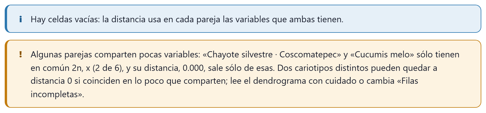
Figura 8.5. Los avisos con Todas; cada pareja con las variables que comparte: la silvestre y Cucumis melo sólo tienen en común 2n y x (2 de 6), y su distancia, 0.000, sale sólo de esas.
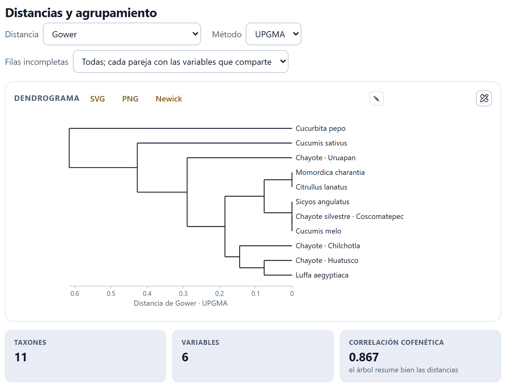
Figura 8.6. El dendrograma de las once filas con esa opción (cofenética 0.867). Las accesiones de chayote no forman un grupo: Uruapan queda aparte, la silvestre junto a Cucumis melo y Sicyos angulatus, y Huatusco junto a Luffa aegyptiaca.
!Importante · qué opción elegir
Con Todas; cada pareja con las variables que comparte, la silvestre (2n = 24) queda a distancia 0.000 de Cucumis melo y Huatusco (2n = 28) a 0.077 de Luffa (2n = 26), mientras que entre dos chayotes, comparados con las seis variables, las pequeñas diferencias de THL, MCA, CVCL y CVCI suman más (Huatusco–Uruapan, 0.482). El árbol no está mal calculado: mezcla distancias que miden cosas distintas. Con Todas, con las variables que tienen todas entran las once filas pero sólo con 2n y x: las tres cultivadas quedan a 0.000 entre sí y el árbol habla sólo del número cromosómico (cofenética 0.934). Deja la opción de omisión para comparar cariotipos y elige otra sólo cuando sepas qué pregunta responde.
8.3Componentes principales
El análisis de componentes principales resume las variables en unos pocos ejes que no se correlacionan entre sí (Jolliffe 2002). La app lo calcula sobre la matriz de correlaciones, con las filas que entraron al agrupamiento y las variables que varían, y lo dibuja como un biplot (Gabriel 1971): los puntos son las filas y las flechas las variables.
Eje x y Eje y eligen qué componentes se dibujan; cada opción dice cuánta varianza explica. En el biplot, las accesiones del proyecto van en círculos con su color y los otros taxones, si entran, en cuadrados grises. Una flecha larga en la dirección de un eje dice que esa variable pesa en ese componente; dos flechas juntas, que las variables van de la mano. La tabla de abajo da, por componente, el Valor propio, la Varianza, la Acumulada y las cargas de cada variable, que son sus correlaciones con el componente.
Figura 8.7. El CP1 explica 66.6 % de la varianza y el CP2 26.5 % (93.0 % juntos). En el CP1 cargan 2n y x (0.934), THL (0.818) y, en sentido contrario, CVCL (−0.824): separan a la silvestre de las cultivadas. En el CP2 cargan CVCI (0.754) y MCA (0.655), que apartan a Uruapan de Huatusco y Chilchotla.
iNota
Con cuatro filas no puede haber más de tres componentes con varianza, y como 2n y x son redundantes, los tres últimos tienen valor propio 0.0000: no los interpretes. Si eliges una opción de Filas incompletas que deje celdas vacías, el análisis las pone en la media de su variable y el pie de la tabla añade «(Hay celdas vacías.)».
Si menos de dos variables varían, no hay análisis de componentes, y la app lo avisa.
8.4Idiogramas en paralelo
Los idiogramas de todas las accesiones con cariotipo, uno debajo de otro, a la misma escala y con su fórmula en el título: la figura que muestra de un vistazo en qué se parecen y en qué no.
Escala elige entre La misma, en micras, que respeta los tamaños reales, y Longitud relativa (%), que pone cada cromosoma como porcentaje de su juego y compara sólo las proporciones. La casilla Bandas y señales pone o quita las marcas del Bloque 7.
Figura 8.8. Las tres accesiones cultivadas, 2n = 2x = 28 = 18m + 2m-sat + 8sm, y la silvestre, 2n = 2x = 24 = 16m + 2m-sat + 6sm, con sus dos pares más largos al principio, el satélite con 45S y CMA⁺ en el par 3 y un segundo sitio de 45S en el par 2. En Uruapan se ve el sitio de 45S del par 9.
8.5Evolución del número cromosómico
Sobre un árbol de los taxones, la parsimonia reconstruye los números cromosómicos de los antepasados: busca la historia con el menor costo total de eventos (Sankoff 1975). Los eventos son los de los modelos de evolución del número (Mayrose et al. 2010): +1 y −1, la disploidía ascendente y descendente; ×2, la poliploidía, y ×1.5, la demiploidía.
Escribe o pega el árbol en Newick, ábrelo con Abrir un archivo de árbol (Newick o NEXUS; de un NEXUS se toma el primer árbol) o usa Usar el dendrograma de arriba, que copia el dendrograma de la sección 8.2. Los cuatro costos se cambian en Costo de +1, Costo de −1, Costo de ×2 y Costo de ×1.5 (1, 1, 1 y 1.5 por omisión), y Mostrar elige si el árbol escribe el Número haploide n o el Número somático 2n. La app trabaja siempre con números haploides.
Figura 8.9. El árbol ilustrativo del ejemplo, con once puntas, y la tabla Números de las puntas: los siete taxones toman su 2n de «Otros taxones» y las cuatro puntas de Sechium, de las accesiones.
La tabla Números de las puntas dice de dónde sale el número de cada punta: de una accesión (por el nombre, el taxón o la correspondencia que trae el ejemplo), de otro taxón, escrito aquí o sin número. En la columna 2n (varios: 24/26) puedes escribir el número a mano, o varios separados por diagonal cuando la especie tiene más de un citotipo; lo escrito manda sobre lo que viene de las accesiones, y borrarlo devuelve el automático. La última columna da el n usado. Un 2n impar no tiene número haploide entero y queda fuera, con un aviso; una punta sin número se trata como desconocida.
Figura 8.10. Con los costos por omisión, la historia más parsimoniosa cuesta 11: cinco eventos +1, cinco −1 y una duplicación, en la rama de Cucurbita pepo (−1 y ×2: de n = 11 a 10 y a 20). La raíz es n = 11; el antepasado de Sechium y Sicyos, n = 12, y las cultivadas suben a n = 14 con dos eventos +1.
Las cifras de arriba del árbol son el Costo mínimo, el Número de la raíz, cuántos eventos de cada clase hay en la historia mostrada y los Nodos ambiguos, los que tienen más de un número igual de parsimonioso. En el árbol, cada nodo lleva su número en un círculo, las ramas con eventos van resaltadas y rotuladas con ellos, y los nodos ambiguos llevan borde punteado y sus otros números óptimos debajo: el árbol muestra una de las historias óptimas, no la única.
▸Ejemplo resuelto · qué tan firme es la reconstrucción
Sube el Costo de ×2 de 1 a 3. El costo mínimo pasa a 11.5: la duplicación desaparece y la historia usa una demiploidía y diez eventos de uno en uno (seis +1 y cuatro −1), y aparecen cuatro nodos ambiguos. La raíz sigue en n = 11. Lo que no cambia al mover los costos es lo firme de la reconstrucción; lo que cambia, depende de supuestos y conviene decirlo así.
θTeoría en breve · parsimonia de Sankoff
El costo de pasar de un número a otro es la secuencia más barata de eventos que lo logra: de 7 a 12, cinco +1 o una duplicación y dos −1, lo que cueste menos con los costos elegidos. El algoritmo recorre el árbol de las puntas a la raíz calculando, para cada nodo y cada número posible, el costo mínimo de lo que cuelga de él; la raíz se queda con el número de menor costo, y de ahí se desciende eligiendo en cada nodo un número óptimo. La parsimonia no usa las longitudes de las ramas ni da probabilidades: para eso están los modelos de Mayrose et al. (2010).
8.6Mapa de citotipos
Las accesiones y los taxones con coordenadas, como puntos coloreados por su 2n sobre una retícula de latitud y longitud.
Las coordenadas de una accesión se escriben en su ficha, en el Bloque 2; las de los otros taxones, en las columnas Latitud y Longitud de su tabla. La app no trae mapas de otros: con Cargar un contorno (GeoJSON) puedes poner uno propio (un estado, una cuenca), y Quitar el contorno lo retira. La leyenda da un color por cada 2n, y gris para las filas sin número.
Figura 8.11. Las cuatro localidades del ejemplo, entre 97 y 102° O y cerca de 19° N: tres con 2n = 28 (Huatusco, Chilchotla y Uruapan) y la silvestre de Coscomatepec con 2n = 24. Los otros taxones no tienen coordenadas y no aparecen.
Reglas de lectura del bloque
✓Regla de decisión
Si la correlación cofenética es ≥ 0.8
entonces el dendrograma resume bien las distancias; si es menor, léelo con cuidado o usa el biplot.
Si algunas filas no tienen todas las variables
entonces deja Filas incompletas en Fuera (sólo filas con todas las variables), o elige sólo las variables que tienen todas; comparar cada pareja con lo que comparte mezcla distancias distintas.
Si dos variables dicen lo mismo (2n y x en diploides)
entonces pesan doble en la distancia: quita una.
Si un componente tiene valor propio 0
entonces hay variables redundantes; no lo interpretes.
Si la raíz o un evento cambian al mover los costos
entonces esa parte de la reconstrucción depende de supuestos.
Si hay nodos ambiguos
entonces el árbol muestra una de varias historias igual de buenas.
Guías para interpretar, no leyes.
✕Cuando algo sale mal
«Hacen falta al menos tres accesiones o taxones con datos». Suma accesiones con cariotipo o conteos, o taxones en «Otros taxones». Con la opción de omisión de Filas incompletas, cuentan sólo las filas con todas las variables: apaga las que les faltan o cambia de opción.
«Ninguna de las variables elegidas está en todas las filas». Con Todas, con las variables que tienen todas no queda ninguna variable común; elige otra opción o cambia las variables.
«Estas parejas no comparten ninguna variable». Dos filas no tienen ninguna variable elegida en común; quita variables o completa los datos.
«Elige al menos una variable». Todos los chips están apagados.
Una punta del árbol queda «sin número». Su nombre no coincide con ninguna accesión ni taxón: escribe su 2n en la tabla de las puntas o corrige el nombre (los guiones bajos del Newick cuentan como espacios).
Error al leer el Newick. El mensaje dice qué falta («Falta un paréntesis de cierre…») o qué sobra al final.
El mapa sale vacío. Ninguna fila tiene latitud y longitud.
«El archivo no es un GeoJSON válido». El contorno debe ser un objeto GeoJSON (una colección, un elemento, un polígono o una línea).
9
Capítulo nueve · Bloque 9
Docencia
El bloque para el aula y para quien empieza: un simulador de la mitosis y la meiosis que pide contar antes de dar la respuesta, un ejercicio de cariotipo sobre una metafase inventada que se califica solo, una autoevaluación con explicaciones, un glosario ilustrado y una hoja de práctica lista para imprimir. No necesita datos ni toca el proyecto: funciona igual con un ejemplo abierto que sin nada.
9.1Mitosis y meiosis paso a paso
9.2Ejercicio: arma el cariotipo
9.3Autoevaluación
9.4Glosario ilustrado
9.5Hoja de práctica: cromosomas en puntas de raíz
El Bloque 9 tiene cinco tarjetas, que se recorren de arriba abajo o desde la lista En este bloque de la derecha. Nada de lo que hagas aquí cambia el proyecto: puedes abrirlo a mitad de un análisis, practicar y volver al bloque donde estabas sin perder nada. Las figuras del simulador y del ejercicio se descargan en SVG o PNG y se editan con el estudio y el editor ✎, como las de cualquier otro bloque (sección 10.3).
9.1Mitosis y meiosis paso a paso
Un dibujo de la célula que avanza fase por fase, con un texto que explica qué pasa y una respuesta escondida que dice qué hay que contar.
Arriba se elige la División —Mitosis o Meiosis— y el número de Pares (n), de 1 a 6 (3 al abrir). Cada par tiene su propia longitud y su centrómero en otro lugar, para que se distingan, y vienen en dos colores: azul los del padre y bermellón los de la madre. En la meiosis aparecen dos controles más: la casilla Entrecruzamiento, encendida al abrir, y el botón Otra orientación al azar, que vuelve a sortear hacia qué polo mira cada bivalente en la metafase I y cada cromosoma en la metafase II.
1234567
Figura 9.1. La meiosis con tres pares, en el paso 7 de 14, la metafase I: cada bivalente en la placa con un homólogo hacia cada polo. Abierta la respuesta, la célula tiene 6 cromosomas de 2 cromátidas, 4C, dos juegos (2n) y 3 bivalentes.
1División. Mitosis (7 pasos) o meiosis (14 pasos).
2Pares (n). De 1 a 6; 2n es el doble.
3Otra orientación al azar. Sólo en la meiosis, junto con Entrecruzamiento.
4Anterior, Reproducir, Siguiente. Recorren los pasos uno a uno o solos.
5Deslizador. Salta a cualquier paso; debajo, su número y su nombre.
6Célula. El dibujo del paso, que se descarga en SVG o PNG.
7Ver lo que hay que contar. La respuesta, cerrada hasta que la abres.
← Anterior y Siguiente → mueven un paso; Reproducir avanza solo, un paso cada 1.8 segundos, y se vuelve Pausa mientras corre; se detiene al llegar al último paso o al tocar ← Anterior, Siguiente →, el deslizador o la División. El deslizador lleva directo a un paso, y el renglón de debajo dice dónde estás: «7 / 14 · Metafase I». Bajo el dibujo, un párrafo explica la fase.
Los pasos
La mitosis tiene siete: Interfase (G2), Profase, Prometafase, Metafase, Anafase, Telofase y Citocinesis. La meiosis, catorce: Interfase (G2); la profase I en sus cinco etapas —leptoteno, cigoteno, paquiteno, diploteno y diacinesis—; Metafase I, Anafase I y Telofase I; Profase II, Metafase II, Anafase II y Telofase II, y la Tétrada. La interfase se dibuja en G2, con el ADN ya replicado, para que desde el principio cada cromosoma tenga dos cromátidas.
Lo que hay que contar
La tarjeta pide contar antes de mirar. Al abrir Ver lo que hay que contar aparecen los recuadros Células, Cromosomas por célula, Cromátidas por cromosoma, ADN por célula (en valores C) y Juegos de cromosomas (2n o n), y, del paquiteno a la metafase I, Bivalentes. En las anafases el recuadro de los cromosomas añade cuántos van a cada polo. Las cifras son las de los libros de texto para el número de pares elegido, no un conteo del dibujo.
Tabla 9.1. Lo que da la app en los pasos clave, con n pares (2n = 2n cromosomas)
Paso
Células
Cromosomas por célula
Cromátidas
ADN
Juegos
Interfase (G2) a metafase
1
2n
2
4C
2n
Anafase y telofase (mitosis)
1
4n (2n a cada polo)
1
4C
2n
Citocinesis
2
2n
1
2C
2n
Profase I a metafase I
1
2n (n bivalentes)
2
4C
2n
Anafase I
1
2n (n a cada polo)
2
4C
2n
Telofase I a metafase II
2
n
2
2C
n
Anafase II
2
2n (n a cada polo)
1
2C
n
Telofase II y tétrada
4
n
1
1C
n
θTeoría en breve · por qué la meiosis reduce y recombina
En la anafase I se separan los homólogos, no las cromátidas: cada polo recibe n cromosomas, todavía con dos cromátidas, y ahí se reduce el número a la mitad. Qué homólogo va a cada polo se decide al azar en cada par (segregación independiente), lo que da 2n combinaciones posibles; el entrecruzamiento del paquiteno, visible como quiasma en el diploteno, mezcla además los segmentos de las cromátidas no hermanas. La anafase II separa por fin las cromátidas, como una mitosis.
El simulador sigue un modelo propio y esquemático: con Entrecruzamiento encendido hay un quiasma por bivalente, en el brazo largo tres de cada cuatro veces, entre la segunda cromátida de un homólogo y la primera del otro, y las cromátidas recombinantes conservan los dos colores hasta el final. Al apagar la casilla, los cromosomas pasan enteros, de un solo color.
Figura 9.2. El último paso de la meiosis con tres pares: cuatro células con 3 cromosomas de una cromátida (1C, n). Debajo, la app dice que con n = 3 hay 8 combinaciones sin entrecruzamiento y qué recibió cada célula: la 3 recibió los tres pares del padre; la 1, el par 1 de la madre y los pares 2 y 3 recombinantes.
En la Tétrada, la respuesta añade una lista con lo que recibió cada una de las cuatro células: para cada par, si el cromosoma vino del padre, de la madre o es recombinante. Es la forma más directa de mostrar en clase que los cuatro productos de una meiosis son distintos entre sí y distintos de la planta madre.
9.2Ejercicio: arma el cariotipo
Una metafase simulada de un cariotipo inventado, con los cromosomas numerados, para emparejar, ordenar y clasificar a mano antes de pedir la calificación.
El ejercicio dibuja la metafase con el mismo motor que hace las imágenes de los ejemplos: cromosomas teñidos con su centrómero, un núcleo en reposo en una esquina y una barra de 5 µm. Cada cromosoma lleva un número junto a él, y debajo, en Recortes, aparecen los mismos cromosomas enderezados a lo largo de su eje y a la misma escala que la imagen, cada uno con dos menús: par y tipo (m, sm, st o t). El menú Pares elige cuántos pares tiene el cariotipo —4, 5 (al abrir) o 6— y Otra metafase inventa uno nuevo.
Figura 9.3. La metafase con la que abre el bloque: cinco pares, diez cromosomas en el orden en que se ven en la imagen. Los recortes conservan el tamaño relativo, y el centrómero se ve como la constricción de cada uno.
La tarea tiene tres partes: juntar los homólogos dándoles el mismo número de par; numerar los pares del más largo (1) al más corto, y clasificar cada cromosoma según Levan et al. (1964) por su razón de brazos r = q / p (capítulo 3: m hasta 1.7, sm hasta 3.0, st hasta 7.0, t por encima). Cuando termines, Revisar.
iEl ejercicio de inicio siempre es el mismo
Al abrir el bloque, la app dibuja siempre la misma metafase (la de la semilla 20261007), para que un grupo entero pueda trabajar sobre la misma imagen y comparar respuestas. Otra metafase y el cambio del número de pares sortean una nueva cada vez. Las cifras de esta sección son las de la metafase de inicio.
Cómo se califica
Revisar pone tres recuadros y una lista de observaciones, y marca cada recorte: con borde verde si el cromosoma quedó en su par, con el número de par correcto y con el tipo correcto; con borde ámbar si el tipo está mal o si el cromosoma no quedó con su homólogo, y con borde ámbar punteado si el par y el tipo están bien pero al par le toca otro número. Una línea bajo los botones lo recuerda: «Al revisar, el borde verde marca un recorte bien resuelto; el ámbar, un par o un tipo equivocado, y el ámbar punteado, un par bien formado al que le toca otro número.»
Pares bien formados: cuántos pares tienen a sus dos miembros, y sólo a ellos, con el mismo número.
Pares bien numerados: de los bien formados, cuántos llevan además el número que les toca por longitud («1 = el más largo»).
Tipos correctos: cuántos cromosomas, de todos, están bien clasificados.
Figura 9.4. El ejercicio contestado con dos errores a propósito: los cromosomas 5 y 10 se dieron como sm y los pares 4 y 5 se numeraron al revés. Resultado: 5 / 5 pares bien formados, 3 / 5 bien numerados y 8 / 10 tipos correctos. El 5 y el 10 llevan borde ámbar (tipo equivocado); el 6 y el 9, que forman bien el par 5 pero se numeraron 4, ámbar punteado.
Las observaciones dicen por qué. Un tipo equivocado da un aviso con la razón de brazos verdadera: «El 5 es subtelocéntrico (st): su razón de brazos es r = 4.07, no sm.» Dos homólogos separados dan «Los cromosomas … son homólogos (el par …, de … µm).»; un par bien formado con el número equivocado, «Los cromosomas 5 y 10 forman bien un par, pero por su longitud es el par 4.» Con todo correcto, la app escribe «¡Cariotipo correcto! Puedes ver la solución con las medidas.».
Ver la solución ordena los recortes por pares y escribe, bajo cada uno, su número, su tipo, su longitud media y su razón de brazos, y al final la fórmula cariotípica.
Figura 9.5. La solución de la metafase de inicio: par 1, m, 7.11 µm, r = 1.14; par 2, sm, 5.60 µm, r = 2.52; par 3, st, 4.35 µm, r = 5.05; par 4, st, 3.46 µm, r = 4.08; par 5, m, 2.62 µm, r = 1.30. Fórmula: 2n = 10 = 4m + 2sm + 4st.
▸Por qué el ejercicio tiene una sola respuesta
El cariotipo se inventa con razones de brazos lejos de los límites de Levan (m entre 1.10 y 1.45, sm entre 2.0 y 2.6, st entre 3.8 y 5.5), y cada par mide entre 20 y 25 % menos que el anterior; el par 1 siempre es metacéntrico. Los dos homólogos difieren entre sí, como mucho, un 2 % en cada brazo, como en una buena preparación. Así ningún cromosoma queda en la frontera entre dos clases ni dos pares se confunden por longitud: lo que se evalúa es saber medir con los ojos, no la suerte. En una preparación real los límites sí se tocan, y para eso están los Bloques 2 y 3.
9.3Autoevaluación
Preguntas de opción múltiple, con cuatro opciones cada una y una explicación que aparece al calificar.
Los botones de arriba son los temas: Cariotipo, Asimetría, Meiosis, Ploidía y genoma, Bandeo y FISH, Técnicas y Comparación; al abrir están todos encendidos, y un clic apaga o enciende uno. El menú Preguntas elige cuántas salen —5, 10 (al abrir) o 15— y Nuevas preguntas saca otra tanda. Cada cambio de tema o de número también arma una tanda nueva.
El banco tiene 33 preguntas: 28 fijas —4 de cariotipo, 3 de asimetría, 6 de meiosis, 6 de ploidía y genoma, 4 de bandeo y FISH, 3 de técnicas y 2 de comparación— y 5 que se generan con números nuevos cada vez: el índice centromérico de un cromosoma con brazos dados, la clase de Levan de una razón de brazos, el 2C de una muestra a partir de los canales del citómetro y de un estándar, el nivel de ploidía de un 2n con un número básico dado, y las combinaciones de cromosomas paternos y maternos que puede recibir un gameto. Las opciones se barajan en cada tanda.
Figura 9.6. Las tres primeras de una tanda de cinco preguntas de todos los temas, contestada siempre con la primera opción y calificada. La 1 está bien y se enmarca en verde; la 2 y la 3, mal, en ámbar, con la opción correcta resaltada. En las cinco hubo 3 aciertos: el recuadro Aciertos dice 3 / 5, 60 %.
Calificar marca cada pregunta, resalta la opción correcta y añade su explicación, que empieza con «Correcto.», «No.» o «Sin respuesta.». El recuadro Aciertos da el total y el porcentaje, y se pinta de advertencia por debajo del 70 %. Puedes cambiar respuestas y calificar de nuevo; las preguntas no cambian hasta que pidas otras.
9.4Glosario ilustrado
Treinta y cinco términos de la citogenética, de Alopoliploide a Valor C, en orden alfabético, cada uno con su definición y, los que se prestan, con un dibujo hecho por la app: los cuatro tipos de cromosoma con su centrómero en su lugar, el satélite, el quiasma y las configuraciones meióticas (bivalente en anillo y en varilla, trivalente, cuadrivalente, univalente). Buscar un término filtra mientras escribes; busca en el término y en la definición, en español y en inglés, y no distingue acentos ni mayúsculas.
Figura 9.7. Los primeros doce términos del glosario, de Alopoliploide a Disploidía. El bivalente, el bivalente en anillo, el bivalente en varilla, el centrómero y el cuadrivalente llevan su dibujo.
El glosario de la app es el de la interfaz; el apéndice C de este manual reúne, además, los términos que usan los demás capítulos.
9.5Hoja de práctica: cromosomas en puntas de raíz
Una hoja de laboratorio para obtener metafases mitóticas por aplastado de meristemos de raíz, armada con los tiempos y temperaturas de protocolos publicados y lista para imprimir.
Se eligen tres pasos del protocolo y el material; la vista previa de abajo cambia al instante:
Tabla 9.2. Las opciones de la hoja de práctica (la primera de cada menú es la que aparece al abrir)
Menú
Opción y condiciones
Fuente
Pretratamiento
8-hidroxiquinolina 0.002 M, 3–4 h a 16–18 °C
Sharma y Sharma 1980
Colchicina 0.05–0.1 %, 2–4 h a temperatura ambiente (tóxica: guantes)
Sharma y Sharma 1980
Agua con hielo (0–4 °C), 18–24 h
Darlington y La Cour 1976
Solución saturada de α-bromonaftaleno, 2–4 h (en campana)
Guerra y Souza 2002
Hidrólisis
HCl 1 N a 60 °C, 8–12 min (con orceína o carmín)
Sharma y Sharma 1980
HCl 5 N a temperatura ambiente, 20–60 min (para Feulgen)
Guerra y Souza 2002
Mezcla de celulasa y pectinasa (2 % y 20 %) a 37 °C, 1–2 h (para bandeo o FISH)
Schwarzacher y Heslop-Harrison 2000
Tinción
Aceto-orceína al 2 %, 10–30 min
Darlington y La Cour 1976
Acetocarmín o carmín propiónico al 1 %, 10–30 min
Sharma y Sharma 1980
Reactivo de Schiff (Feulgen), 1–2 h en oscuridad; después, una gota de ácido acético al 45 %
Guerra y Souza 2002
En el campo Material (especie) se escribe la especie, que aparece en el encabezado de la hoja. Los menús muestran sólo el nombre del reactivo; las condiciones completas van en la hoja.
Figura 9.8. La hoja con las opciones de inicio (8-hidroxiquinolina, HCl 1 N a 60 °C y aceto-orceína) y Zea mays como material: el encabezado para el nombre, la fecha y el grupo, el objetivo y los materiales. La vista previa sigue con el procedimiento.
La hoja trae, en este orden: el encabezado (Nombre, Fecha, Grupo, Material); el objetivo; los materiales; el procedimiento en ocho pasos —raíces, pretratamiento, fijación en Carnoy 3:1, lavado, hidrólisis, tinción, aplastado y observación—, cada uno con su fuente entre paréntesis; las medidas de seguridad (los ácidos son corrosivos; la colchicina y el α-bromonaftaleno, tóxicos; el reactivo de Schiff y los fijadores se guardan cerrados y rotulados); una tabla de registro de ocho renglones (preparación, célula, fase, 2n contado, observaciones); dos recuadros para dibujar una metafase y una anafase; cuatro preguntas, y las referencias de los pasos elegidos. Con las opciones de inicio son cuatro: Darlington y La Cour (1976), Guerra y Souza (2002), Sharma y Sharma (1980) y Singh (2017). Ningún reactivo lleva marca comercial.
Imprimir la hoja abre el diálogo de impresión con la hoja sola, sin la interfaz de la app (desde ahí también se guarda como PDF). Descargar (HTML) la guarda como practica_citogenetica.html, una página que se abre sin conexión y se puede editar antes de repartirla.
!La hoja no sustituye el reglamento del laboratorio
Los tiempos y temperaturas son los de los protocolos citados y funcionan con muchas especies, pero cada material tiene su punto: el pretratamiento y la hidrólisis suelen ajustarse con unas preparaciones de prueba. Las medidas de seguridad de la hoja son las mínimas; las del laboratorio donde trabajes, sobre todo en el manejo y desecho de la colchicina y el α-bromonaftaleno, mandan sobre ellas.
✓Cómo usar el bloque en una clase
Si introduces la división celular…
usa el simulador con 2 o 3 pares y pide contar antes de abrir Ver lo que hay que contar.
Si explicas la variación de los gametos…
llega a la Tétrada con y sin Entrecruzamiento, y repite con Otra orientación al azar.
Si todo el grupo debe trabajar la misma metafase…
deja la de inicio, que es la misma en todas las computadoras; para tareas individuales, Otra metafase.
Si preparas un examen breve…
elige los temas de la unidad y 5 o 10 preguntas; las generadas cambian de números en cada tanda.
Si la práctica sigue en el laboratorio…
imprime la hoja con los reactivos que tengas y, con las fotos, mide en el Bloque 2.
Son guías para planear, no recetas: el ritmo y el nivel del grupo mandan.
✕Cuando algo sale mal
No aparecen los controles del entrecruzamiento. Sólo existen en la meiosis: cambia la División. La autoevaluación dice «Elige al menos un tema.». Apagaste todos los temas; enciende alguno. El glosario dice «Ningún término coincide.». Borra o acorta la búsqueda. «Imprimir la hoja» no abre el diálogo. Si el navegador no deja imprimir desde la página, la app abre la hoja en una pestaña nueva para imprimirla desde ahí; si tampoco, usa Descargar (HTML). Perdí mis respuestas del ejercicio.Otra metafase y el menú Pares inventan un cariotipo nuevo y borran las respuestas.
10
Capítulo diez · Bloque 10
Figuras e informe
El final del recorrido: lo que se lleva a la tesis, al artículo o al expediente. El bloque reúne todas las figuras que dibujaron los demás, entre ellas el cariograma recortado de la imagen; deja descargar cada tabla de datos y de resultados; redacta un borrador de los métodos con sus referencias, en español o en inglés; arma un informe para imprimir, y empaqueta todo en un archivo .zip para que otra persona pueda repetir el análisis.
10.1Informe del proyecto
10.2El paquete reproducible
10.3Figuras, el estudio y el editor
10.4Tablas
10.5Métodos redactados
El Bloque 10 tiene cuatro tarjetas: Informe del proyecto, Figuras, Tablas y Métodos redactados. Nada se calcula aquí por primera vez: todo sale de lo que el proyecto ya tiene, con los ajustes que dejaste en cada bloque. Si cambias algo en otro bloque y vuelves, el Bloque 10 se rehace con el cambio. Las figuras de este capítulo se hicieron con el ejemplo del chayote (sechium), que tiene cuatro accesiones, señales, coordenadas y un árbol; el cariograma, con el del maíz (zea), el único ejemplo con imágenes.
10.1Informe del proyecto
Un documento con el resumen de cada accesión, los métodos, las tablas de resultados, las figuras marcadas y las referencias, listo para imprimir o para guardar como página.
La tarjeta tiene dos campos: Título, que trae el título del proyecto (con un ejemplo, el del ejemplo), y Autoría, vacío al abrir. Los dos se guardan en el proyecto. Debajo, cuatro recuadros dicen qué va a entrar: las Accesiones, las Figuras (y cuántas están marcadas para el informe), las Tablas y las Referencias citadas en los métodos.
Figura 10.1. El informe del chayote de ejemplo: 4 accesiones, 11 figuras (las 11 en el informe), 8 tablas y 21 referencias citadas.
Tres botones lo sacan:
Ver e imprimir el informe abre el diálogo de impresión del navegador con el informe solo, sin la interfaz; desde ahí se imprime o se guarda como PDF. Si el navegador no deja imprimir desde la página, el informe se abre en una pestaña nueva.
Descargar el informe (HTML) lo guarda como una página (informe_ y el título), que se abre sin conexión en cualquier navegador.
Descargar el paquete reproducible (.zip) arma el paquete de la sección 10.2.
Lo que trae el informe
El informe empieza con el título, la autoría, la fecha y la versión de la app («CytogeneticsPro 1.0.0»). Si el proyecto es un ejemplo, una nota advierte que los datos son simulados. Siguen estas partes, cada una sólo si el proyecto tiene con qué llenarla:
Tabla 10.1. Las partes del informe
Parte
Qué lleva
Resumen
Una fila por accesión: taxón, 2n (la moda de los conteos, o el del cariotipo), fórmula, longitud haploide, MCA, CVCL, categoría de Stebbins y 2C en pg.
Métodos
Los párrafos de la sección 10.5, en el idioma de la interfaz.
Resultados
El cariotipo de cada accesión (par, p, q y longitud con su desviación, longitud relativa, IC, r y tipo); los índices de asimetría; la meiosis (células, quiasmas por célula y por bivalente, índice de recombinación, % con multivalentes); la viabilidad del polen con su intervalo de Wilson; el contenido de ADN (2C, 1Cx y Mpb); la prueba de Allium; los sitios por juego de cada sonda, y la matriz de distancias de la comparación.
Figuras
Las marcadas en la tarjeta Figuras, numeradas, con los colores del tema claro.
Referencias
Las obras citadas en los métodos, en orden alfabético.
Con el chayote, los resultados traen el cariotipo de las cuatro accesiones, la asimetría, las bandas y señales y la comparación; no hay meiosis, citometría ni prueba de Allium porque el ejemplo no las tiene.
10.2El paquete reproducible
Un archivo .zip con el proyecto y todo lo que la app calculó con él: lo que un revisor, un coautor o tu director de tesis necesita para repetir el análisis.
Mientras se arma, la app muestra la espera «Armando el paquete» con su avance, porque cada figura se convierte también a PNG; al terminar descarga el archivo y avisa «Paquete listo: … archivos.». Con el chayote, el paquete se llama cytogeneticspro_Sechium_edule_tres_accesiones.zip y trae 35 archivos:
Tabla 10.2. El contenido del paquete del chayote de ejemplo
Archivo
Qué es
LEEME.txt
En español y en inglés: qué es el paquete, cómo repetir el análisis, la lista de archivos y la cita de la app.
proyecto_Sechium_edule_tres_accesiones.json
El proyecto completo, con las imágenes dentro; se abre con Abrir un proyecto (Ctrl + O).
informe.html
El informe de la sección 10.1.
metodos_es.txt · methods_en.txt
Los métodos redactados en los dos idiomas.
tablas/ (8 archivos .csv)
Todas las tablas de la sección 10.4.
figuras/ (11 .svg y 11 .png)
Todas las figuras de la galería, marcadas o no, en vector y en imagen al doble de resolución.
Para repetir el análisis basta el archivo del proyecto: al abrirlo, la app recalcula todos los resultados a partir de los datos y los ajustes guardados. Las tablas, las figuras y el informe van para quien quiera revisar sin abrir la app. Los archivos van dentro del .zip sin comprimir: los textos y los SVG pesan poco, y el paquete se abre con cualquier programa de archivos comprimidos.
iEl paquete no sale de tu equipo
Todo se arma en el navegador y se descarga en tu carpeta de descargas. Si las fotomicrografías no son tuyas o están sin publicar, recuerda que viajan dentro del archivo del proyecto: compártelo con el mismo cuidado que las imágenes.
10.3Figuras, el estudio y el editor
La galería de todas las figuras del proyecto, cada una con sus descargas, su casilla para el informe y sus dos herramientas de edición.
La galería junta, en este orden, el idiograma de cada accesión con cariotipo (haploide, en µm, en color y con sus marcas), el cariograma recortado de cada accesión que tenga imágenes trazadas, las categorías de Stebbins, el diagrama MCA × CVCL (con más de una accesión), los histogramas del citómetro del Bloque 6 y las figuras de la comparación del Bloque 8. Con el chayote son 11: los cuatro idiogramas, Stebbins, MCA × CVCL, el dendrograma, el biplot de componentes principales, los idiogramas en paralelo, el árbol con los números cromosómicos y el mapa de citotipos. Si el proyecto no tiene figuras, la tarjeta dice «El proyecto todavía no tiene figuras: abre un ejemplo o mide células en el Bloque 2.».
12345
Figura 10.2. La primera figura de la galería del chayote: el idiograma de Chayote · Huatusco, 2n = 2x = 28 = 18m + 2m-sat + 8sm, con el satélite del par 1 y las señales de ADNr 45S, ADNr 5S y CMA⁺.
1Marcar todas · Desmarcar todas. Todas las figuras entran o salen del informe.
2SVG · PNG. Descargan la figura como vector o como imagen.
3En el informe. La casilla de cada figura.
4Editor ✎. El panel de edición fina de esta figura.
5Estudio de figuras. La figura a pantalla completa, para ajustarla y exportarla.
Cada figura se descarga con SVG, un vector que se agranda sin perder nitidez y se edita en cualquier programa de dibujo, o con PNG, una imagen al triple de resolución de la pantalla. Los dos salen con los colores del tema claro aunque la app esté en el oscuro. La casilla En el informe decide si la figura entra al informe; el recuadro Figuras de la tarjeta del informe se actualiza al instante. Las casillas no se guardan en el proyecto: al abrir otro, todas vuelven a estar marcadas.
El cariograma recortado
El cariograma es la figura clásica de un artículo de citogenética: los cromosomas de una célula recortados de la fotografía, enderezados y ordenados por pares. La app lo arma sola con la primera célula de la accesión que tenga imagen y todos sus cromosomas trazados, con su centrómero, y agrupados en el Bloque 3. Endereza cada cromosoma a lo largo de su trazo, pone los dos homólogos juntos, ordena los pares como el cariotipo, alinea los centrómeros en una línea punteada y escribe debajo el número y el tipo de cada par. Los pares van en renglones de siete (de ocho, si hay más de doce), con una barra de escala al final.
Figura 10.3. El cariograma de la célula 1 del maíz de ejemplo: diez pares en dos renglones, con los nudos de heterocromatina visibles como bandas oscuras, el satélite del par 6 (sm-sat) y una barra de 5 µm. Arriba, el título: «Maíz criollo · Texcoco · Célula 1 (imagen) · 2n = 2x = 20 = 8m + 10sm + 2sm-sat».
Si ninguna célula de una accesión cumple las condiciones —no tiene imagen, o le falta el trazo o el centrómero a algún cromosoma—, esa accesión no tiene cariograma; el idiograma, que sólo necesita las medidas, sí aparece.
El estudio de figuras
El botón del lápiz y la regla, en la esquina de cada figura, abre el estudio de figuras, el mismo en todas las aplicaciones de la suite: la figura en el centro, a su tamaño de impresión, y los controles a la derecha. Abajo de la figura se lee su tamaño final; arriba, una línea punteada marca un ancho de revista.
Figura 10.4. El idiograma de Huatusco en el estudio. Debajo, su tamaño final: 85 × 41.7 mm a 600 puntos por pulgada, 2008 × 986 píxeles; la guía punteada marca el ancho de columna y media (114 mm). A la derecha, los ajustes y la edición fina.
La barra de arriba deshace y rehace, acerca y aleja la figura (Ajustar la deja del tamaño de la pantalla), aplica Preajustes de un clic y guarda los propios, y con Exportar la descarga al ancho de una o dos columnas de revista o a uno libre, con la resolución que pidas, en PNG, SVG, PDF vectorial o TIFF. A la derecha, Buscar un control… encuentra cualquier ajuste por su nombre; Ajustes de la figura reúne los controles propios de la figura en su bloque (en los idiogramas del Bloque 10, que no los tienen, dice «Esta figura no trae opciones propias: usa las del estudio (paleta, texto, tamaño) o el editor de la app si lo tiene.»), y Edición fina de esta figura es el editor ✎ dentro del estudio. En la figura, un clic lleva a los controles de esa parte y un doble clic en un texto deja cambiarlo. Cerrar estudio vuelve a la app.
El editor ✎
El botón ✎ abre, sin salir de la página, un panel flotante que trabaja sobre esa figura. Sus pestañas son General, Ejes y rejilla, Series, Leyenda, Textos y Anotaciones.
Figura 10.5. El editor ✎ sobre el idiograma de Huatusco, en la pestaña General: título, subtítulo y nota al pie dentro de la figura; letra, tamaño, color y grosores; fondo y marco.
En General se escriben un Título (vacío = sin título), un Subtítulo y una nota al pie dentro de la figura, y se ajustan el tamaño y la alineación del título, la Familia tipográfica, el Tamaño de todos los textos, el Color de todos los textos, el Grosor de las líneas, el Tamaño de los puntos, el Fondo y un Marco alrededor de toda la figura. Las demás pestañas cambian los ejes, los colores de cada serie, el lugar de la leyenda, cualquier texto y las anotaciones: notas, letras de panel y flechas que se arrastran sobre la figura, y líneas o bandas en un valor del eje. Deshacer todo en esta figura la devuelve a como la dibujó la app; Copiar el estilo a todas las figuras aplica los mismos ajustes a las demás, y Exportar la descarga. Las ediciones se recuerdan en el navegador y se vuelven a aplicar cuando la figura se redibuja.
iLas letras son las del equipo
Las figuras usan las letras instaladas en tu computadora; la app no descarga ninguna. Si mandas un SVG a otra persona, puede verse con otra letra parecida en su equipo. Para que se vea igual en todas partes, exporta en PDF vectorial o en PNG desde el estudio.
10.4Tablas
Todas las tablas del proyecto, con su número de filas y de columnas, y dos botones: CSV, separado por comas, y TSV, separado por tabuladores. Las dos usan el punto decimal y se guardan en UTF-8 con marca de orden de bytes, para que una hoja de cálculo lea bien los acentos y la µ; la ayuda de la tarjeta lo resume: «listos para una hoja de cálculo o un programa de estadística».
Figura 10.6. Las ocho tablas del chayote de ejemplo. Las mediciones son 324 filas, una por cromosoma medido; el cariotipo, 54, una por par y accesión (14 + 14 + 14 + 12). La matriz de comparación tiene los 11 taxones, pero la de distancias sólo las 4 accesiones que tienen todas las variables (sección 8.2, menú Filas incompletas).
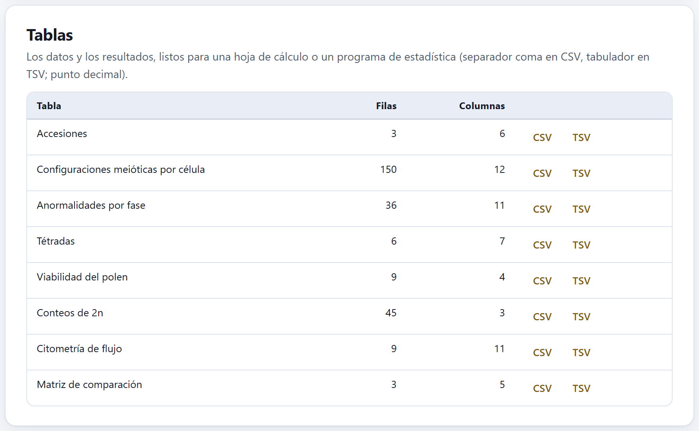
Figura 10.7. Las tablas de la serie poliploide de ejemplo, que tiene meiosis, polen y citometría: 150 células con sus configuraciones, 36 renglones de anormalidades por fase, 6 de tétradas, 9 plantas de polen, 45 conteos de 2n y 9 corridas del citómetro.
Tabla 10.3. Las tablas que puede tener un proyecto y su archivo
Tabla
Archivo
Columnas
Accesiones
accesiones
nombre, taxón, localidad, latitud, longitud, x
Mediciones por cromosoma
mediciones
accesión, taxón, célula, cromosoma, p, q, satélite, brazo del satélite, unidad (µm o px) y origen (trazo o a mano)
Cariotipo (pares)
cariotipo
par, células, p, q, longitud, longitud relativa e índice centromérico con sus desviaciones, razón de brazos, clase, satélite y unidad
Índices de asimetría
asimetria
2n, THL y los doce índices, la categoría de Stebbins y el modo de cálculo
Configuraciones meióticas por célula
meiosis_configuraciones
accesión, planta, célula y el número de cada configuración (I, II en varilla y en anillo, III, IV, V, VI)
Anormalidades por fase
meiosis_anormalidades
accesión, planta, fase, normales y cada anormalidad
Tétradas
tetradas
accesión, planta, normales, con micronúcleos, díadas, tríadas y políadas
Viabilidad del polen
polen
accesión, planta, viables e inviables
Conteos de 2n
conteos
accesión, célula y 2n
Citometría de flujo
citometria
accesión, muestra, patrón, picos y CV del patrón y la muestra, 2C, 1C y 1Cx en pg y 2C en Mpb
Prueba de Allium
mitosis_allium
tratamiento, repetición, células en cada fase y cada aberración
Bandas y señales
senales
par, homólogo, brazo, posición, tamaño, sonda, célula y región
Matriz de comparación
matriz_comparacion
las variables del Bloque 8 para cada accesión o taxón, con su origen
Matriz de distancias
distancias
la matriz cuadrada de las filas que entraron al agrupamiento
Una tabla aparece sólo si el proyecto tiene sus datos: con el maíz de ejemplo, que no tiene comparación, son siete. Cada bloque tiene también sus propias descargas (el cariotipo en el Bloque 3, los índices en el 4, las tablas de conteo de los Bloques 5 a 8); las de aquí son las mismas, juntas.
10.5Métodos redactados
Un borrador de la sección de métodos con lo que tiene el proyecto, con cada método citado por autor y año y las referencias completas al final.
El menú Idioma elige Español o English; al abrir sigue el idioma de la interfaz, y una vez que lo cambias se queda como lo dejaste. Copiar deja el texto en el portapapeles («Métodos copiados.») y Descargar (.txt) lo guarda como metodos.txt o methods.txt.
Figura 10.8. El comienzo de los métodos del chayote de ejemplo: la nota de datos simulados, la medición (sin imágenes: «Se registraron la longitud de los dos brazos y, cuando lo hubo, del satélite…»), el cariotipo con las fórmulas y longitudes haploides de las cuatro accesiones, y la asimetría con MCA, CVCL, CVCI y la categoría de Stebbins de cada una.
Los párrafos salen de lo que hay en el proyecto, uno por tema, y sólo si hay datos: la medición (cuántos cromosomas, células y accesiones, y cómo se midieron); el cariotipo (cómo se emparejaron los homólogos, qué se calculó, la clasificación con su convenio de límites, cómo se contó el número fundamental y las fórmulas); la asimetría (los índices recomendados, los demás y el tipo de desviación); el número cromosómico (la moda de las células contadas); la meiosis, la citometría y la prueba de Allium; las bandas y señales; la comparación (variables, distancia, agrupamiento, correlación cofenética, componentes y evolución del número), y un párrafo final con la versión de la app. Con el chayote son ocho párrafos y 21 referencias. El de la comparación, con el ajuste de inicio de Filas incompletas, dice que se compararon 4 accesiones, añade «Sólo entraron las filas con todas las variables.», da la correlación cofenética r = 0.870 y un 93.0 % de la varianza en los dos primeros componentes, y que el costo mínimo de la evolución del número fue 11, con n = 11 en la raíz. Si eliges comparar cada pareja con las variables que comparte, el párrafo lo dice: «En cada pareja se usaron las variables que ambas tienen.».
El párrafo de la medición cambia según de dónde salieron las medidas. Sin imágenes, como en el chayote, dice «Se registraron la longitud de los dos brazos y, cuando lo hubo, del satélite; la longitud del satélite se sumó a la de su brazo.». Con imágenes describe el trazo sobre las fotomicrografías, y si sólo algunas células las tienen lo aclara; en el maíz de ejemplo: «Se midieron 100 cromosomas en 5 células metafásicas de 1 accesión (Zea mays); una de ellas se midió sobre fotomicrografías calibradas con una barra de escala y las otras 4, a partir de medidas capturadas.». Los nombres científicos van en cursiva, con las palabras de rango en redonda: Sechium edule subsp. sylvestre.
!Es un borrador: revísalo siempre
La app escribe qué se hizo con los datos que tiene, no lo que no sabe: de dónde vino el material, cuántas plantas se usaron, qué microscopio y qué cámara, el pretratamiento y la tinción. Tampoco sabe por qué elegiste una clasificación o un índice. Completa el texto con eso, quita lo que no vayas a informar y ajusta la redacción a la revista. Si el proyecto es un ejemplo, la primera línea lo advierte: bórrala sólo cuando los datos sean tuyos.
✓Antes de entregar
Si la revista pide un ancho de figura…
exporta desde el estudio a ese ancho y con la resolución que pida (300 o 600 ppp).
Si publicas el cariograma…
elige como primera célula la mejor metafase: la app recorta la primera que tenga todos sus cromosomas trazados y agrupados.
Si el informe sólo debe llevar algunas figuras…
Desmarcar todas y marca las que quieras antes de imprimir.
Si usas los métodos redactados…
completa el material, el equipo y las razones de tus decisiones.
Siempre…
guarda el paquete reproducible junto a la tesis o al artículo: es la prueba de cómo se obtuvo cada número.
Son guías para entregar, no leyes: las instrucciones de la revista o de tu programa de posgrado mandan.
✕Cuando algo sale mal
«El proyecto todavía no tiene figuras». Abre un ejemplo o mide células en el Bloque 2; sin cariotipo no hay idiogramas. «Todavía no hay tablas.» El proyecto está vacío. No aparece el cariograma. Ninguna célula de la accesión tiene imagen con todos sus cromosomas trazados, con centrómero y agrupados en el Bloque 3. «No se pudo copiar; usa «Descargar».» El navegador no dejó usar el portapapeles: descarga el .txt. «No se pudo armar el paquete: …» Suele ser falta de memoria con imágenes muy grandes; vuelve a intentarlo cerrando otras pestañas, o guarda el proyecto con Ctrl + S y descarga las tablas y figuras por separado. El informe no se imprime. Usa Descargar el informe (HTML) y ábrelo para imprimirlo desde ahí.
A
Apéndices
Apéndices
Lo que conviene tener a la mano y no cabía en ningún capítulo: qué archivos lee y escribe la app y cómo los lee, las reglas de decisión de los diez bloques reunidas en un solo lugar, el vocabulario de la citogenética que usa el manual, qué hacer cuando algo no sale, la licencia de la herramienta con la manera de citarla y las 48 referencias de la app.
ALos archivos que la app lee y escribe
BLas reglas, reunidas
CGlosario
DCuando algo no sale
ELa herramienta: licencia y cómo citarla
FReferencias
ALos archivos que la app lee y escribe
CytogeneticsPro corre en el navegador y no envía nada a ningún servidor: todos los archivos entran desde tu computadora y salen a la carpeta de descargas. La app no guarda el proyecto por su cuenta: si cierras la pestaña sin guardarlo, el trabajo de esa sesión se pierde.
Un archivo escrito por la app, con "app": "CytogeneticsPro"; cualquier otro JSON se rechaza. Reemplaza el proyecto abierto y recalcula todo.
Imágenes
Bloque 2 · .png, .jpg, .jpeg
Varias a la vez; cada imagen es una célula nueva de la accesión elegida (o de una nueva). Avisa si una pesa más de 25 MB. Se guardan dentro del proyecto.
Medidas
Bloque 2, Pegar medidas · texto pegado
Una fila por cromosoma, en micras; columnas por nombre o por número (abajo). El CSV de mediciones que escribe el propio bloque vuelve a entrar completo, con su taxón y su unidad.
Tablas de registro
Bloques 5 a 8, Importar CSV o pegar sobre la tabla
Un CSV con encabezados: cada encabezado se busca entre las claves, los nombres en español y en inglés y los alias de las columnas, sin distinguir acentos, mayúsculas ni signos. Un bloque copiado de una hoja de cálculo se pega sobre la celda activa y añade las filas que falten.
Fertilidad del polen
Bloque 5 · .csv
El CSV de PalynoPro, la app de palinología de la suite, con las columnas landrace_code, n_granos_completos y pct_atipico; los inviables se calculan como n × % / 100, redondeado.
Histograma del citómetro
Bloque 6 · .csv, .tsv, .txt
Dos columnas (canal, número de núcleos) o una columna de valores de cada evento, que la app agrupa en 512 clases; con encabezado o sin él.
Árbol
Bloque 8 · .nwk, .newick, .tre, .tree, .txt, o pegado
Newick, con nombres entre apóstrofos y longitudes de rama (que se ignoran en la parsimonia); los comentarios entre corchetes se quitan. De un archivo NEXUS toma el primer árbol del bloque TREES. Las puntas se emparejan por nombre con las accesiones y los taxones.
Contorno del mapa
Bloque 8 · .geojson, .json
Un GeoJSON de tipo FeatureCollection, Feature, Polygon, MultiPolygon, LineString, MultiLineString o GeometryCollection, en longitud y latitud.
Cómo se leen los textos
Separador. Se adivina con el primer renglón con texto: si tiene un tabulador, tabulador; si no, si tiene punto y coma, punto y coma; si no, coma. Los campos entre comillas se respetan, y la marca de orden de bytes del principio se ignora.
Decimales. Se aceptan el punto y la coma decimal (2,35 se lee 2.35). Con coma decimal, separa las columnas con punto y coma o tabulador, que es lo que escriben las hojas de cálculo en español.
Renglones vacíos. Se saltan.
Las columnas de «Pegar medidas»
Si el primer renglón tiene algún texto que no es número y en él se reconocen las columnas p y q, se toma como encabezado. Los nombres que reconoce (al principio del encabezado, sin distinguir mayúsculas):
Columna
Encabezados que la nombran
Accesión
acc, accesión, accession, muestra, sample, población, population
Taxón
taxón, taxon, especie, species
Célula
cél…, cell, placa, plate, metafase, metaphase
Cromosoma
crom…, chrom…, núm…, no., #, id
Brazo corto (p)
p, s, corto, short, brazo corto, short arm
Brazo largo (q)
q, l, largo, long, brazo largo, long arm
Satélite
satélite, satellite, sat
Brazo del satélite
brazo…sat, sat…brazo o sat…arm, arm, brazo
Unidad
unidad, unit
Sin encabezado, las columnas se leen por su número: 2 columnas, p q (una célula nueva); 3, cromosoma p q; 4, célula cromosoma p q; 5 a 7, accesión célula cromosoma p q [satélite] [brazo]. Una fila sin un número válido para p (≥ 0) y para q (> 0) se salta, y el mensaje dice cuáles. Un satélite va en el brazo q si la columna del brazo dice q, l, largo o long; si no, en el p. Las accesiones que no existen se crean con el nombre que trae la columna; si la tabla tiene taxón pero no accesión, se crea una accesión por taxón, y el taxón se anota en la accesión. Las filas sin accesión ni taxón van a la accesión elegida, y sólo si hace falta se crea una nueva: pegar una tabla que nombra sus accesiones no deja una «Accesión 1» vacía. Una célula cuya columna de unidad dice px (una célula sin calibrar exportada antes) se queda en píxeles, y el mensaje lo avisa: «Una célula viene en píxeles (sin calibrar).».
Así, el archivo mediciones.csv que escribe el Bloque 2 (accesión, taxón, célula, cromosoma, p, q, satélite, brazo del satélite, unidad, origen) se puede pegar de vuelta sin perder nada; la columna origen se ignora.
El informe, los métodos, cada tabla y el paquete reproducible (sección 10.2).
cualquiera
<nombre>.svg · .png
Cada figura, con los colores del tema claro; el PNG al triple de resolución. El estudio exporta además PDF y TIFF al tamaño que pidas.
Todos los CSV y TSV usan el punto decimal y van en UTF-8 con marca de orden de bytes, para que una hoja de cálculo lea los acentos y la µ; el separador es la coma en los CSV y el tabulador en los TSV. Los textos .txt también llevan la marca.
iLo que el navegador recuerda
El navegador guarda sólo preferencias, no datos: el idioma de la interfaz, el tema claro u oscuro, las animaciones y las ediciones hechas con el editor ✎. Para conservar un análisis, guarda el proyecto.
BLas reglas, reunidas
Las reglas que la app aplica para clasificar, avisar o decidir, con el bloque donde actúan. Son las mismas que explica cada capítulo; aquí están juntas para consultarlas de un vistazo.
B.1 · Clasificación de los cromosomas (Bloque 3)
Esquema
Clases y límites
Levan et al. (1964), por la razón de brazos r = q / p (el de inicio)
m: r ≤ 1.70 · sm: 1.70 < r ≤ 3.00 · st: 3.00 < r ≤ 7.00 · t: r > 7.00. El valor justo en el límite va a la clase más mediana (r = 1.70 es m; r = 3.00 es sm).
Levan et al. (1964), por el índice centromérico IC = 100 p / (p + q)
m: IC ≥ 37.5 · sm: 25–37.5 · st: 12.5–25 · t: < 12.5, con el mismo convenio.
Guerra (1986)
m: 1.00–1.49 · sm: 1.50–2.99 · a (acrocéntrico): ≥ 3.00. El límite va a la clase superior (r = 1.50 es sm; r = 3.00 es a).
Límites propios
Los límites de r que escribas y un nombre más que límites.
Casilla de M y T
M sólo con brazos exactamente iguales (r = 1); T, sin brazo corto (p = 0).
Satélite. Su longitud se suma a la del brazo donde está; el par se marca «-sat».
Número fundamental (NF). Dos brazos por cromosoma m y sm; uno por st, a y t, salvo que elijas contar los st con dos.
Aviso de variación. Un par cuya longitud varía más de 20 % entre células (coeficiente de variación) se señala: puede ser condensación distinta o un homólogo mal emparejado.
B.2 · Asimetría (Bloque 4)
Índices recomendados ★
MCA y CVCI (intracromosómica) y CVCL (intercromosómica), como recomiendan Peruzzi y Eroğlu (2013). Los demás (TF%, AsK%, Syi, Rec, A1, A2, A, AI, DI) se dan para comparar con trabajos anteriores.
Categorías de Stebbins (1971)
La letra por el cociente entre el cromosoma más largo y el más corto: A < 2; B de 2 a 4 (los dos extremos incluidos); C > 4. El número por la proporción de cromosomas con r menor que 2: 1 si son todos; 2 de 0.99 a 0.51; 3 de 0.50 a 0.01; 4 si ninguno.
Desviación estándar
Muestral (n − 1) por omisión en CVCL, CVCI y A2; se puede cambiar a poblacional (n).
CVCI indefinido
Si todos los cromosomas son telocéntricos (0/0), no cero.
DI
Con las medianas del brazo corto y de la longitud (Lavania y Srivastava 1992).
B.3 · Meiosis (Bloque 5)
¿Autopoliploide o alopoliploide?
Una hipótesis se ajusta si la prueba χ² de las configuraciones observadas contra las esperadas da p ≥ 0.05; las clases con menos de 5 esperadas se juntan con su vecina. Una fórmula que no permite alguna configuración observada (multivalentes donde sólo caben bivalentes) queda rechazada sin prueba. Hasta tres fórmulas y ocho genomas.
Índice meiótico (Love 1951)
Tétradas normales / todas × 100; ≥ 90 se lee como meiosis estable.
Viabilidad del polen
Proporción de granos viables con los intervalos de Wilson y de Clopper–Pearson; si la prueba de homogeneidad entre plantas da p < 0.05, conviene informarlas por separado.
B.4 · Ploidía y tamaño de genoma (Bloque 6)
Número cromosómico
La moda de las células contadas; con más de una moda, la app pide contar más células. Si la moda no es múltiplo de x, avisa: aneuploidía, cromosomas B o disploidía.
Citometría de flujo
2C = (canal G1 de la muestra / canal G1 del estándar) × 2C del estándar; 1C = 2C / 2; 1Cx = 2C / nivel de ploidía; 1 pg = 978 Mpb.
Calidad de los picos
Avisa si algún pico tiene un CV mayor de 5 %, si la razón muestra / estándar está entre 0.85 y 1.18 (los picos se enciman) o si es mayor de 3 o menor de 1/3 (la respuesta del citómetro puede dejar de ser lineal).
Prueba de Allium
Cada tratamiento se compara con el testigo, con la corrección de Holm; un índice mitótico menor que la mitad del testigo es una señal fuerte de citotoxicidad.
B.5 · Bandeo y FISH (Bloque 7)
Posición en el brazo, del centrómero (0) al telómero (1): proximal < 1/3; intersticial de 1/3 a 0.8; terminal > 0.8.
Sitios por juego. Un sitio en los dos homólogos cuenta uno; en uno solo, medio (y se cuenta como heteromorfismo), con el mismo criterio en el patrón de la accesión y sus regiones, en la tabla de todas las accesiones y en la matriz de la comparación.
B.6 · Comparación entre taxones (Bloque 8)
Mínimos. Al menos una variable y tres accesiones o taxones con datos; el análisis de componentes necesita al menos dos variables que varíen.
Filas incompletas. Por omisión, Fuera (sólo filas con todas las variables): al agrupamiento y a los componentes sólo entran las filas con todas las variables elegidas; las demás siguen en la matriz, en el árbol de los números y en el mapa, y la app dice cuáles quedan fuera y qué les falta. Todas, con las variables que tienen todas usa sólo las variables comunes. Todas; cada pareja con las variables que comparte calcula la distancia de Gower o la euclidiana (reescalada al total) con lo que comparte cada pareja; avisa si alguna comparte la mitad de las variables o menos, y se detiene si una no comparte ninguna. Los componentes ponen las celdas vacías en la media.
Ward trabaja con las distancias al cuadrado y da las alturas en la escala de la distancia.
Evolución del número. Parsimonia de Sankoff con los costos de +1, −1, ×2 y ×1.5 que elijas (1, 1, 1 y 1.5 al abrir); un 2n impar no entra al análisis; hacen falta al menos dos puntas con número, y las demás se tratan como desconocidas.
B.7 · Docencia (Bloque 9)
Ejercicio de cariotipo. Razones de brazos lejos de los límites de Levan (m 1.10–1.45, sm 2.0–2.6, st 3.8–5.5); cada par, de 20 a 25 % más corto que el anterior.
Autoevaluación. El recuadro de aciertos se pinta de advertencia por debajo del 70 %.
Todas son guías para leer los resultados, no leyes: lo que sabes de tu material, de la preparación y de cómo se midió siempre manda.
CGlosario
Los términos de la citogenética que usa el manual, con el sentido en que los usa la app. El glosario ilustrado del Bloque 9 (sección 9.4) trae 35 de ellos con dibujos.
Término
Significado
Accesión
Cada muestra que se estudia: una población, una variedad, una colecta. En la app, el grupo de células que forman un cariotipo.
Acrocéntrico (a)
En el esquema de Guerra (1986), cromosoma con r ≥ 3.00.
Aneuploidía
Número cromosómico que no es múltiplo exacto del número básico (2n − 1, 2n + 1).
Alopoliploide · autopoliploide
Poliploide con juegos de especies distintas (AABB), que forma sobre todo bivalentes; o de la misma especie (AAAA), que forma multivalentes.
Banda C
Región de heterocromatina constitutiva que queda teñida tras desnaturalizar y renaturalizar el ADN; en el maíz, los «nudos».
Bivalente
Par de homólogos apareados en la profase y la metafase I, unidos por quiasmas; en anillo si los tiene en los dos brazos, en varilla si en uno.
Calibración
La relación entre píxeles y micras de una imagen, que la app saca de la barra de escala.
Cariograma
Los cromosomas de una célula recortados de la imagen y ordenados por pares.
Cariotipo
El juego de cromosomas descrito por su número, su tamaño, la posición del centrómero y sus marcas.
Centrómero
La constricción primaria, que divide al cromosoma en el brazo corto (p) y el largo (q).
CMA · DAPI
Fluorocromos que se unen a regiones ricas en GC (cromomicina A₃) o en AT (DAPI); dan bandas CMA⁺ o DAPI⁺.
Coeficiente de variación (CV)
La desviación estándar entre la media, en porcentaje; en la citometría, el ancho de un pico.
Constricción secundaria
Estrechamiento fuera del centrómero, a menudo una NOR; separa el satélite.
Correlación cofenética
La correlación entre las distancias originales y las que reproduce el dendrograma: mide cuánto lo deforma.
Cromátida
Cada una de las dos copias de un cromosoma replicado.
Cromosoma B
Cromosoma supernumerario, prescindible, fuera del complemento básico (A).
Diacinesis
La última etapa de la profase I, con los bivalentes muy condensados; la mejor para contar bivalentes y quiasmas.
Disploidía
Cambio del número básico x de uno en uno, por fusión o fisión de cromosomas.
Euploidía
Número cromosómico múltiplo exacto de x (2x, 3x, 4x…).
FISH
Hibridación in situ con fluorescencia: una sonda de ADN marcada señala dónde está una secuencia (ADNr 45S, 5S, telómeros…).
Fórmula cariotípica
2n y el número de cromosomas de cada clase, por ejemplo 2n = 2x = 28 = 18m + 2m-sat + 8sm.
Heteromorfismo
Diferencia visible entre los dos homólogos de un par: tamaño, banda o señal en uno solo.
Homólogos
Los dos cromosomas de un par, uno de cada progenitor.
Idiograma
Dibujo esquemático del cariotipo a escala, con los pares ordenados y sus marcas.
Índice centromérico (IC)
100 · p / (p + q): el brazo corto como porcentaje de la longitud.
Índice meiótico
Porcentaje de tétradas normales (Love 1951).
Índice mitótico
Porcentaje de células en división entre las observadas.
Índice de recombinación
n más el número de quiasmas por célula.
Longitud haploide (THL)
La suma de las longitudes de un juego de cromosomas.
Longitud relativa
La longitud de un par como porcentaje de la longitud haploide.
MCA · CVCL · CVCI
La asimetría media del centrómero, y los coeficientes de variación de la longitud y del índice centromérico de los cromosomas.
Micronúcleo
Núcleo pequeño con un fragmento o un cromosoma rezagado en la división.
Moda
El valor más frecuente: el 2n de una accesión es la moda de sus células contadas.
Multivalente
Asociación de tres (trivalente) o más homólogos en la meiosis.
NOR
Región organizadora del nucléolo, con los genes del ADNr 45S.
Número básico (x)
Número de cromosomas de un juego monoploide del grupo.
Número fundamental (NF)
Número de brazos cromosómicos del complemento.
Patrón (estándar interno)
Planta de contenido de ADN conocido que se procesa con la muestra en la citometría.
Quiasma
Punto donde dos cromátidas no hermanas siguen unidas tras el entrecruzamiento.
Razón de brazos (r)
q / p, el brazo largo entre el corto.
Satélite
Segmento de cromosoma más allá de una constricción secundaria.
Tétrada
Las cuatro células que deja la meiosis de una célula madre.
Univalente
Cromosoma sin pareja en la metafase I.
Valor C
Contenido de ADN de un núcleo gamético sin replicar; 2C, el de un núcleo somático en G1; Cx, el de un juego monoploide.
DCuando algo no sale
Los mensajes de la app, tal como aparecen, con lo que suelen querer decir y qué hacer. Los puntos suspensivos son la parte del mensaje que cambia (un nombre, un número).
Mensaje
Qué pasa y qué hacer
Proyectos y archivos
«No se pudo abrir el proyecto: El archivo no es un proyecto de CytogeneticsPro.»
El JSON es de otra app o no es un proyecto. Abre un .cytogeneticspro.json guardado por la app.
«Sólo se abren imágenes PNG o JPG y proyectos .json.»
El archivo es de otro tipo (TIFF, PDF…). Conviértelo a PNG o JPG.
«No se pudo leer la imagen …»
El archivo está dañado o no es la imagen que dice su extensión.
«La imagen … pesa más de 25 MB: el proyecto será pesado.»
Sólo un aviso; si el proyecto se vuelve lento, reduce la imagen.
«Ninguna fila tenía dos números válidos para p y q.»
Las columnas no se reconocieron o tienen texto; revisa el encabezado o el separador (apéndice A.1).
«El archivo no tenía columnas reconocibles.»
Ningún encabezado del CSV coincide con una columna de la tabla; usa los nombres que trae la tabla al exportarla.
Medición y cariotipo (Bloques 2 y 3)
«… tiene una célula sin calibrar: sus medidas están en píxeles.» (o «… células sin calibrar…»)
Calibra con la barra de escala (o captura las medidas en micras) para mezclarlas con las demás.
«Una célula viene en píxeles (sin calibrar).» (al pegar medidas)
La columna de unidad decía px; la célula se queda en píxeles hasta que la calibres o captures sus medidas en micras.
«En … no todas las células tienen el mismo número de cromosomas medidos (moda …).»
Falta o sobra algún cromosoma en alguna célula; el Bloque 3 agrupa lo que haya.
«Esta accesión mezcla células calibradas (µm) y sin calibrar (píxeles).»
Las longitudes relativas valen; las absolutas no. Calibra todas en el Bloque 2.
«Las células no tienen el mismo número de cromosomas (…).»
Revisa el emparejamiento de las células incompletas.
«Con … cromosomas y … homólogos por grupo queda un grupo incompleto.»
El número de homólogos por grupo no divide a 2n; revisa ese ajuste o los conteos.
«Los pares … varían más de 20 % entre células.»
Condensación distinta o un homólogo mal emparejado; mira la longitud relativa.
«Los nombres deben ser uno más que los límites.»
En los límites propios, escribe por ejemplo límites «1.7, 3, 7» y nombres «m, sm, st, t».
Meiosis, ploidía y bandas (Bloques 5 a 7)
«Escribe el número básico x de la accesión para plantear las hipótesis.»
Sin x no hay fórmulas genómicas que probar.
«La fórmula … con x = … da 2n = …, pero las células tienen ….»
La fórmula no corresponde al número de las células; corrígela.
«Ninguna hipótesis se ajusta (la mejor: …).» · «Más de una hipótesis se ajusta (…): hacen falta más células para decidir.»
Prueba otra fórmula o registra más células.
«El archivo no tiene las columnas de PalynoPro (landrace_code, n_granos_completos, pct_atipico).»
El CSV no viene de PalynoPro; captura los granos en la tabla.
«Hay más de una moda: cuenta más células antes de decidir el número.»
Dos o más números empatan; cuenta más.
«El número modal no es múltiplo de x = …»
Aneuploidía, cromosomas B o un número básico distinto.
«…: algún pico tiene un CV mayor de 5 %.»
Repite la preparación: núcleos dañados o restos.
«…: la muestra y el patrón casi coinciden (razón cercana a 1).»
Elige un patrón con un contenido más distinto.
«…: la muestra y el patrón difieren más de tres veces en su contenido de ADN.»
Tan lejos, la respuesta del citómetro puede dejar de ser lineal: elige un patrón de tamaño más cercano al de la muestra, sin que los picos se encimen.
«No se encontraron números en el archivo.»
El CSV del citómetro no tiene columnas numéricas que la app reconozca (apéndice A.1).
«Las compuertas elegidas están vacías.»
Ajusta los límites de las compuertas del histograma.
Comparación (Bloque 8)
«Sólo entran al agrupamiento y al ACP las filas con todas las variables elegidas. Quedan fuera … filas (…), a las que les falta …»
Es el ajuste de inicio de Filas incompletas. Para incluirlas, elige sólo las variables que tienen o cambia ese menú.
«Sólo se usan las variables que tienen todas las filas (…); quedan fuera ….» · «Ninguna de las variables elegidas está en todas las filas.»
Con Todas, con las variables que tienen todas; en el segundo caso, elige otras variables u otra opción.
«Algunas parejas comparten pocas variables: «…» y «…» sólo tienen en común … (… de …), y su distancia, …, sale sólo de esas.»
Con Todas; cada pareja con las variables que comparte: dos cariotipos distintos pueden quedar a distancia 0; lee el dendrograma con cuidado o cambia Filas incompletas.
«Hacen falta al menos tres accesiones o taxones con datos para comparar.»
Añade taxones en Otros taxones, elige variables que tengan más filas o cambia Filas incompletas.
«Estas parejas no comparten ninguna variable: …»
Con la comparación por parejas: quita variables o completa los datos.
«Falta un paréntesis de cierre en el Newick.» · «Sobra texto al final del Newick.» · «El Newick está vacío.»
El árbol está mal escrito; revisa paréntesis y el punto y coma final.
«Hacen falta al menos dos puntas con número.»
Los nombres de las puntas no coinciden con las accesiones o taxones, o les falta 2n; escríbelo en Números de las puntas.
«…: 2n = … es impar; no tiene un número haploide entero y no entra al análisis.»
Esa punta se trata como desconocida.
«Todavía no hay dendrograma.»
Haz primero el agrupamiento de arriba.
«El archivo no es un GeoJSON válido.»
El archivo no es JSON o su tipo no es uno de los que lee la app (apéndice A.1).
Figuras e informe (Bloque 10)
«El proyecto todavía no tiene figuras: abre un ejemplo o mide células en el Bloque 2.»
Sin cariotipo no hay idiogramas.
«No se pudo copiar; usa «Descargar».»
El navegador no dejó usar el portapapeles.
«No se pudo armar el paquete: …»
Suele ser memoria con imágenes muy grandes; cierra otras pestañas o descarga por partes.
✕Si el problema no está en la lista
Guarda el proyecto (Ctrl + S), recarga la página y ábrelo de nuevo: como los resultados se recalculan desde los datos, casi cualquier estado extraño se corrige así. Si persiste, usa Reportar un problema en la barra superior, con los pasos para repetirlo; no adjuntes imágenes ni datos que no puedas compartir.
ELa herramienta: licencia y cómo citarla
E.1 · Qué es y qué no es
CytogeneticsPro está escrito para este programa: las distribuciones estadísticas, el cariotipo, los índices de asimetría, la meiosis, el idiograma, los simuladores de la docencia, el informe, el archivo .zip y las ilustraciones están en su propio código, que se puede leer. No usa bibliotecas de terceros, no trae tipografías (usa las letras del equipo), no tiene código minificado ni pasos de compilación, y no carga nada de la red: por eso abre con doble clic y sin conexión. Los únicos enlaces hacia fuera, el del portal de la suite y el de Reportar un problema, sólo se siguen si haces clic en ellos.
Implementa métodos publicados, cada uno citado a su fuente original en el código, en la portada de la app y en los métodos que redacta el Bloque 10 (apéndice F). Los cuatro ejemplos son simulados con un guion propio: los nombres de las especies y de los lugares son reales, las medidas no. Lo único de terceros son los íconos de línea que dibujan los módulos compartidos de la suite —el navegador, el estudio de figuras y los efectos—: vienen del proyecto Lucide, con licencia ISC (los derivados del proyecto Feather llevan además la MIT), ambas permisivas y compatibles con la GPL. El archivo LICENSES-TERCEROS.md los enumera con el texto de sus licencias, y PROCEDENCIA.md dice de dónde sale cada parte del programa.
E.2 · Licencia
CytogeneticsPro se distribuye bajo la Licencia Pública General de GNU, versión 3 o posterior (GPL-3.0-or-later). El texto completo está en el archivo LICENSE, en la carpeta del programa.
iLicenciar no es ceder la autoría
La licencia dice lo que puede hacer quien recibe el programa: usarlo con cualquier fin, estudiarlo, modificarlo y redistribuirlo. A cambio pide que, si distribuyes una versión modificada, lo hagas con las mismas libertades y con su código. La autoría no se transfiere ni se renuncia a ella. El programa se entrega sin garantía, como dice la licencia; este manual tiene sus propios derechos, reservados por su autor.
E.3 · Cómo citarla
La sección Cómo citar de la portada de la app da la cita lista para copiar, como texto y como entrada BibTeX. El programa todavía no tiene un identificador digital (DOI); se añadirá a la cita cuando se publique.
“
Cita sugerida
Barrera-Guzmán, L. Á. (2026). CytogeneticsPro: citogenética vegetal en el navegador (versión 1.0.0) [Programa de cómputo]. https://github.com/luisangelbg/CytogeneticsPro
@software{barreraguzman2026cytogeneticspro,
author = {Barrera-Guzmán, Luis Ángel},
title = {CytogeneticsPro: citogenética vegetal en el navegador},
version = {1.0.0},
year = {2026},
license = {GPL-3.0-or-later},
url = {https://github.com/luisangelbg/CytogeneticsPro}
}
Código: https://github.com/luisangelbg/CytogeneticsPro · app en línea: https://luisangelbg.github.io/CytogeneticsPro/.
Cita además, en tus métodos, los trabajos de los métodos que usaste: la clasificación de los cromosomas, los índices de asimetría, la prueba de las hipótesis meióticas, el estándar de la citometría. Los métodos redactados del Bloque 10 los reúnen solos, y sólo los que tu proyecto usó, que es exactamente la lista que hay que poner.
FReferencias
Las 48 obras del catálogo de la app, agrupadas por tema en el orden del recorrido —de la imagen a la comparación, después la estadística y las técnicas— y, dentro de cada tema, en orden alfabético. Son las mismas de la sección Referencias de la portada.
F.1 · Cariotipo
Battaglia E. 1955. Chromosome morphology and terminology. Caryologia 8: 179–187.
Guerra M. 1986. Reviewing the chromosome nomenclature of Levan et al. Revista Brasileira de Genética 9: 741–743.
Guerra M. 2008. Chromosome numbers in plant cytotaxonomy: concepts and implications. Cytogenetic and Genome Research 120: 339–350.
Levan A, Fredga K, Sandberg AA. 1964. Nomenclature for centromeric position on chromosomes. Hereditas 52: 201–220.
Rice A, Glick L, Abadi S, Einhorn M, Kopelman NM, Salman-Minkov A, Mayzel J, Chay O, Mayrose I. 2015. The Chromosome Counts Database (CCDB) – a community resource of plant chromosome numbers. New Phytologist 206: 19–26.
F.2 · Asimetría
Arano H. 1963. Cytological studies in subfamily Carduoideae (Compositae) of Japan. IX. The karyotype analysis and phylogenic considerations on Pertya and Ainsliaea. The Botanical Magazine, Tokyo 76: 32–39.
Greilhuber J, Speta F. 1976. C-banded karyotypes in the Scilla hohenackeri group, S. persica, and Puschkinia (Liliaceae). Plant Systematics and Evolution 126: 149–188.
Huziwara Y. 1962. Karyotype analysis in some genera of Compositae. VIII. Further studies on the chromosomes of Aster. American Journal of Botany 49: 116–119.
Lavania UC, Srivastava S. 1992. A simple parameter of dispersion index that serves as an adjunct to karyotype asymmetry. Journal of Biosciences 17: 179–182.
Paszko B. 2006. A critical review and a new proposal of karyotype asymmetry indices. Plant Systematics and Evolution 258: 39–48.
Peruzzi L, Eroğlu HE. 2013. Karyotype asymmetry: again, how to measure and what to measure? Comparative Cytogenetics 7: 1–9.
Peruzzi L, Leitch IJ, Caparelli KF. 2009. Chromosome diversity and evolution in Liliaceae. Annals of Botany 103: 459–475.
Romero Zarco C. 1986. A new method for estimating karyotype asymmetry. Taxon 35: 526–530.
Stebbins GL. 1971. Chromosomal Evolution in Higher Plants. Edward Arnold, Londres.
Watanabe K, Yahara T, Denda T, Kosuge K. 1999. Chromosomal evolution in the genus Brachyscome (Asteraceae, Astereae): statistical tests regarding correlation between changes in karyotype and habit using phylogenetic information. Journal of Plant Research 112: 145–161.
Zuo L, Yuan Q. 2011. The difference between the heterogeneity of the centromeric index and intrachromosomal asymmetry. Plant Systematics and Evolution 297: 141–145.
F.3 · Meiosis
Alexander MP. 1969. Differential staining of aborted and nonaborted pollen. Stain Technology 44: 117–122.
Colombo PC. 1992. A new index for estimating genetic recombination from chiasma distribution data. Heredity 69: 412–415.
Jackson RC, Casey J. 1982. Cytogenetic analyses of autopolyploids: models and methods for triploids to octoploids. American Journal of Botany 69: 487–501.
Love RM. 1951. Varietal differences in meiotic chromosome behavior of Brazilian wheats. Agronomy Journal 43: 72–76.
Sybenga J. 1975. Meiotic Configurations: A Source of Information for Estimating Genetic Parameters. Springer, Berlín.
F.4 · Ploidía y genoma
Doležel J, Bartoš J, Voglmayr H, Greilhuber J. 2003. Nuclear DNA content and genome size of trout and human. Cytometry Part A 51: 127–128.
Doležel J, Greilhuber J, Suda J. 2007. Estimation of nuclear DNA content in plants using flow cytometry. Nature Protocols 2: 2233–2244.
Fiskesjö G. 1985. The Allium test as a standard in environmental monitoring. Hereditas 102: 99–112.
Greilhuber J, Doležel J, Lysák MA, Bennett MD. 2005. The origin, evolution and proposed stabilization of the terms ‘genome size’ and ‘C-value’ to describe nuclear DNA contents. Annals of Botany 95: 255–260.
Leme DM, Marin-Morales MA. 2009. Allium cepa test in environmental monitoring: a review on its application. Mutation Research 682: 71–81.
F.5 · Bandeo y FISH
Guerra M. 2000. Patterns of heterochromatin distribution in plant chromosomes. Genetics and Molecular Biology 23: 1029–1041.
Jiang J, Gill BS. 2006. Current status and the future of fluorescence in situ hybridization (FISH) in plant genome research. Genome 49: 1057–1068.
Schwarzacher T, Heslop-Harrison P. 2000. Practical in situ Hybridization. BIOS Scientific Publishers, Oxford.
F.6 · Comparación
Gabriel KR. 1971. The biplot graphic display of matrices with application to principal component analysis. Biometrika 58: 453–467.
Gower JC. 1971. A general coefficient of similarity and some of its properties. Biometrics 27: 857–871.
Jolliffe IT. 2002. Principal Component Analysis, 2.ª ed. Springer, Nueva York.
Mayrose I, Barker MS, Otto SP. 2010. Probabilistic models of chromosome number evolution and the inference of polyploidy. Systematic Biology 59: 132–144.
Peruzzi L, Altınordu F. 2014. A proposal for a multivariate quantitative approach to infer karyological relationships among taxa. Comparative Cytogenetics 8: 337–349.
Sankoff D. 1975. Minimal mutation trees of sequences. SIAM Journal on Applied Mathematics 28: 35–42.
Schubert I, Lysak MA. 2011. Interpretation of karyotype evolution should consider chromosome structural constraints. Trends in Genetics 27: 207–216.
Sneath PHA, Sokal RR. 1973. Numerical Taxonomy. W. H. Freeman, San Francisco.
Sokal RR, Rohlf FJ. 1962. The comparison of dendrograms by objective methods. Taxon 11: 33–40.
Ward JH. 1963. Hierarchical grouping to optimize an objective function. Journal of the American Statistical Association 58: 236–244.
F.7 · Estadística
Clopper CJ, Pearson ES. 1934. The use of confidence or fiducial limits illustrated in the case of the binomial. Biometrika 26: 404–413.
Holm S. 1979. A simple sequentially rejective multiple test procedure. Scandinavian Journal of Statistics 6: 65–70.
Okabe M, Ito K. 2008. Color universal design (CUD): how to make figures and presentations that are friendly to colorblind people. Documento en línea.
Sokal RR, Rohlf FJ. 1995. Biometry, 3.ª ed. W. H. Freeman, Nueva York.
Wilson EB. 1927. Probable inference, the law of succession, and statistical inference. Journal of the American Statistical Association 22: 209–212.
F.8 · Técnicas
Darlington CD, La Cour LF. 1976. The Handling of Chromosomes, 6.ª ed. George Allen & Unwin, Londres.
Guerra M, Souza MJ. 2002. Como observar cromossomos: um guia de técnicas em citogenética vegetal, animal e humana. FUNPEC, Ribeirão Preto.
Sharma AK, Sharma A. 1980. Chromosome Techniques: Theory and Practice, 3.ª ed. Butterworths, Londres.

 1
2
3
4
5
6
7
8
9
10
11
12
1
2
3
4
5
6
7
8
9
10
11
12